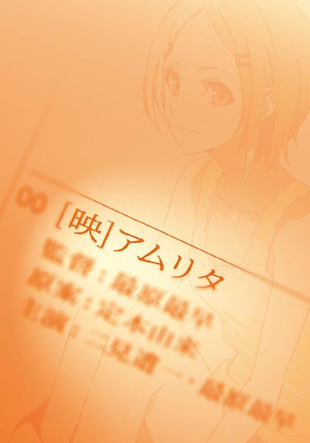
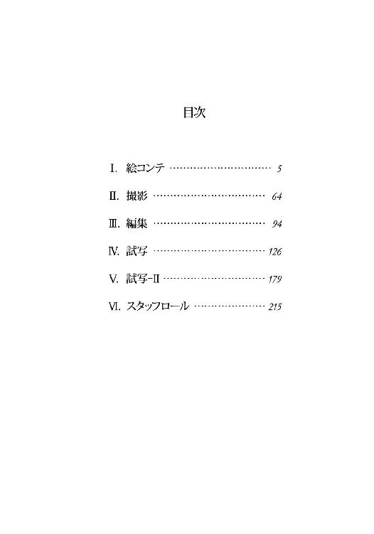
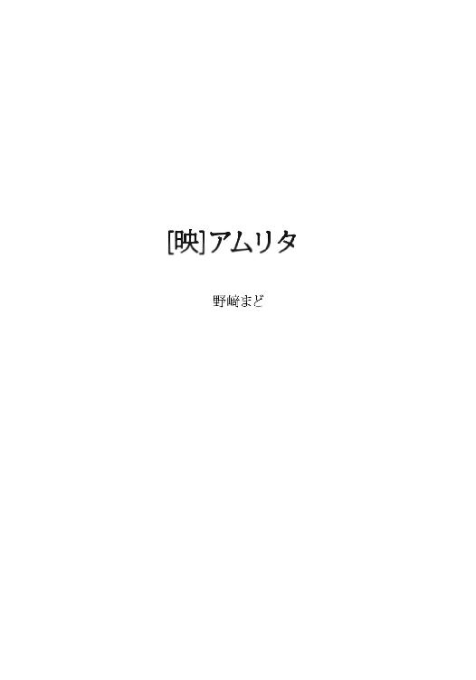

| ［映］アムリタ<［映］アムリタ> (メディアワークス文庫) | |
| 野崎 まど | |
| (2013) | |



本書（電子版）に掲載されているコンテンツ（ソフトウェア／プログラム／データ／情報を含む）の著作権およびその他の権利は、すべて株式会社ＫＡＤＯＫＡＷＡおよび正当な権利を有する第三者に帰属しています。
法律の定めがある場合または権利者の明示的な承諾がある場合を除き、これらのコンテンツを複製・転載、改変・編集、翻案・翻訳、放送・出版、公衆送信（送信可能化を含む）・再配信、販売・頒布、貸与等に使用することはできません。
Ⅰ．絵コンテ
１
大学の巨大な並木を抜けて、掲示板の前で足を止めた。
休講は無い。学長選挙がどうとか興味の無い話題ばかりだ。一つだけ、学生の訃報が貼り出されていた。原付の事故だそうだ。他人事ながら少しだけ気持ちが重くなる。
しかしサークル棟に向かって歩き出した時には、僕は再び幸せな気持ちになっていた。喩えるなら、以前から可愛いと思っていた女の子に突然呼び出されたような気分だ。そして実際そうなので、まさにこの世の春である。
撮影コースの画素はこびといえば映画学科の華である。健康的で見目麗しいビジュアルと、それを裏切らない潑剌とした性格で誰からも好かれている。それに彼氏が居るという話も聞かないとなれば、そんな子に呼び出された健全な二十歳として邪念を抱かざるを得ないであろう。
また今更フォローする訳でもないが、画素さんの何が一番魅力的かと言えば、その撮影の腕である。
去年の学祭で上映していた有志による映画は、正直役者もシナリオも苦笑ものであったが、撮影だけは感嘆の出来であった。カットによってばらつきが激しい所を見ると、ヘボい監督が強情を張ったカット以外は、画素さんの演出が入っているのではないかと勝手に思っている。
また同じ学祭で、彼女が撮った写真の展示も見た。動画とはまた別のベクトルで意志が込められた写真ばかりだった。ぶっちゃけ写真科のやつのより良く撮れていた。つまり僕は彼女の顔を知る前から、彼女の腕を高く評価していたのだということを改めて強調しておく。
サークル棟に来てみると、誰かが屋上からうどん玉を投げ、下でそれを必死に撮影していた。見事なモラトリアムの体現に心癒される。市井ではエキセントリックな光景だろうが、我らが井の頭芸術大学ではよく見る光景だ。いや、うどんを粗末にする遊びを日常的に見るわけではないのだが。芸大内は学外よりほんの少しだけファンタジーだ。
サークル棟の案内図で目的の部屋の場所を調べる。サークルに入っていない僕はこの建物とはあまり縁が無い。目指すは映画サークル『キネマ・マグラ』。爽やかさに欠けるサークル名だと思った。場所は四階の端だ。
階段を上がりながら、少し冷静になって考えてみる。
そもそも画素さんと話したのは昨日が初めてだ。お互い同学科の同学年なのでクラスメイトではあるのだが。僕は役者コースなので、撮影コースの画素さんとは正直接点があまり無い。一年次に友達のグループが分かれてしまうと、それ以外の人々との関係はかなり希薄になるので、卒業まで名前も覚えないままという人も学年には結構いるのだ。
なので、久保からアイドル画素さんを紹介された時はおい久保お前いつのまにと思ったが、彼も友達の友達の友達くらいの関係だとすぐに判ったので許してやることにした。つまり僕と画素さんは昨日まで友達の×四くらいの関係だった。
そんな彼女がなぜ友達を三人も越えて僕に声をかけてきたのか。聞けばなんと、画素さんが撮る映画に役者として出演してほしいという。
もちろん二つ返事でＯＫした。その映画をきっかけに交際が始まるところまでのシミュレーションもした。良いエンディングだった。
なんだかさっきから画素さん大好きみたいな話ばかりだが。だが僕もこう見えて役者の端くれなので、自分が評価する人間から役者として選んでもらえたことは素直に嬉しい。
まぁ僕は有名人でもなんでもないので、画素さんが僕の演技を詳しく知っているとは到底思えない。多分顔の印象とか背格好の都合で選んだのだろう。だがそれでも、彼女のカメラの前で演技できるというのは大変魅力的な誘いであった。
結論としては画素さん大好きだ。映画のような恋をしよう。そうしよう。
２
四階の廊下に出ると文化系の部室がずらりと並んでいた。ただ、部員の多いサークルほど下の階を使うという取り決めになっているので、四階五階辺りは少人数で得体の知れないサークルの巣窟と思って良い。
そんな鵺のようなサークルの一つ。『キネマ・マグラ』の部室のドアは、立ち並ぶ他の部室と同様に落書きでいっぱいだった。ドアの下方を見るとマジックのラインが一本横に走っている。端っこに「小津」と書かれていた。多分カメラの高さの話だろう。
ノックをすると中からドアが開けられる。
「ようこそー。ささ、入ってください」
僕を見た画素さんは満面の笑みで出迎えてくれた。もう充分だ。ここで帰ってもいいくらいだ。だがやっぱりもったいないのでお邪魔することにした。
部屋には画素さんしか居ない。中は思ったよりも小綺麗で、テーブル一つとイスが六脚、他にホワイトボードとパソコンデスクがある。粗末ながら給湯設備もあり、たむろするにはよさそうな部屋だ。
「その辺適当に座ってくださいな」
画素さんは流しでコーヒーを入れてくれている。僕はイスにかけて後ろ姿を眺めた。
肩までの髪は少しだけ茶色が入っている。カラータイツにキュロットにパーカーと一見すると適当な服装だが、その適当さもまた自然で良い。脚細いなぁ......。
とか思っていたら振り返った画素さんと目があってしまいどぎまぎする。いけない。浮かれているようだ。少しクールを装おう。
画素さんはコーヒーを僕の前に置くと、丁度正面の席にかけた。
「で。まだ何にも話してなかったですよね。詳しく説明したいんですけど、今日時間大丈夫です？」
「ええ、大丈夫です」
僕の返答を聞いて微笑む画素さん。幸せだ。この後、悪いことが起きなければいいのだけど。
「さて何から話そかな......」
画素さんが何かの資料をペラペラとめくる。
「えーとですね、映画を撮ります。期間はちょっと短いんですけど、今日から一ヶ月半くらいです。六月の末には完パケしたいんですね。いえ別に流す場所が具体的に決まってる訳じゃないんですけど」
一ヶ月半。自主制作の撮影期間としてはそんなに短くもないと思う。だが完パケというと撮影後の編集やらダビングやらの作業も完全に終わらせるという意味だ。大学の授業も普通にあることを考えると、結構バタバタすることになりそうだ。
「でもコンテがもう出来てるので。だから後はスタッフが揃えば、すぐにでも撮影インできるんですよ。二見君が最後のスタッフなので、撮影期間は二見君の決断で左右されるわけわけなのです」
二見君というのは何を隠そう僕である。あとわけわけはどうかと思った。
「ま、でも。今この場で出演を決めてっていうのも乱暴ですし。コンテを読んで面白そうだったら是非ってことで。今渡しますから、今日帰ってからでも読んでみて下さいな」
「了解です」
「というか、そのー。自分たちで言うのもなんですけど。この映画、絶対良い映画になると思うんですよ。コンテの段階でもかなり引き込まれる内容でしたから......もう本当に楽しみで」
絵コンテについてまるで他人事のように話す画素さん。コンテマンが立っているんだろうか。いやそもそもシナリオは誰なんだろう。
画素さんが撮ると聞いて、画素さんに誘われた。だから画素さんが監督だと思いこんでしまっていたが。よく考えたらその辺を一切確認していなかった。
一抹の不安を払拭するため聞いてみる。
「その、今回のコンテを描いた人は......」
「監督ですよ？」
「あ、監督さんいるんですね......」
不安は的中した。
「そりゃあいますよ。私は撮影専門ですし。それは私も演出の勉強はしてますけど。でも監督は監督志望者がやるのが一番だと思いますから」
もっともな話だ。
しかしそうなると問題なのは監督が誰かである。
いくら撮影の腕が見事でも、いくら役者に力があっても（無いけれども）、監督の裁量で映画の出来は大きく左右されてしまう。コンテを読んだ画素さんの審査眼を疑うわけではないけれど、やはり不安にはなる。
「そんな顔しなくても平気ですよぉ」
画素さんが困り顔で言った。どうやら不安が顔に出てしまっていたらしい。
「二見君も多分知ってると思いますけど。ほら、あの、有名人ですよ。一年の最原最早さん。天才の」
３
夕方。
ビデオレンタル・販売店『映画館』のカウンターは無人であった。なぜ無人なのかといえば、バイトの僕が奥で映画を見ていたからに他ならないが。
ゲイであることを自覚してしまった男の苦悩を描いたフランス映画を見終わってカウンターに戻ると、意外なことに人が居た。店長だった。
「二見君、ちゃんとカウンターに居てくれないと困るよう」
四十八歳の店長はかわいらしく言った。中年のおじさんとは思えない可愛さだった。おじかわいい。
「しかし店長......僕がいないことで、一体、誰が困るんですか」
「そんな質問を真剣な演技で言わないでいいよ......閉店したくなるじゃないか」
店長が十年以上前に脱サラして始めたという『映画館』は、ぶっちゃけ完全に趣味の店だった。芸大のそばなのでレンタルビデオ屋の需要が無いわけではないのだが、その需要はもう何年も前から吉祥寺の大型チェーン店に満たされてしまっている。
いや、もちろんこの店にも良いところはある。例えば大型店が置いてくれないようなマニアックな映画があったりもするし、クラシック映画に関してはちょっと偏執的なくらい揃っている。あとモンスターパニック映画も病的に揃っている。店長の脳にそのまま扉を取り付けて店にしたような、人間味あふれる気持ちの悪い店なのだ。
だが残念なことに、それらの他店にない魅力的な作品達は、考古学者が貝塚を調査していて発見したという古代のテクノロジー・ＶＨＳで保存されている。加えて外箱に「巻き戻してご返却ください」という意味不明の古代語が書き添えられている。お客さんもやはり意味が解らないと借りにくいようで、レンタルの回転率は非常に悪い。
以前の僕はこの店の前を通る度に、何故つぶれないんだろうなぁと思っていたが、実際に中で働いてみると何故つぶれないんだろうなぁと思う。しかし店長は依然としてバイトを雇い続けているし、僕はバイト代をもらいながらのんびりと映画を見たりしている。幸せとはこういうところにあるのかもしれない。
「何見てたの？」
「『僕を殺す恋』ですって」
僕はパッケージを見せた。
「男が男を好きになってずっと悩んでました。二時間」
「あー好きそう」
店長は皮肉っぽい顔で言った。仰る通り好きだけど。
「面白かった？」
「うーん......いや、個人的には良いと思いますけど。ただ、やっぱり一般受けする面白さがあるかと言われると。出来自体は良かったですよ」
ゲイという題材はとっつきにくかったが、葛藤と愛憎の心理描写はキェシロフスキのトリコロールを彷彿とさせるような緻密さがあった。映画の質自体は高かったと思う。なのでやはり最大の欠点は題材の取っつきにくさと性描写の重さだろう。
まぁでも、今週見た三本の中では一番良い出来だったのは間違いない。先週見た五本なんて出来の話をしようにも、内容をさっぱり覚えていない。六本だったかもしれない。
その五本だか六本だかの内容をなんとか思い出そうとしていると、店長は珍しい物を見たような目で僕を見ていた。
「へぇ......二見君でも、そんな評価することあるんだ」
「え？ なんかおかしかったですか？」
「いや、二見君はいつも役者の演技の話ばっかりだからさ。それにこの映画みたいなマイノリティっぽいの好きじゃん。一般受けなんて言うから、ちょっとびっくりしたんだよ」
なるほど。言われてみて自分でも確かにそう思う。
最近ちょっと映画の見方が変わってきたように感じる。これまで自分が役者のせいか、見るのも役者の演技の善し悪しばかりだったけれど。最近は演出とか作品全体のことを見るようになった気がする。
「良い傾向だよ。役者だって映画全体のことを考えてないと、良い演技なんて絶対できないからね。役者だけじゃないけど。全てのスタッフが専門家であり、同時に全体も見られるっていうのが理想だよね。どのセクションも頭は使えるだけ使ったほうが良いのさ。ほら、もったいないし」
店長はちょっと語りに入っている。こういう話になると長い。僕も加わると更に長いのだけど。
やっぱり店長は映画が好きなんだなぁと思った。レンタルビデオ屋を始めるほどに。
「若い人はすぐ思っちゃうんだよ。才能があれば考えなくても簡単に答えが出るんだって。パッと思いつくものだって。でも違うんだよ。良い作品てのはね、もの凄くたくさん考えられた作品に他ならない。そりゃあこの世には、別次元の天才なんてのも居るのかもしれないけどね」
天才。
その言葉にぴくりと反応してしまう。
天才の意味を知らないわけではないが。しかし天才とは何かと言われると簡単には答えられない。
「店長。例えばなんですけど......」
僕は天才と呼ばれる一年生の事を考えながら聞いた。
「仮に天才監督が居たとしたら、どんな監督だと思いますか？」
「天才監督？」
言葉を繰り返した後、店長は考え始めた。答えにくいだろうと思う。そもそもが漠然とした問題だ。
「うぅん......監督の才能がある人ってのは......監督が上手い人ってことだよね。なんか『映画監督』って言葉には色んなイメージが付いちゃってるけど、監督は監督だからね。現場監督や試験監督と一緒さ。見て、仕切る人」
見て、仕切る人。
つまり責任者だ。
「だから才能ある監督っていうのは、見て仕切るのが上手い人。つまり、人を使う能力が高い人のことだと思うなぁ。役者を使って、スタッフを使って、それで面白い映画を作れる人。面白い話を考えるだけだったら作家でも良いんだからね。でも作家に映画は作れない。だから才能有る監督ってのはやっぱり、人を使って面白い作品を作る才能があるってことだよ。なんならストーリーから何から全部他人に考えさせても良いと思うよ」
人を使う才能。
店長の話を聞いて、僕はまだ見ぬ天才監督を想像する。
一年生。年下だ。浪人ではなく現役で、正真正銘の十八歳だと聞いている。二年の僕とは一つ違いになる。
一つとはいえ、年下の人間に使われるというのは、やはり抵抗があるものではないだろうか。それとも天才監督ともなれば、僕もそのうち使われる事を喜びに感じるようになるのだろうか。それは今考えてもしょうがないことだけれど。
「ていうのがまぁ、一般論で言うところの、才能有る監督の話だけど」
考えこんでいたら、思いがけず店長の話が続いた。
「一般論？」
「うーん......才能ある監督、って言うだけなら今話した通りだと思うんだけどね。でも天才はきっと違うよ。天才はきっとそうじゃない」
店長は僕と話しているのに、もう僕を見てはいなかった。どこか遠く、ずっとずっと遠くを見ていた。遥かに遠い場所にある、映画の楽園を見るような目だった。
「天才監督はね、凄い映画を作る人だよ。過程なんてどうでもいい。フィルムが何よりも凄いんだ。どう凄いのか誰にも説明できない。だから誰にも真似できない。でも絶対的で凄絶で唯一で無二の映画。それはきっと、天才と呼ばれる人間に変装した、神様が作った映画なんだよ」
店長はその楽園をしばらく眺めていた。
４
バイトの帰り、コンビニに寄って夜食を調達する。このコンビニはキネ旬が置いてある珍しい店なので贔屓にしている。
大抵立ち読みで済ませるのだが、今月は好きな役者のインタビューが載っているので買うことにした。立ち読みでヨレヨレになってたらやだな、とかなり身勝手な事を考えながら手に取ると、全く読まれた形跡がなかった。深夜のコンビニの片隅で日本映画界の将来を憂う。
家に帰るともう一時を回っていた。
机の上に買ってきた弁当と飲み物と、そしてもらったコンテを広げる。今から読み出したら朝になりそうだが、別に朝になったからどうということはない。当然明日も講義はあるが、講義というのは出ないことで初めて完成するもの。そもそもそんなものと中性子星より重いという画素さんのお願いを天秤にかければ、天秤が重力崩壊するのは当然である。危険なので早く読んで返事をしなければならない。まぁ尺は四○分くらいだと言っていたし、読むだけならそんなに時間はかからないはずだ。
表紙に目を落とす。
『月の海』と書かれている。
これがタイトルだろうか。字は手書きだったが、最原最早の字は美しかった。ペン習字でも習っていそうなくらい綺麗な字だった。
天才・最原最早。
一年生。
女。
彼女の噂は入学する前からすでにあった。
幾人かの教授が、ある人は興奮しながら、ある人は落胆しながら、しかし口を揃えて「天才が入学してくる」と漏らしていたからだ。
教授に聞いた話によると、どうやら彼女は一芸入試の受験者で、その芸として一本の自主制作映画を送りつけてきたらしい。そしてそれを見た教授勢は手放しに彼女の合格を決めたという。
正確には全会一致ではなく「こんなのは映画じゃない」と怒り出す教授も居たそうだが。ただ、僕が高校時代に作ったフィルムを教授達に見せても鼻で笑われるかニヤニヤされるだけだと思うと、その反応は正直羨ましい。
しかも。なんと彼女は高校生の時に日展だかなんだか（あまり詳しくないのでよく知らないが）に洋画を出展して、特選とかを獲っているのだそうだ。そしてその選出も入試に同じく両極端で、これは天才だこんなの絵じゃないで大もめだったとか。
それを教えてくれた教授がその時の美術誌を見せてくれたのだが、載っていた彼女の受賞コメントがおかしかった。「もう絵画は描きません。動かすのが大変なので」
そんな天才肌のオールヌードのような最原最早だが、四月に入学してからは目立つ噂もなく大人しいものだった。僕も実はまだ顔も知らない。久保は野次馬っぷりを隠そうともせず見物に行ったそうだが、僕はクールなキャラのロールプレイ中だったので自制した。帰ってきた久保がまじかわいいと言うのでキャラセレクト画面に戻りたくもなったが。
さてはてつまり。
この絵コンテは天才美少女監督最原最早の大学デビュー作というわけだ。流石にここまで周り中が持ち上げまくりだと、読む前からかなり斜めに構えてしまうけれど。でも画素さんも誉めちぎっていたことだし、そこまで変なものでは無いのだろう。
そんなことを考えながら僕は表紙をめくった。最初のカットは黒みだった。そこからフェード イ ン し て
意識が蘇った、という表現が一番近いのだろうか。
なぜ目の前に自分の部屋があるのかわからなかった。記憶はある。僕は別にどこにも出かけていない。だから当たり前のことだ。それに気付くまでに数秒かかった。
喉が渇いた。死ぬほど喉が渇いた。水を飲むために立ち上がろうとしたが、立ち上がるのに失敗した。膝がガクガクになっている。
床にあった携帯の時計を見る。朝の九時だった。読み始めたのが夜中の一時だったから、八時間ぶっ続けでコンテを読み続けていたということか。
しかし残念ながら携帯の日付は、僕が覚えている日付より二日ほど多かった。
二日後の朝九時。
読み始めてから五十六時間が経っていた。
僕は呆然と部屋を見回した。携帯は二日後だと言っているが、この部屋には携帯以外に時間の経過を教えてくれるものがない。壁のカレンダーを見ても今日が何日かは教えてくれなかった。
口元に手を当てて考える。携帯の時刻設定が何かのはずみでズレたという希望的な仮説が浮かんだ瞬間に消えた。
ヒゲが伸びている。
決定的だった。どう触っても半日分の伸びではない。携帯の表示は正確無比であり、僕は間違いなく五十六時間の間、コンテを読み続けていたのだ。
「ええ......？」
僕は一人呻いた。一体、何が起こっているんだ。
膝を無理矢理伸ばし、足を休ませてから必死で立ち上がる。よろよろと台所に向かい、水をがぶがぶと飲んだ。大量の水を胃に流しこみ、荒く息をつく。
台所からテーブルの上を見た。
あのコンテがある。五十時間以上めくられ続けたコンテはもう端々が破けている。
僕は記憶の断片を集めた。読んだはずの内容をもう一度思い出す。
ストーリーは覚えている。普通の。そう今思い出しても普通の恋愛映画だった。面白くはあったけれど。おかしくはなかった。
では、なぜそれを五十時間も読んでいたのか。それが解らなかった。もうその質問の答えは、僕の理解の範疇を超えているように思えた。
答えを求めて、コンテの表紙にもう一度視線を送ったその時、絵コンテが、僕を見た気がした。
僕は走って家を出た。
アパートの駐輪場に止めてある自転車にまたがり、全力でこぎ出した。
そのまま大学に向かう。理由は二つ。一つは、あのコンテのことを画素さんに聞くために。
もう一つは、恐怖から逃れるためだった。
もうあの部屋に、コンテと二人きりでは居られなかった。
５
朝のサークル棟は人気がほとんどなかったが、わずかでも人が居るというだけで僕は安心できた。
階段を上がり、映画サークル『キネマ・マグラ』の部室へと向かう。
僕は正直、何か具体的な計画があってここに来たわけではない。今の時間、画素さんは講義に出ているだろうから部室には居ないだろう。それに僕は部室の鍵を持っていないので中に入ることもできない。
だけど、もうあのコンテとかかわりがあるのはここしか無かった。
部室まで来て、ドアをノックしてからノブを回してみる。案の定、鍵がかかっている。予想していたことを確かめてから、僕は廊下の壁に寄りかかって、ため息をついた。
画素さんが来るのはきっと夕方だろう。それまでどうしようか。もう大人しく講義に出て待とうかとも思う。きっと何も頭に入らないだろうけれど。
ふと廊下を見渡すと誰もいない。窓の外には朝の陽光が降り注いでいるにもかかわらず、僕はまた怖くなってきた。なんでもいいから人が居るところに行こうと思った。
その時、カチャリと音がした。
鍵が開く音。紛れもなく目の前のドアからだ。
中に、誰かいる。
僕は身を竦ませてドアを凝視する。ノブがゆっくりと回り、そして扉が開いていった。
開けたのは知らない子だった。
背は高くない。短い黒髪が室内からの逆光を受けて妖しい光沢を放っている。薄いキャミソールに短パンという、自分の家にいるような服装。もしかして部屋で寝ていたのかもしれない。
僕は彼女の表情を確かめようと顔を見た。
前髪を両側に分けてピンで留めている。そのせいでおでこと目がはっきり見える。
彼女のしっかりと見開かれた目が僕を見ている。その目には全く動きが感じられない。一ミリのブレもなく、ただまっすぐ僕を見ている。目の前にいるのに写真を見ているような感覚だった。
僕は彼女を呼んだ。
当然、初対面だ。
にもかかわらず僕はある種の確信を持ってその名を呼んでいた。
「最原......最早さん？」
名を呼ばれた彼女は、いまだ微動だにしないまま、目と口だけで薄く微笑んで言った。
「初めまして。二見遭一さん......ですね」
僕は首だけでかろうじて答えた。頭の中が真っ白になってしまっている。なにを、何から話せばいい？ 何を聞けば
「『月の海』の絵コンテを読まれましたか？」
彼女は突然質問をしてきた。僕はただ頷いた。
「体に異常はありませんか？」
矢継ぎ早の質問に思考が追いつかない。何故そんな質問を？ つまり、それは、知っていたのか。君は、自分の描いたもので僕があんな状態になることを知っていたのか。
「異常はない......です。食事を摂ってないだけで」
「そうですか......。いえ。私の絵コンテを読んで体調を崩された方が以前にも居たので。少し気になっただけです」
彼女はよそ見をしながら話している。僕はたまらずに聞く。
「あの......あのコンテは、一体何なんです？」
「二見さん。愛とはなんですか？」
僕の質問は無視され、いきなり脈絡の無い質問をされる。当然即答出来ようはずもない。いやこんな質問、普段だって答えられない。
「......わかりません」僕は素直に答えた。
「何かを愛したことがありますか？」
「......それもわかりません。でも家族のことは、愛していると......思う」
僕の頭はもう真っ白で、ただありのままを答えるしかできなかった。会話のペースが全く摑めない。冷静にならないと。僕だって聞きたいことがたくさんあるのに。
「私の事を愛していますか？」
そしてまた真っ白に引き戻された。
愛しているか？ 愛しているかと聞いたのか？ たった今、出会ったばかりの僕に。
「愛してないです......。いや、今会ったばかりでそんな愛とか急に言われても」
「私たちはこれから映画を撮ります」
僕の言葉を途中で遮って、彼女は言った。
「映画は素晴らしいものです。映像を通して、人の人生に語りかけることができる」
彼女は遠くを見つめながら、映画の素晴らしさを語った。
映画は人の人生に語りかけることができる。
何も解り合えなかったこの不毛な会話の中で、判ったのは彼女も映画が好きだということ。その一点だけだった。
「私たちの作る映画は」
彼女は僕に向き直り、もう一度薄く微笑んだ。
「とても素敵なものになりますよ」
６
午後六時。
講義も終わり、皆バイトにサークルに恋にドリンクバーに勤しむ中。サークル棟四階『キネマ・マグラ』の部室には今回のメインスタッフが勢揃いしていた。
だが僕が知らない人は一人だけだった。つまり全部で四人である。もちろん四人だけでは到底人手が足りないので、他にも要所で手伝ってくれるお手伝いさんが何人かは居るらしいが。メインとなるスタッフはこの四人だけだそうだ。
今紹介されたばかりの兼森さんは、撮影コースの三年生なので一年先輩になる。兼森さんは趣味で音楽活動をしていて（路上でキーボードを弾くのだとか）、今回は音楽と音響全般を担当してくれるという。ちなみに撮影コースは撮影の他に録音も一緒に学ぶので、一応先輩は音響が専門ということになる。言ってもみんなアマだけれども。
兼森さんは長身細身の大人しそうな人だ。大学の映画サークルの中には体育会系っぽい所もちらほらもあるが、『キネマ・マグラ』は見るからに文化系だった。完全な文化系の僕は少し安心した。
だから気になるのは、さっき兼森さんと初めて顔を合わせた時に、僕のことを見て目を剝いて驚いていたことくらいだ。あと小声で「おいおい......」とも言った。なんなんだ。誰に会ってもああだと言うのなら、かなり問題だと思う。
そして画素さんには怒られた。そりゃあ撮影期間に余裕がないのに、二日も音信不通だったのだから当然だろう。だけど僕が二日前と同じ格好で、ヒゲもみっともなく伸びた顔で現れたせいか、画素さんは怒りつつ心配しつつでくるくるしていた。
しかし画素さんが普通に怒ったということは。つまり、僕があのコンテを二日間も読み続けるとは全く思っていなかった、ということだろうか。
画素さんはあのコンテを読んでも平気だったんだろうか。実は僕だけがおかしいのかと思い、五十時間読んでいたことは伏せた。どこかでタイミングを見て聞いてみたいが......。なんとかして二人きりになれないだろうか。いやそういう意味ではなく。
ちなみに僕もさっき、一旦着替えに帰ったときにあのコンテを恐る恐るもう一度開いてみた。だが、もうあの時のように意識を持っていかれたりはしなかった。あれは一度きりの現象なのだろうか。いや一度でなかったらこのコンテで映画を作るなんて不可能だが。
「さて、自己紹介も終わったけど......」
兼森さんが口を開いた。
「これからどうしようか、最原さん」
後輩にもさん付けの兼森さん。物腰やわらかで素敵な人だ。
振られた最原さんが顔を向けた。
「決めてください」
何かないのかよ、と心の中で突っ込んでしまった。店長の話で監督＝仕切る人というイメージを持ってしまっていたので、ちょっと拍子抜けする。
「兼森さん、最原さんはそう言うってわかってたでしょう？」画素さんが聞く。
「うん......いや、そうなんだけど。一応監督だしさ。じゃあ例によって仕切ってよ画素さん」
「なんかそういう言い方されると私が仕切り屋みたいなんですけど......。誤解しないでくださいね、二見君」
「しませんよ。画素さんは天使です」
「二見君、変ー」
軽く流された。だが小さな勇気は評価してほしいものだ。
「じゃあ仕切り任されました、僭越ながら私、画素が進行させていただきます。えーとまず現状の説明から。機材は一通り揃ってます。今回は予算も無いですし、フィルムは諦めてデジカム撮です。ですが！ シネ研からフルＨＤのヤツを借りることに成功しました！」
「おおー」
「二見君ごめんなさい......頑張って反応くれて嬉しいんですけど......うち残りの二人がこんなですから......無理しなくていいですから......」
力及ばなかったようだ。とても静かなサークルなのだと理解した。高齢者サークルの月例会か。
「というわけで機材はかなり良いんです。すでに私一人で試し撮りに行ってきましたが......もう......すごいんですよフルＨＤというのは......。見たくもないものまで鮮明に映してしまうんです......まさに悪魔の発明ですよ......」
嫌なんだか嬉しいんだか微妙な表情で語る画素さん。ＨＤ撮影の特許を悪魔が持っているとは知らなかったが、さすがに撮影科だけあってカメラには並々ならぬこだわりがあるようだ。
「なので役者の皆さんは心して下さい。全部映りますし、全部映しますから。貴方達の喜びも悲しみも誕生も臨終も全てです」
「でも今回のシナリオに誕生と臨終のシーンはありませんけど」
ついつっこんでしまった。
「無くても撮れるんですよ......このカメラなら......」
多分気のせいだろう。
それより、少し気になったことがあったので質問をする。
「あの、役者の皆さんて。僕と、あと誰がやるんです？」
「最原さんですよ？ 私カメラ持っちゃいますし」
ええ。それは。
僕は最原さんを見た。
最原さんもそれに気付いて僕を見た。お互い何も言わなかったのでしばし見つめ合ってしまう。僕はつい怪訝な顔をしてしまった。そしてそれを画素さんに見つかってしまう。
「二見君てばなんて失礼な......。相手役はこの人です！ って紹介してるのに怪訝な顔をするとかデリカシーがないですよ？ ちょっと酷いですよ？」
「いや今のは誰だってあんな顔するよ......」
助け船を出してくれた兼森さんが天使に見えた。四人のうち二人が天使という天使率の高い部室になってしまった。
「でも、最原さんて監督コースでしょう？」僕は聞く。「役者の経験あるんですか？」
「ありません」
「ありませんて......。大丈夫なんですか？」
「大丈夫ですよ。ご覧になりますか？」
ご覧になりますかと来た。今この場で演技を見せてくれるというのだろうか。
まるでこんなの簡単ですよといわんばかりの態度にちょっとカチンときた。ぺーぺーの僕が言うのもなんだが、役者というのはそんなに甘いものではないのだ。いくら監督の天才だからって一朝一夕にできるものではないのだ。
僕は後輩に向かって大人げないと思いつつも、売り言葉に買い言葉でつい言ってしまう。
「ええ。じゃあ見せてください」
すると彼女は服の胸元を引っ張って下着を見せてくれた。
「なぜ下着を見せる！」
突然のことに驚いて、つい綺麗につっこんでしまった。
つっこんだ後でドキドキしてきた......。えぇ......なにこの子......。
「なぜか......と言いますと......。今、二見さんに見せてくださいと言われて、当然演技を見せてほしいと言われたのだなぁと思いました。ですから、ここでもし下着を見せたら二見さんはとても驚かれると思ったので、そう思ったら居ても立ってもいられず......」
「なんなんですか貴方は......」
「すみません」
謝られた。素直だ。
「ごめんなさい二見君......。最原さんこういう子なんで」
画素さんがフォローにもならないフォローをくれる。どういう子だ。
「でもでも今のつっこみ綺麗でしたよね、兼森さん」
「そうだねぇ、美しかったよ。二見君才能あるんじゃないかな」
つっこみの才能があると言われても正直微妙である。
「さて。えふん。じゃあ続きを」
画素さんが変な咳払いで話を再開する。
「すでに絵コンテが完成してます。もうみんな知ってると思いますが、最原さんの絵がかなり細部まで書き込まれてますから、画的には結構固まってるんですね。ロケ地も大学周りで全部決まっちゃってますし、照明プランも大分進んでるんです。なので、本当に明日から撮影インできるんですよ二見君」
これは素直に驚いた。自主制作映画のいきあたりばったりぶりは高校時代にも去年の一年次にもたっぷり経験しているが、クランクインの前に照明の検討がそんなに進んでいるなんて初めてだ。さすがは画素さんと言ったところだろうか。
「なんか、気合い入ってますね。僕が今までやってきた制作なんて、現場でやりながら考えるみたいなドタバタばっかりで。やっぱり画素さんすごいですね。良い映像はそういう計画性の高さから生まれるのかなぁ......」
「いやいや私なんてそんな」
「画素さんは今回気合い入ってるよね」兼森さんがコンテを見ながら言う。「まぁ僕も同じだけど。やっぱりこれだけのコンテがあればモチベーションも違うよ。それにやっぱり定本の最後のシナリオだしね......」
兼森さんの口から知らない名前が出た。サダモト？ 覚えは無いが、どこかで聞いた気もする。
ふと見ると画素さんが変な顔をしている。やべっていう感じの顔だ。なにかやばいらしい。
「画素さんどうかしました？」
声をかけると画素さんは兼森さんと顔を見合わせた。
兼森さんは何かを理解したようだった。
「ああ......そうか。その話をしないといけないな......」
「なにかあるんですか？」僕は聞く。
「いや、うん、隠し事ってわけでもないんだけど」
二人はちょっと困ったような顔をしている。最原さんは一人よそ見をしていた。窓の外、暮れかけの紫色の景色を見つめていた。
「話しても良いよね、最原さん」
兼森さんが聞くと、彼女は「いいですよ」とだけ言った。
そして、最原さんの許可をもらった兼森さんが僕に教えてくれた。この映画の始まりの話。これまでのあらすじ。
「この映画『月の海』は、最原さんが監督で、最原さんがコンテを切っているよね。でも、実はシナリオを書いたのは別の人なんだ。名前は定本、定本由来という。由来なんて名前だけど男だよ。監督コースの三年で僕の友達、だったんだけどね......。死んだんだよ。二週間前、原付の事故で。掲示板で訃報を見なかった？ 多分まだ貼ってあると思うよ。まぁそれは本当に不幸な事故で......車と接触したんだけど、それも全面的に相手の過失でね......。ともかく、死んだ。あっけないものだと思ったよ。さて本当のことを言うと、この映画『月の海』は元々定本が監督をやる予定だった映画なんだよ。そして定本は自分で役者もやる予定だった。その相手役として、最原さんをスカウトして来たんだ。だから当初の予定通りなら監督・シナリオ・コンテ・主演男優が定本、主演女優が最原さんてことだね。でも結局定本は亡くなってしまって、当然撮影は中止になった。だって監督も役者も居なくなってしまって。事故の前にシナリオは書き上げたと言っていたけど、そのシナリオも多分遺品の中だったから。もう続けようが無かった。どうしようもなくて、そのまま僕らは解散したんだ。そしたら先週、突然最原さんが来て『定本のシナリオをコンテに起こしたから撮影したい』って言いだすじゃないか。本当にびっくりしたよ。その上、代わりの役者を見付けてあるとも。そう、君に声をかけたのは最原さんのご指名なんだよ。理由は僕らは知らないから、本人に聞いてほしいんだけど。だから二見君は定本の代わりの役者、ということになる。シナリオが定本、主演男優は二見君、そして監督・コンテ・主演女優が最原さんに変更されたわけだ。だからその、そういう経緯があるから、割とみんな思い入れがある作品なんだ。画素さんも定本とは一年からの付き合いだし。それに何より最原さんがね。うん？ ああ、そうだ。どうして僕がさっき彼女に話の許可を取ったかっていうと」
「定本は亡くなる前に、最原さんと付き合い始めたばかりだったんだよ」
７
ビールばかり、もう六杯も飲んでいる。さすがにお腹がたぽたぽしてきたのでそろそろゆっくり飲める酒に切り替えようかというプランは「生もう四つ」という画素さんの美声によって潰えた。
大筋の事情を聞いた僕は、結局撮影に参加することにした。
画素さんは、定本さんの事を黙っていたのをしきりに謝ってくれた。死んだ人の代役なんて絶対にいやがると思って言い出せなかったそうだ。
だけど正直に言えば、僕はそれを聞いても別にショックを受けたりはしていなかった。人が一人亡くなっていることは大変なことだけれど、僕は定本さんと知り合いではなかったし、あくまで自分が関わる前の話で、不幸な事故という以上の認識はなかった。
いやむしろ。他の人には本当に悪いと思いつつも、僕は逆の気持ちだった。
定本さんが亡くなったことで降って湧いた天才最原さんの監督作。
最原さんのコンテ。
あの人知を超えたコンテ。
僕は最原最早の作る映画が見てみたい。それがどんなものかを知りたい。
絵コンテに五十時間も囚われてしまった僕がもし完成した映画を見たら、一体どうなってしまうのだろう。
僕にはもう、この映画に参加しないと言う選択肢は無かった。
そんなことを真剣に考えていたら、誰かの顔が真横まで来ていた。美人だった。
「ねぇ聞いてます？ 二見君？ 聞いてください？ 二見君？ 二見君？ 二見君？ 二見君............二見君？」
「そうです画素さん。二見です。二見ですよ」
そんなわけで、参加が決まったからには早速次の重要な仕事をこなさねばならない。打ち入りである。
打ち入りというのは言ってしまえば飲み会なのだが。これからみんなで頑張ろうという意味を込めて飲むという、とても大切な行事なのだ。ちなみに工程の半分まで頑張れたら中打ちで飲んで、最後まで頑張れたら打ち上げで飲む。
吉祥寺まで出れば飲み屋はたくさんあるのだが、みんなそんなにお金も無いので、大学近くのチェーン居酒屋『つぼ魚』に落ち着いた。
平日の夜だったが、店内は井の芸の学生でいっぱいだった。もちろん映画科だけでなく、音楽科やら美術科やら文芸科やら各学科の学生が入り交じっている。だがどのテーブルもやってることは似たようなもので、それぞれの分野における若い情熱の迸りとぶつかり合いだ。
そして例に漏れず、僕らのテーブルもそんなモードに突入していた。最初こそアパートはどの辺だの地元はどこだの自己紹介兼世間話に終始していたが、ジョッキ四杯も空ければ化けの皮も剝がれてくる。
「だからね画素さん。君は撮ってるだけなんだよ。創ってないんだよ。君という人間は街の監視カメラより少しだけ効率が良い人間装置に過ぎないってことだよ」
辛辣なことを普通のテンションで言い放つ兼森さんだった。最近のボンタン飴は技術の進歩でオブラートの感触がほとんど感じられないという話を思い出した。兼森さんは単に包んでないだけかもしれないが。
「それはわかります、わかってます。私だって自分のカメラに演出の幅が無いのは知ってますよ」
「知っているとしたら今度はどう直すかって話に変わるだろう」
「そうですね」
「じゃあ創るっていったいなんだい画素さん。新しいものを生むって事じゃないのかい」
「そう......かなぁ......ううん......」
「そうだよ。ねぇ二見君」
二人の議論を他人事のように眺めていたら突然僕の方に飛び火してきた。
「ねぇ二見君。創るって新しいものを創ることだろう？ 世の中にはリメイクっていう物もあるけれど僕はほとんど評価していないよ。メイクである映画のほうが圧倒的に素晴らしいと思うからね」
「うーん、僕もリメイクはそんなに好きではないですけど......。でもリメイクにも面白いところはあると思いますし」
「二見君はＡＩみたいな受け答えをするね......。僕がチューリングテストのジャッジだったら、危うく君は人じゃないと書く所だよ」
一言言っただけで人権を剝奪されかけていた。
大人しそうな先輩に見えた兼森さんも、やはり芸大の学生だ。何かを作りたいと思っている人間は、作っていない時にだって表現欲求がある。酒でも入れば熱く語ってしまうのは当然なのだ。兼森さんはさらに続ける。
「人間は常に新しいものを求めている。だから映画も新しくなきゃいけない」
「変化を嫌う人だっていますよ」
「否定はしないさ。そういう人は、もう自分というものが完成していて完璧だと思いこんでいるか、もしくはある程度の完成度が実現できたので、そこに手を入れて価値が下がることを恐れているんだろうね。そういう生き方もある。でも僕はそのどちらも単なる過大評価だと思うね。で、最原さんはどう？」
突然話を振られた最原さんだったが、別段何の反応を見せるでもなかった。この子は僕らと同じだけ飲んでるはずなのだが、あまりというか全然変わりがない。ちなみに画素さんはちょっとウトウトしてきている。
「最原さんは、新しいものって何だと思う？」
兼森さんが聞いた。
すると最原さんは鞄の中から一通の封筒を取り出して兼森さんに渡した。封がしてある。
「開けてみてください」
封を破ると、中から折りたたんだ紙が出てきた。
開くと〝トマト〟と書いてあった。
「トマトってなんですか、最原さん」
僕が聞くと、彼女は不敵に笑った。
「兼森さんの質問を事前に予測して答えを用意しているという手品に失敗したんです」
「だったらしまっとけ！」
またつっこんでしまった。
「二見君は本当にスキル高いよね」兼森さんが言う。
「大したことないですよ。こんな人」
と言われた。最原さんにだ。なぜそんなことを言われなければならないのだろう......。
「僕が何かしましたか最原さん......」
「悔しかったら私を感服させるようなつっこみを披露してみてください」
「なんですかその流れは」
「王道かと思ったので......」
自信なさげだった。この子はたしか天才だったような気がするが、気のせいだったかもしれない。
「それで最原さんは、新しいものってどんなものだと思う？」兼森さんは再び聞いた。
「多分フェムトよりもうちょっと小さいサイズ、具体的には十のマイナス十八乗倍くらいの大きさだと推測できるものですね」
「アトらしいものだな！」
僕は脳をフル回転させて必死につっこんだ。人生で一番頭を使ったかもしれない。
最原さんが微笑んで握手を求めてくる。しょうがないので握り返す。つっこめたことが少しだけ嬉しいのが、その十倍悔しかった。
「無意味なやりとりは、もうやめましょうか」
「お前は最低だな！」
僕のつっこみを正しく受け流して、最原さんはさっきの質問に答え始めた。
「新しい、というのは多くの場合、主観的な定義です。生まれたてのネズミに見せればどんなものでも新しい」
なぜ赤ん坊でなくネズミなのかがよく分からなかったが、そんな質問を挟む間もなく彼女は続ける。
「ですから、まず最初に誰に見せる映画なのかを決めて、そしてその人が見たことのない映画を作ればいいのです」
「つまり映画のオーダーメイドってことだね。なるほどね......」
兼森さんは最原さんの意見を聞いて考え込んだ。
始めにお客さんが決まっていて、その人だけを感動させるために作るという手法。映画のオーダーメイド。そういうのもありといえばありなのだろう。
でも制作者にその方法の是非を問えば、多くの人が否と答えるのではなかろうか。
映画は普通、不特定多数に向けて作られる。マーケティングやターゲット層の設定はあるにせよ、その中で千差万別する人々をまとめて相手にする前提で撮るものだ。兼森さんも僕の考えと同じようだった。
「でも最原さん、映画って多数に見てもらうものじゃない？ オーダーメイドは凄く分かり易くて有りだとは思うけど。僕はせっかく作るのだから何百万、何千万の人に感動を与えたいと思う。それとも、もう現代においては何千万の人を感動させるような新しさを創造するのは無理って考えてるのかな？」
「兼森さんが話されているのは程度のお話ですね」
最原さんは考えるような素振りもなく、流れるように続けた。
「何千万人を感動させた映画はすでにあります。これからも作られるでしょう。何億人を感動させた映画は多分ありませんね。これから作られる可能性はあります。ですが形態としては映画よりも、宗教に近くなってしまうのかもしれません。そして、全人類を感動させる映画はこれまで間違いなく存在しませんでしたし、これからも作られる事はないでしょう。人種、年齢、性別、文化を超えて全ての人類に同じ感動を引き起こすフィルムは、きっと映画とは定義されないと思います」
最原さんは分析をした。こんな真面目な話もできるのだなと思いながら聞く。
「そうだねぇ......そんな映画があったら麻薬と一緒だね。ちょっと興味はあるけど......」
なにげに怖いことを言う兼森さんだった。麻薬みたいな映画といったら誉め言葉に聞こえなくもないが、本当に麻薬みたいな映画だったら見るだけで廃人だ。
兼森さんはまた考えモードに入ってしまった。残された僕は最原さんになんとなく聞いてみた。
「じゃあ最原さんは、何千万人を感動させる映画を作るにはどうしたら良いと思います？」
「対象とする人間群に対して、平均的で普遍的なテーマを扱って撮れば良いと思います。砕けた表現を用いるならば『広く浅く』ということです」
広く浅く。
確かにそうだろう。たくさんの人を感動させるには広くないといけないし、あまり深いと人を選ぶことになってしまう。なので、ある程度は意図的に浅くしないといけないだろう。ただそれを聞いた僕は、自分がこれまで見てきた名作の数々が低く見られたような気がしてちょっとカチンとしてしまった。
「最原さん、広く浅くなんて言いますけど......。だったらさっき最原さんの言ったような、オーダーメイドの映画だったら、狭く深く作れるって言うんですか？ もっと深く人を感動させられると？」
「そうですね」
事もなげに答えられた。
「特定の個人を対象に映画を作れば、その人をより深く感動させることができるでしょう」
「深く......」
僕はさっき自分で使った言葉を反復した。自分で言っておいて、その意味をよく解っていなかったからだ。深く感動するとは一体どういうことだろう。
「深く感動させる、というのは」
答えてくれたのは最原さんだった。
「上映時間、例えば二時間の中で、見た人を笑わせて、怒らせて、泣かせて、希望を抱かせて、失望させて、願わせて、祈らせて、諦めさせて、死にたいと思わせて、それでもまた生きたいと思わせる。そういうことです」
無理だ。直感的に思った。
時間が足りない。二時間では圧倒的に時間が足りない。いや、きっと四時間でも六時間でも足りないだろう。
ただ同時に、映画を作るということを突き詰めたら。本当にどこまでも突き詰めることができたら。僕らの求めているのは、そういうものなのかもしれないとも思った。
「映画を見て、人生を過ごしたのと同じだけの感動を与えられればいいんです」
彼女はそんなことまでも事も無げに言うのだった。
８
二時を回る頃、僕達四人は帰り道を歩いていた。前方の画素さんが、並んで歩く僕達三人を借り物のＨＤカメラで撮っている。千鳥足の上に後ろ歩きで、危なっかしい事この上ない。
「本当は私も入りたいんですけど～。まぁこれもまたカメラマンの正しい生き方ってやつですよね」
そんなことを言いながらカメラを回し続けている。ご機嫌だ。僕も良い感じに酔っぱらっていて、空を見ながらクルクル回って歩いた。大学の上にのぼる月が綺麗だった。
四人の家で一番近かったのは画素さんのところだったので、みんなで家まで送っていった。だけど着いてみるとなんだか名残惜しくて、部屋の前で、みんなで立ち話を始めてしまう。
「私ね」画素さんが言った。
「この映画の完成が本当に楽しみなんです。この映画は私にとっても、みんなにとっても特別な映画になると思います。絶対にそう思います」
画素さんの言葉には何の根拠もなかったけれど、でも僕も、きっと兼森さんもそれを感じていた。この映画は特別な映画になる。どんな特別かはまだ誰にも解らない。もしかしたら最原さんは知っているのかもしれないけれど。それも根拠のない想像だ。
「最原さんは酔ってないの？」
兼森さんが声をかけると、最原さんは小さく頷いた。あれだけ飲んだのにほとんど酔ってないらしい。というか十八歳のくせに飲みつけているんだろうか。
「最原さん、泊まってく？ 泊まってく？」
画素さんが最原さんにからみつく。なかなか美しい光景だ。
「泊まる理由がありません」
「あるよ！」
夜中なのに声高に叫ぶ画素さん。酒の勢いもあってテンションが高い。
「なんですか」
冷たいなこの子は......。
「それは......先輩と後輩だからですよ！ まだそこまで仲が良い訳じゃないけど、だからこそ親交を深めなきゃ！ 理由もなく泊まるのが仲良しの証明じゃないですか！ そういう先輩後輩に憧れるじゃないですか！」
対照的に熱い画素さんだった。ダメ元みたいな勢いでまくし立てているが当の本人は、
「そうですね」
納得していた。そうなのか。いや親交を深めることに異議があるわけじゃないけど。
「私も全く同じ事を思っていました」
「泊まる理由がないとか言ったくせに......」
僕は地味につっこんでみた。夜中だし。
「言っていません」
「言ったじゃないですか」
「泊まる理由がにゃいと言ったんです」
「なにそのつく意味が全くない噓！」
頭をかきながら「えへへ」という最原さん。アクションだけ可愛くまとめているが、顔が笑ってないので全然可愛くなかった。ロボットか。
「二見君と最原さん仲良い......」
画素さんが悔しがっている。非常に複雑な心境だ。僕が仲良くしたいのはこんなロボ子ではなく画素さんなのだけど。
「僕らが仲良く見えるんですか画素さん」
「そうですよ、心外な」
「こっちの台詞だ！」
「こっちの台詞だにゃ！」
「本当に言った!?」
「すみません......忘れてください......」
「恥ずかしいならやるなよ！」
恥の基準が全くわからない。もう夜中とか関係なく叫びあげてしまった。
「では、本日は泊まらせてください」最原さんが画素さんに言った。
「もー大歓迎ですよ～。ささ上がってください。そうだパジャマ。パジャマ合うかなぁ。あ、さよなら」
最原さんが招き入れられた後、マンションの扉が無情に閉められた。残された僕と兼森さんとお月様。なかなか寂しいトリオであった。
「じゃあ......二見君はうちにおいでよ」
「いや別にそんな......先輩後輩で無理矢理仲良くしなくてもいいですよ兼森さん......」
「いやぁそういう訳でもないんだけどね。まだ二時だからさ。コンビニで酒でも買ってね」
９
兼森さんの部屋は、音響担当だけあって実にそれっぽい部屋だった。ワンルームの中は、ベッドとテレビ以外のほとんどのスペースにＤＴＭの機材が並んでおり、さながら小さなスタジオといった感じだ。使い込まれたキーボードがなんだか格好良い。
コンパクトなテーブルに酒とつまみを出して、とりあえず乾杯する。下町のナポレオンいいちこは安い多いの二拍子が揃った素晴らしい酒である。
「最原さんの考えてることはよくわからないよね」
兼森さんがしみじみと言った。今日会ったばかりの僕は、最原さんの挙動が全く理解できなかったが、二ヶ月の付き合いがある兼森さんでもそれは一緒らしい。
「普段からあんななんですか？」
「そうだね。話しているとたまに何かを仕込んでいるような気がするんだけど、僕や画素さんではついていけなくてね......。ありがとう二見君。本当にありがとう」
厚くお礼を言われた。つまりこれからもよろしくということだろう。やっぱり参加は見送ろうかと少し思った。
「でもなにせ彼女は天才だからね。一筋縄でいかないほうが、らしい気もするよ」
「天才ですか......。その、僕は会ったばかりでまだ解らないんですけど、やっぱり最原さんて凄いんですか？」
自分で聞いておいて漠然とした質問だなぁと思ったが、兼森さんは迷いも無く「凄いよ」と答えた。
「あの子は本当に凄い......。僕は定本と一緒にスカウトに行ったから、一度彼女の演技を見せてもらったんだ。口で言っても信じてもらえないかもしれないけど、あれは鳥肌ものだよ。しかもそれが生まれて初めてやった演技だって言うからまたすごい。まぁ彼女はあの通り、意味のない噓も平気でつく子だから、それも噓って可能性もあるけどね」
「へぇ......」
べた褒めだった。
さっきの飲み会で話した感じだと、兼森さんは僕よりもたくさん映画を見ていそうに感じた。それに舞台を見に行くのも好きだと言っていたので、役者の演技を見る目は人並以上だと思うのだけど。その先輩にここまで言わせるというのは、かなりのものなのだろう。
ただ僕自身は、未経験者にそんな演技ができるとはいまだに信じられない。
「それに定本がね......」
兼森さんは思い出し笑いをしながら話した。
「あいつ、自分で見初めて最原さんをスカウトしたくせに、結局彼女のいいようにされてたね。最原さんもああいう子だから、結構楽しくからかってたように見えたなぁ。ちょうど今の君みたいにつっこみを強要されていたよ」
「それは......気の毒な話ですね」
なんとなくシンパシーを覚えた。同じ敵に立ち向かう感じの。
「なぁ二見君。今日初めて君と会ったとき、僕が驚いたの判った？」
「え？ ああ、そういえば......」
昼のことを思い出す。初対面の時、兼森さんは目を剝いて驚いていたけど。
「なんでかっていうとね......、君が定本によく似てたからなんだ」
「え、似てるんですか？ 顔が？」
「うん。背格好も同じくらいだし、顔は結構似てるよ。いや、見間違えるほどじゃないよ？ 一瞬驚いたけど、すぐに別人だと判ったさ。ただ最原さんが定本の代わりに連れてきたのがよく似た二見君だったから......最初は本当に驚いた。失礼だったよね、ごめんね」
「いえ......」
僕は最原さんのことを考えた。
あんな冗談めかしたやりとりでは解らなかったけど、やっぱり定本さんが死んだことにショックを受けているんだろうか。付き合い始めたばかりで死んでしまったという定本さんを、忘れられないでいるのだろうか。
「二見君」
考え込んでいる僕に兼森さんが声をかけた。
「あんまり深く受け止めても重くなるだけだよ。顔が似てる人を選んだのも、単純に役柄のビジュアルイメージの問題かもしれないしね。それに君から見て、最原さんが事故のこと引きずってるように思う？」
それは全く思わない。仮に引きずっているのなら、いきなり下着を見せてこないでほしい。
「だろう？ 第一付き合い始めたのだって定本からのアプローチだって聞いてるよ。だから最原さん自身はそんなに思い入れていたわけじゃない、と、思うよ」
定本さんの方からなのか......。
なぜあの最原さんと付き合おうという気になったのだろう。死んだ人を茶化すようで気が引けるけれど、少し気になる。いや確かに最原さんの顔は可愛い。背は低いけれど、スタイルも良さそうだ。というか実際に見たけど。うん。容姿だけを見たら、画素さんより人気が出るかもしれない。だがあの性格はさすがに無いと思うのだが......。
「なんで彼女だったんでしょうね」
「理由はさすがに本人に聞かないと判らないけどね......。でも、ちょっとは解る気はするよ。定本が最原さんのどこに惹かれたのか」
「まじですか」
「うん。いや、もちろん容姿もあるんだろうけど」
「容姿だけじゃないとすると......」
「才能」
兼森さんは強く言い切った。
「才能......」
「正直、僕だって彼女の才能にはもう心底やられてしまっているからね。二見君は違うの？ もう絵コンテは見たんだよね？」
「まぁ......見ました」
「まぁ、って。はっきりしないなぁ。凄い出来じゃない？ これ」
兼森さんは自分の鞄からコンテを取り出した。ページをめくりながら話を続ける。
「画素さんだってそうさ。彼女はこの『月の海』のコンテを見た時にめちゃめちゃ感動しちゃったらしくて。ドップリはまって、五時間もかけて隅々まで読んだらしいよ」
五時間。
思わぬところで知りたかった話が聞けてしまった。画素さんはあのコンテを五時間読んだのか。言い換えれば五時間しか読んでないということだ。
じゃあやっぱり五十六時間も読んでいた僕が異常ということなのだろうか。最原さんのコンテには、なにか得体の知れない超常的な力があると思ったのは、単なる気のせいなのだろうか。この分だと兼森さんにも言わない方が良さそうだ。
「僕は二十二時間読んだよ」
耳から飛び込んできた言葉に、僕はあまりにも無防備に、愕の表情を浮かべてしまっていた。
「君は素直だね......。普段からもう少し警戒してもいいんじゃないかな」
兼森さんは皮肉っぽく笑っている。この人は、何を知っているんだろう。何をどこまで知っているのだろう。
「兼森さん......その、知ってたんですか？ 僕がそのコンテを長時間読み続けたってこと......」
「いいや。残念ながら知らなかった。実はカマをかけただけなんだ。画素さんが五時間読んだって話をした時の君の表情が気になったから。もしかして二見君も、僕と同じくらいあのコンテを読ませられたんじゃないかってね」
兼森さんは読ませられたと言った。
でも確かにあれはそんな感じだった。抗えない何かにずっと囚われていたような、そんな。
「それで今度はこっちが聞きたいんだけど。実際どうだった？」
僕はまだ少し躇していたが、正直に答える以外の道もなかった。
「読ませられました............五十六時間です」
今度は兼森さんが無防備に驚いている。
目を丸くしたまま動きが止まってしまった。
そして再び動き出した時。
「......はっ......はは、ははは、はははははははははははははははははははは！」
兼森さんは天井を仰いで絶笑した。今までクレバーだった先輩には全く似つかわしくない凄絶なテンションだった。
「五十六時間？ 五十六時間だって？ 二日半じゃないか！ すごい！ すごいよ！ もう間違いない！ ただのコンテじゃないんだよ二見君！ 何かがある......絶対に何かあるんだ......何って？ そんな事は解らないよ！ 僕だって君と同じ、単なる一般人だ！ でも今、僕らの手には確かにあるんだ！ 映画の歴史を変えるような、魔法で作られたような、神様の描いた絵コンテが！」
兼森さんは震える体を両手で押さえ込んでいた。そしてテーブルの上に置かれた〝神様の描いた絵コンテ〟を、引きつった笑顔で見つめていた。
映画の神様は、兼森さんに、画素さんに、僕に、一体何をさせようとしているのか。
聞いても答えは返らない。
映画の神様は、映画を見せないと何も答えてはくれないのだ。
Ⅱ．撮影
１
出発前、部室でショットリストを確認していると、最原さんが入ってきた。
「こんにちは」
「こんにちは」
およそ知り合いとは思えない無機質な挨拶を交わしてから彼女は腰掛けた。
僕の数少ない経験から言わせてもらえば、撮影初日というのはどんなスタッフでもそれなりに緊張するものだ。役者も撮影も照明も音響も、新しい作品の初日はみんな手探りだからだ。
ましてや監督ともなれば、その全員分の緊張を引き受けても足りないくらいのはずなのだが。目の前の後輩はそんな緊張とは無縁のご様子で、座るなり鞄からマンガを出して読み始めた。
例えばリストを確認する僕に「なにか手伝うことはありませんか」と声をかけるくらいの甲斐甲斐しさがあれば、僕だって可愛い後輩だなぁと思うのだが......。
ま、先輩としてそんな些細なことでイラついてはいけないなと自省する。むしろマンガを読んでくれるなんて、話題が合わなさそうな最原さんとまともに会話するチャンスですらある。僕もマンガは割と読む方だと自負している。どんなものを持ってこられたとしても見事話題を合わせて見せようじゃないか。
「最原さん、何読んでるんです？」
「ＨＵＮＴＥＲ×ＨＵＮＴＥＲの三十八巻です」
「出てない！」
ダメだった。
「ていうかなんなんですそれ......ちょっと見せてくださいよ」
後ろに回ってのぞき込むと、見た感じは間違いなくハンターだったが、全く知らない話が展開されていた。黒幕と名乗る博士って誰だ。
「私が描いたんです」
「そうですか......いや、別にいいんですが......面白いですか」
「天気予報と同じくらいには」
残念ながら僕は天気予報の面白さを知らなかったのでその喩えは成立しなかった。楽しいかな......。
「二見さんは、何をなさっていたんですか」
「僕はショットリストをもう一度見返してたんです。忘れ物があるといけないし」
「........................そうですね」
「なんですか、その含み」
「いえ、概念を理解しようと努めていただけです」
「なんのです」
「忘れ物」
どうやら忘れ物をしたことが無いらしい。
「案件自体を記憶媒体から消去するというのは脳の構造上難しいと思いますので、表層的に記憶したものが追加情報の時系列的下層に埋没するか、情報のシンプルさという点で周辺記憶とフラット化されて出力しにくくなった状態ということでしょうか？」
「すみません、わかりません」
「良いんですよ二見さん」
「なんでそんなに上からなんだ......」
「最原さんと二見君て仲いいですよねぇ......」
ひどいタイミングで部屋に来た画素さんに、ひどい場面を見られた上、ひどいことを言われてしまった。とりあえず弁明に走る。
「画素さん。僕らはそんなに仲良くはないですよ」
「照れなくってもいいんですよ～」
「最原さん、急に口調を変えて喋らないでくれませんか......」
「場が混乱するかと思ったので......」
「混乱したよ。満足か」
「それなりに」
コントのようなやりとりを見ていた画素さんは、最原さんと二見君て仲いいですよねぇともう一度言った。もう弁明は諦めた。
２
結論から言わせてもらえば、撮影は拍子抜けするほど順調に進んだ。
撮影に関するあらゆる工程が、天才最原最早の手のひらの中で進んだ。
まず僕が不安に思っていた最原さんの演技は、兼森さんの言った通り、鳥肌の立つような途轍もないものだった。
そもそも最原さんは元の素材がかなり美しい。普通に学内を歩かせても目を引くくらいのルックスがある。そんな申し分ない素材にスタッフがメイクをする。用意した衣装を着せる。万全の態勢でカメラの前に立つ。
そうした時の最原さんはまさに女優だった。止まっているだけでも目を奪われる彼女の一挙一動、立ち居、仕草、そぶりすら見逃せないと思わされた。撮影中、僕たちは全員彼女を見ることを強いられた。
そしてその極上の素材の使い方を彼女は完璧に理解していた。
どう微笑めば美しいのか、どう悲しめば愛おしいのか、どうのぞけば魅惑的なのか、彼女は過不足無く完璧に捉えていた。彼女の演技は模索ではなく、慣れでもなく、言うなれば美しい数式の答えのような、理屈を突き詰めると必然的に辿り着く演技の解なのだった。
そんな彼女の演技に唯一問題があるとすれば、それは相手役である僕とのバランスだった。いやこれは完全に僕側の問題なのだが......。
これでも高校では演劇もやっていたし、役者を始めてからもう四年になる。だがそんなキャリアも相手役のあまりの飛び抜け具合の前では無いも同然であった。
撮影中あまりにも不安になった僕は、最原さんに「僕の演技は本当に使えるんですか」と情けない質問をしてしまった。彼女は答えた。「私、ちょっとトイレに......」死にたくなった。
唯一僕の心の支えになっていたのは、僕を指名したのが他でもない最原さんだということだ。彼女が理由もなく役者を選ぶとは思えなかった。本当に定本さんに顔が似ているだけで、ビジュアルイメージオンリーで選ばれたのかもしれないが......。結局僕は最原さんを信じて自殺しないように頑張るしかなかった。
そして彼女の、もう一つの仕事ぶり。
撮影を順調に進めた最大の要因。
それは天才監督・最原最早の希代の演出処理だった。
最原さんは「こうしてみましょう」という指示は一切出さなかった。彼女の指示は「こうしてください」のみだった。なぜならば彼女の中には、コンテを描いた段階で、いやきっとそれよりもっと前の段階で、完璧な完成予想図ができあがっていたからである。
つまり現場で行う撮影は、設計図に従って建物を建てる「だけ」の作業に他ならず、迷いや決断を必要とする場面が皆無なのであった。
またなにより驚くのは、それらの必要な情報が全て絵コンテに集約されていたことだろう。役者の僕やカメラの画素さんが聞きたいこと、これから聞くであろうことが、すでに絵コンテに描いてあるのだ。
僕らが質問をしても、最原さんはほとんどの場合「こうです」と絵コンテを指差すだけだった。つまり撮影中に疑問が湧く時は、往々にして僕らの読解力不足が原因という、先輩として非常に恥ずかしい有様なのだった。
そんな状況で、最初こそ先輩として恥ずかしくていたたまれない想いだったが、撮影が進むにつれてそんな気持ちは雲散霧消していた。それは最原さんの示すビジョンが、明らかに僕らより高い位置にあったからである。
新しいことを教えられる喜びというものだろうか。絵コンテの細部に至るまで張り巡らされた演出の説明を聞くたびに、僕は映像表現の可能性そのものに触れたような、未知の喜びに包まれていた。きっと画素さんも、兼森さんもそれは同じなのだろう。
つまり撮影は万事順調だった。
ある一カットを撮る時を除いては。
そのカットの撮影は井の頭公園で行われた。
日差しの向きの関係で午前中に撮りたいカットだったので、人の居なさそうな平日に撮影に出向いた（講義は自主休講という制度を活用して欠席した）。
カットの内容自体は難しいものではない。公園の木陰の中、ヒロイン役の最原さんがゆっくりと歩き、そして立ち止まる。それだけのカットだ。
いつも通りにカメラを構える画素さん。兼森さんもマイクを向けた。レフは必要なさそうだったので、僕はクラッパーボード（カチンコ）だけやることにした。
だがカメラの準備が整った時、その異常は発生した。
最原さんがスタンバイしていない。最原さんが虚空を見つめたまま、もう十五秒も動かない。最原さんが考え事をしている。
それは撮影中で初めての事態だった。全ての解答を詰め込んだ、正解をアウトプットするだけのシステムのような最原さんの脳が、今何かを考えている。
ピンで分けられた前髪の間。ぴたりと見開かれた最原さんの目は、何も見ていないようであり、全てを見ているようだった。僕らは彼女が動き出すのをじっと待った。
最原さんは突然言った。
「やってみたいことがあるんですが、いいですか？」
最原さんは何かを思いついたようだった。
変更。
それもここまでの撮影の中で一度も無かったことだった。だが何より戸惑ったのは、変更の内容を一切教えてもらえなかったことだ。
「少し演技を変えるだけですので、カメラはいつも通り回してください」画素さんにそれだけを伝えて、最原さんは定位置に付いた。
そして僕は、カメラの前でボードを構えて最原さんを見た。
瞬間。空気が一変した。緊張とも痙攣ともつかない感覚が走った。それは紛れもなく、あの絵コンテを初めて読んだ時の感覚。どこかに連れて行かれるような、あの強烈な感覚だった。
僕はボードを打つと、逃げるようにカメラの前から離れた。
それは、一見すると何の変更もない演技に見えた。
彼女は予定通り、歩いていた。ただ歩いていた。しかしその演技からは、あの時の引きつけられるような力が間違いなく感じられた。
だがあの時とは違ったことがあった。
弱い。
引きつける力が弱いのだ。
コンテを読んだ時よりも格段に弱かった。絵コンテの時は二、三カット見ただけで意識を持っていかれてしまったが、今回は緊張を強いられながらも見ていることが出来る。だから、あの時よりかなり弱い力だと、僕は感じた。
それが間違いだと気付いたのはカメラが止まった後だった。
画素さんが倒れた。画を撮り終えた瞬間、全身の力が抜けるように倒れ込んだ。
画素さんを介抱しながら僕は思い出す。ボードを打ったあの時、カメラの前から飛び退いたと同時に、最原さんに引き込まれるような力は弱まった。それはいったいどういうことか。
つまり、あの力はカメラに向けられていたのだ。カメラから見た時に、一番引き込まれるように、最原さんは演技していたのだ。
演技を終えた最原さんは倒れた画素さんに駆け寄ると、少し様子を見てから「大丈夫です」と言った。
そして画素さんが握りしめていたカメラを取ると、今撮ったばかりのカットを液晶で確認し、「だめですね」と言って、その場で消去してしまった。
それ以降、彼女の〝思いつき〟は一度もなかった。
撮影は平穏なまま進んでいった。
３
僕らは昨日までで、全体の約八割のカットを撮り終えていた。
画素さんが倒れたあの日を除いて、撮影は何の問題も無く進んでいる。開始当初に組んだスケジュールを前倒しできそうなくらいだった。
だが、そうして一日の休みもなく続けられてきた撮影に、本日ついに穴が空くことになった。
最原さんが風邪をひいたそうなのだ。
失礼な話だが、最原さんは病気とか超越してる人かと勝手に思いこんでいたので、その連絡は意外だった。熱が出たそうで家で大人しく寝ているとのことだ。
「さて、ここで問題です」
画素さんからの出題だった。〝本日ロケお流れ〟の報を受けて、さっさと家に帰ろうとしていた僕は、否応なく解答者席に着かされる。
ちなみにライバル解答者の兼森さんは、部室に来る前に中止の連絡が付いたので、残念ながらクイズの出場者は僕だけである。
「問題です。撮影中に監督が急病です。そんなとき優秀なスタッフが取るべき行動はなんでしょうか？」
「撮影中止になった場合ギャラはどうなるのかをプロデューサーと交渉しておく」
「二見君の役者とは名ばかりのフリーターでプライドばっかり高い夢追い三十代！」
将来そうなりそうな空気の僕には大変心に染みる罵倒であったが、気を強く持って正解を聞く。
「お見舞いですよお見舞い。監督の病気を一刻も早く完治させることが、一番フィルムのためになると思いませんか？」
「お見舞いですか......。でもそういうベタベタしたのって最近の若い子は嫌がりませんかね」
「私たちと一つしか違わないですけど」
「一つ違ったらもう別世代ですよ。別社会です。別種の生物と言ってもいいです」
「そんなことないですよぅ。前に最原さんがうちにお泊まりしてくれたときは、世代を超えて語りあったものですよ？」
二年次の美人と一年次の美人がパジャマで夜更けまで語りあう状況を想像して、幸せな気分になる。美少女ゲームだったらこの辺で綺麗なＣＧが入るだろうし、ライトノベルだったらこの辺に挿絵が入ることだろう。
「ふむ、それで具体的にはどんな話を？」
「そうですね、あのときは確か......無償の愛とは何か、について語り合いました」
教会の説教みたいな話だった。挿絵の発注は中止する。
「で、語りあった結果？」
「語りあった結果、最原さんが」
「最原さんが」
「合い鍵をくれました」
なんでだよとつっこみたくてたまらなかったが、画素さんに淡い恋心を抱く身として必死に耐えた。つっこみ体質はこういうとき辛い。
「あの日はたしか最原さんに愛や恋についてしきりに聞かれて......。恋ってなんですかって話題の時に、私も上手くは説明できませんでしたけど、恋人っていうのはデートに行ったり鍵を渡したりするものですと話したら......くれたんです」
「それは......告白じゃないですか」
「ちがいます！」
「じゃあなんなんですか。他に鍵をくれるようなことがありますか」
「ええと......あれですよ......ナジミの塔ごっこですよ......」
コアな遊びだった。
「ふむ。画素さんの言いたいことはわかりました」
僕は探偵のようにわざとらしく頷いて見せた。
「では仮に、最原さんが親愛の証として合い鍵をくれたのだとしましょう。だとしても、僕はにわかには信じられないですね。やはり友達同士で合い鍵っていうのは変ですよ。ほら、僕だって画素さんちの鍵を持ってないじゃないですか。もし持ってたら、まぁ友達同士で鍵もありかなーとか思えたかもしれないですけどね」
我ながら見事な論理展開であった。最原さんとの百合疑惑を払拭するためには、画素さんは家の鍵を僕に差し出さなければならない。完璧な作戦である。
「なにか脅迫めいたものを感じるんですけど......」
「そうですか？ 僕は別になにも」
「うぅ......」
画素さんは呻きつつ、ポケットから鍵束を取りだした。
「待って、待って下さい、二見君」
「なんですか？」
「勝負をしましょう。私のキーホルダーには今、鍵が七つ付いてます。これを後ろ手に持ちますから上から何番目かを言って下さい。その鍵を二見君に差し上げますから」
なるほど。最後の抵抗というわけですか。
当たれば画素さんの家の鍵を手に入れ、はずれたら多分部室の鍵がダブったりするのだろう。
「いいでしょう。受けて立ちましょう」
こうして僕は最原さんの家の鍵を手に入れた。争いは何も生まない。
４
大学から歩いて十分ほどのところに、最原さんの住んでいるハイツはあった。
二階建てで十部屋くらいの小さな建物だが、壁はピカピカでまだ新築のようだった。入り口にはオートロックまで付いている。こんなところの鍵をほいほい人に渡してはいけないと思った。
「実は私も入るの初めてなんですよ」画素さんが言う。
「親愛の証として鍵をもらったんじゃないんですか」
「一回だけ来たんですけど......オートロックに尻込みして帰りました」
ハイツの入り口の重々しい装置に鍵を差すと、機械の駆動音がして鍵が開いた。確かにこれを開けて中に入るのはちょっと勇気がいる。
「で、お見舞いなら丁度いいかなーと」
「それでもまだ一人だと行きにくくて、僕を道連れにしたわけですね」
「道連れとか言わないでくださいよ。最原さんが心配じゃないんですかっ」
「まぁ心配と言えば心配ですけど......」
話しているうちに最原さんの部屋の前までたどり着いた。チャイムを鳴らしても返事はない。
「寝てるんじゃないですかね」
「じゃあ私、見てきます。二見君はちょっと待っててくださいね。仮にも女の子の部屋なんだから、まずは本人の許可を取ってからじゃないと」
じゃあ連れてこなければいいのではと言う抗議を聞き流して、画素さんは鍵を開けて部屋に入っていった。
「最原さーん？ いるー？ 上がるよー」
がちゃんと扉が閉まり、僕は通路に一人残される。
振り返って空を眺めれば夕方の陽が気持ち良い。雀がちゅんちゅん飛んでいて、のどかそのものだ。
冷静になって考えてみれば、美人の友達と一緒に美人の後輩のお見舞いに来ているのだから、マンガでもなかなかお目にかかれない幸福なシチュエーションである。また風邪で弱っている最原さんが、優しい先輩にちょっとラブみたいな展開もよくあるパターンだ。いやそうなってほしいわけではないのだが。もしそうなったら、それはそれで困る。
そんな頭の温かい妄想は、扉を開けた画素さんによって中断された。入ってからまだ一分しか経っていない。どうやら室内に、僕に見られて困るようなものはなかったようだ。
しかしなぜだろう。心なしか画素さんの表情が暗い。というか青い。最原さんがどうかしたのだろうか。
「あの......入って良いって」
「はぁ。画素さんどうかしました？」
「ごめんなさい二見君......」
「なにがですか」
よくわからなかったが、促されるままに中に入った。部屋は１Ｋでキッチンも結構広い。綺麗に片づいているというよりは何もないという印象だ。多分料理を全くしないのだろう。
奥の部屋に続く木製のドアは閉まっていた。画素さんが中に呼びかける。
「最原さん、二見君も来たから。入るね」
画素さんがドアを開く。中の電気は消えている。まぁ病人が寝ているのだから当たり前だが。カーテンも閉まっていて、外の明るさがかろうじて透けている程度だった。
なので部屋に入ってしばらくは、その異常に気付けなかった。
部屋の壁一面に、びっしりと、写真が貼り付けられている。
大量のスナップ写真。写っているのは一人だったり大勢だったりと様々だった。しかし少し眺めて気付く。どの写真にも必ず写っている一人の男性。
「定本さん......です」
画素さんが小さな声で教えてくれた。
初めて見る。僕の役をやる予定だった人。監督をやる予定だった人。事故で短い一生を終えた、天才最原最早の恋人だった人。
写真の中の定本さんは、自分の人生がもうすぐ終わるなど微塵も思っていない笑顔だった。
最原さんは壁中の写真達に囲まれてベッドに横たわっている。寝ているのか起きているのか判らないが、熱のせいで辛そうに見える。
この子はこの部屋で、何を思って暮らしているのだろうか。定本さんのことが、部屋を埋め尽くすほどに好きだったのだろうか。そんな大切な人を亡くした気持ちなんて、僕のぬるくて薄い人生からは想像すらできなかった。
「画素さん......二見さんも」
最原さんが言う。起きていたらしい。ベッドでゆっくり上半身を起こす。
「お見舞いありがとうございます。わざわざすみません。大したことはありませんので心配しないで下さい」
「いや、こっちこそごめん。辛いとこにきちゃって。気にしないで寝てて」
「そうさせていただきます」
最原さんはまた横になった。
「最原さん、ご飯食べました？」
画素さんが聞くと、彼女は寝たまま首を横に振った。
「食欲ないかぁ......。でも何か食べないと治りませんよ。私、買ってきます。果物とか。二見君も行きましょう？」
画素さんが立ち上がって戸を開けた。買い物に出ようと僕を促す。
「あ、それじゃあ、僕は最原さんを看てますよ。買い物はお願いできます？」
「あ、うん。そうですか？」
画素さんが気を使ってくれているのはすぐに解った。
この特異過ぎる部屋では僕も居たたまれないと思って外に誘ってくれたのだろう。
ただ僕はなんとなく、本当になんとなく、この部屋にもう少し居たいと思った。
この部屋の有様を見れば、誰もが電波だとかサイコだとかそんな印象を持つだろう。僕自身も頭ではそう考えている。ただそれはなんというか、あくまで知識や常識としてで、僕はこの部屋の中にいても生理的な嫌悪を感じたりはしなかった。
どころか、逆に驚くほど落ち着いていた。この部屋でもう少し定本さんの写真をよく見たいと思った。最原さんがこの部屋で考えたことを、ほんの少しでも知りたかったのかもしれない。
「じゃあ行ってきます。すぐ帰りますから」
画素さんが買い物に行って、僕らは部屋で二人きりになってしまう。
女の子の部屋なのだからもう少し緊張してもいいものだが、この部屋では全くそんな気になれなかった。
「二見さんは行かないんですか」
最原さんが寝ながら聞く。
「あ、うん。最原さんは寝ててくださいよ。静かにしてるんで」
「そうですか。じゃあお言葉に甘えさえてもらいます。あと下着はその引き出しですから」
「なぜ下着の場所を教える」
「使われるかと思って......」
「何にだよっ！」
「マスター」
「いや待て！ 答えるな！」
「べーショ」
「人の話を聞けぇ！」
「ナリティー」
「なにそれ!?」
「あのすいません二見さん......私、熱があるので静かにしていてもらってもいいでしょうか？」
「お、まっ」
静かにしろと言われた瞬間に叫びかけたが、すんでのところで堪えた。
いけないいけない。完全に手玉に取られている。というかバカにされているのだが。冷静になれ二見。僕は先輩なのだ。
でもさすがにつっこまないで野放しにするのも気が引けるので、僕はあくまで冷静に、小声でつっこむことにした。
「（叫んでしまったのは最原さんのせいでしょう）」
「（私のせいですか）」
「（そうですよ）」
「（ところで二見さん）」
「（なんですか）」
「（どうしてこんなに小さい声で話しているんですか）」
「お前のせいだっ！」
無理だった。人間にはできることとできないことがある。
「う......すみません、さすがに辛いのでそろそろ寝ますから......。二見さんはその辺でマスターベーションでもしていて下さい」
「さっきギリギリで回避できたのに！」
つっこんだときにはもう最原さんは壁に向かってガン寝の態勢だった。本当にマイペースな子だ......。
だけどそんな普段通りのやりとりをしたせいか、少しだけ気が楽になった。部屋は依然として異様なままだけど。僕の中にあった小さな引け目のようなものは無くなっていた。
とりあえず近くまで行って、写真をいくつか見てみることにした。
一枚の写真に目を止める。定本さんが大きく写った一枚。穏やかな笑顔で微笑んでいた。
自分でははっきりとは言い切れないが、確かに僕と似ているように思う。画素さんと並んだ写真を見れば背格好も同じくらいだとわかる。
それに何より定本さんの表情を見ていると、性格的に同族に近い印象を受けるのだ。多分、いや間違いなくこの先輩も、僕と同じように最原さんにつっこんでいたんじゃなかろうか。そう思うと同情の念を禁じ得ない。生きていたら、きっと一緒に酒でも飲めましたよね先輩。
後ろでは最原さんがもう寝息を立てていた。警戒するという考えは全くないようだ。いやこっちだってそんな気は更々ないが。
よく見ると、写真以外は物が少ない部屋だと気付く。ＰＣは見るからに速そうなフルタワーだが、パソコンデスクの回りにはほとんど物がない。その他の唯一の家具と言えば、パイプフレームのシンプルな本棚だが、それも七割くらいしか埋まっていなかった。
ちょっと興味が湧いて並んでいる本を眺めてみる。
まず目に付いたのはマンガだが、数自体は少なく、『ＨＵＮＴＥＲ×ＨＵＮＴＥＲ』の他には四、五タイトルくらいしかなかった。ハチクロを読むのか、この子が......。
しかし、むしろ奇妙なのはマンガ以外のラインナップだった。
カメラの解説書や色彩の本はまぁ美大だから解るのだが。生理学の本に心電図の本、組織学や解剖学など医学書が何冊か置いてある。こんな本が、映画を撮るのに必要なんだろうか。
またそれと同程度の量置いてあったのが、心理学や精神医学の本だった。『超長期受刑者のロールシャッハテスト解答集』は女子大生の家にはあまり有ってほしくない書籍だ。
そうして上から順番に本棚を見ていくと、一番下の段に背表紙のないものが数冊あった。手に取ってみると、それは『月の海』の絵コンテだった。
あの日以来、僕がコンテを長時間読み続けたことはない。
もちろん今めくってみても普通に読むことができる。
結局あれは何だったのだろうか。この絵コンテに、本当に何か隠されているのだろうか。そんなのは僕や兼森さんの勝手な思いこみなのだろうか。
撮影中、最原さん本人に絵コンテについて色々質問をしてみたこともある。コンテの奇妙な効能について問いただしてみたりもした。だが描いた本人は「なぜでしょうね」と一人訝しむだけであった。
僕は息を吐いた。こんなことはもう飽きるほど考えている。最原さん本人がよくわからないと言っている以上、僕らは憶測を巡らすことしかできない。
結局、この映画を撮るしかないのだ。
僕たちにとっても、見る人にとっても、フィルムだけが映画の全てなのだから。
何十回目になる納得をして、僕はコンテを棚に返した。
そこで気付いた。棚には『月の海』以外の絵コンテも置いてあることに。
最原さんの描き貯めたコンテだろうか。なにげなく一冊を取った。表紙には最原さんの綺麗な字でタイトルが書き込まれていた。
『アムリタ』
アムリタ。一応知識としては知っている。仏教だかヒンドゥー教だかの神話に出てくる飲み物だ。たしか甘露と同じ意味だったので、甘くて美味しい飲み物なんだろう。
神話からタイトルをとるなんて割と普通っぽいセンスもあるのだな、と思いながら一ページ目をめくろうとして、そこで僕はぴたりと動きを止めた。
これに、このコンテにもし『月の海』と同じような力があったらどうすればいい。
僕はまたこの場でずっと五十時間も読み続けてしまうかもしれない。いや流石に画素さんも最原さんも居るので、そうなったら止めてはくれるだろうが。それでも意識が無くなってしまうかと思うと恐怖が先に立つ。あの時僕は、大げさかもしれないが死にかけたのだから。
だがそんな冷静な思考は他人のものであるかのように、僕はすでに表紙に手をかけていた。何かに操られたというわけではない。紛れもなく自分の意志でだ。
論理的に考えて、ここでこれを読むのは得策でないことくらい解ってはいるのだが。それとは正反対の好奇心を止められないことも同時に解っていた。
兼森さんの言葉を思い出す。神様の描いた絵コンテ。
そんなものがもしあったなら、人は、間違いなく読んでしまうはずなのだ。
僕は意を決して、ページをめくった。
そこで拍子抜けする。目に入った最初のカットが『月の海』の最初のカットと同じだったからである。
あれ？ とよく見てみると、このコンテはコピーではなく鉛筆書きだった。つまりこれは原本、マスターということになる。
もしかして。これは『月の海』の下書きなのだろうか。
確かにあれほどの完成度の絵コンテがいきなり完成したと考えるよりは、改良に改良を重ねて作られたと考える方が自然ではある。
続きを見てみると、その考えを裏付けるようなカットが続いた。『アムリタ』のカット二は『月の海』のカット五と同じ絵だった。
つまり、最原さんが最初に書いたのはこの『アムリタ』で、それに新しいカットを追加していったのが『月の海』なのだろう。
それが判ると僕の緊張は一気に解けた。その場で大きく息を吐く。そうだ。よく考えてみれば、あれほどの絵コンテが二冊も三冊も存在しているわけはないのだ。
だが僕は安堵と同時に落胆もしていた。もし二冊も三冊もあるならば、やっぱり少し見てみたかったと、そんな喉元過ぎればなことを考えていた。
まぁでも、下書きだと判ったらもう何でもない。僕はそのままページを送った。
やはり二ページ目も『月の海』で見たカットばかりだ。『アムリタ』はもう間違いなく下書きコンテであり、例えばこのカット四と六の間をつなぐ線を、仮に僕という人間の生命と非生命の境界としたとしても生命の死と自我の死の境界を定めること自体が関係を主体とする存在の定義と矛盾しており生命精神自我存在事象を分類しないと同時に認識するという現在の情報定義を根本的に再構築する非連続的遷移が必要な時列順序でこの言語様式に至っても二種三種の言語を交雑する以上のパラダイムシフトや複数の意義を持つ言葉の文脈連続判断の高度化高速化情報の集積累積による多層多元相互関係の同時構築と解析と並列化の並列化網化等価性時間場空間場文字音色光子電気信号小説音楽絵画写真映像映画演劇人生ヒト僕あらゆる透明な幽霊の複合体
意識をもぎとり全身の力を振り絞ってコンテを壁に投げつける。呼吸が速い。全身にびっしょりと汗をかいていた。
あの感覚。あの時の感覚。いや、同じじゃない。あれよりももっと、もっと全然強かった。
だが、今のコンテには知らないカットは一つも無かった。無かったのだ。『月の海』で知っているカットばかりだった。もう何度も見た絵なんだ。『月の海』の絵コンテはもう普通に読むことができるのに。なのに、なんで。
横では最原さんが、先ほどと変わらず、静かな寝息を立てていた。
５
後日、最原さんは風邪から復帰した。
そして残りのカットの撮影も速やかに行われ、三週間の撮影期間は終了した。クランクアップである。
もちろんこれからの工程で問題が出ればリテイクを撮らなければならないのだが、現場に立ち会っていた僕たちはきっとリテイク撮は必要ないだろうことを確信していた。最原さんの計算ずくの撮影を肌で感じていたからだろう。
『月の海』の制作は、次の工程に進んでいく。
Ⅲ．編集
１
映画についてあまり明るくない多くの人は往々にして、映画は撮影して終わりだと思っているものだ。僕も昔は撮影が終われば映画制作の大半は終了だと思いこんでいた。
しかし実際に自分で撮るようになるとすぐに、それは間違いだと解った。
編集という作業は、映画の工程の中でもかなり大きな力を持つポジションである。撮影とはあくまで編集で使う素材を作る作業に過ぎない。撮ってきた材料を使って「映画を作る」作業が編集であり、映画制作の肝と言っても差し支えないだろう。
だから逆の捉え方をすれば、どんなに素晴らしいカットをどれだけ撮影できたとしても、編集次第では簡単に平凡な映画に変わってしまうという事でもある。
そしてこの、映画の運命を左右する超重要な作業工程において、僕がするべき仕事はたった一つ。『映画館』の店番であった。
「じゃあ店番ちゃんとしてよ、二見君......」
四十八歳の店長は今日も可愛かった。
「この店は店長がカウンターに立った方が流行ると思うんですよね」
「そうかなぁ......」
「じゃあ店長より可愛い女の子のバイトを雇って、ここに立ってもらいましょうよ」
「女の子ならナタリーがいるじゃない」
ナタリーというのはこの店のバイト仲間のスウェーデン人だ。お世辞でなく本当にハリウッド女優並の美人なのだが、何故か三ヶ月に一度くらいしかバイトにこない。僕も二回しか見たことがない。
「僕は、なぜ彼女を雇い続けているのか甚だ疑問ですよ」
「うーん......美人だからかな......。あと映画の趣味が結構合うんだよね」
「えぇ？ だって店長が好きな映画ってＣＧが襲ってくる系でしょう？」
「なんで二見君はそういう穿った見方をするかなぁ。あれはＣＧじゃないよ。アナコンダだよ」
「あんなのアナコンダじゃないですよ。ＣＧですよ」
「アナコンダだよ！」
「ＣＧですよ！」
「なんだい！ そんなにＣＧＣＧ言うならもうＣＧと一緒にバイトすればいいじゃない！」
「店長こそそんなにアナコンダアナコンダ言うならアナコンダでも雇えばいいじゃないですか！」
「それはちょっと......」
僕だっていやだ。
「ところで二見君、例の映画はもうできたの？ なんかすごそうだっていうあれ」
「なんかすごそうだっていうあれって言われると全然すごくなさそうなんですが......もう撮影は終わって、今編集中ですよ。天才監督が」
「あー例の。だったら役者の二見君はもうやることないんだ」
「そうですねぇ。音楽も担当の先輩がこもって作ってるところなんで。僕とカメラの人はもう雑用くらいしかないですね」
「監督も音響もこもりっきりかぁ。じゃあ差し入れでもしてきたら？」
「邪魔になりますよ」
「そんなことないって。僕だって学生の時はこもって作業したことあるけど、やっぱり煮詰まってきちゃうからさ。適当なところで頭をリセットしないと、暴走して変なの作っちゃうんだよね。だから今思い返すと、仲間にはかなり助けられていたんだなぁって思うよ」
「そんなもんですかねぇ」
「そんなもんだよ」
その時、ポケットの携帯がぶるぶると震えた。画面を見ればまさに、兼森さんからの着信だった。
「もしもし？」
『もしもし、二見君？ どうも』
「どうもです。どうしたんですか？」
『いや、なんとなくね。元気かなと思って』
「急に何ですか。元気ですよ。全くもって」
『そうか。いや、うん。何でもないよ』
「気になりますね......。なんです？」
聞いた時にはもう電話は切れていた。
なんだろう今の電話は。全く要領を得ない。
「誰？」
「例のこもってる先輩です。用件はよくわからなかったですけど」
「そりゃあ......多分あれだよ二見君。寂しいんだよ」
「えー。そういうタイプの人じゃないんですけど」
「いや僕には解るよ......彼は今壁に当たっているのさ......創作するものが皆等しく出会う壁にね......」
「会ったこともないのに見てきたように......」
「やっぱり差し入れに行った方がいいよ。ついでに、その天才監督のとこにもさ」
２
コンビニで買った食料品を下げて兼森さんのアパートに向かうと、ベランダに兼森さんの姿が見えた。
曇った夜空を見上げながらたばこを吸っている。兼森さんがたばこを吸うのを見るのは初めてだった。
僕に気付いて、上がってきなよとジェスチャーする。元気そうだ。たばこを吸ってる以外はいつもと変わらないように見える。やっぱり煮詰まってないんじゃないかな......。
「煮詰まってないよ」
買ってきたおにぎりを食べながらケロッと答える兼森さん。やっぱり取り越し苦労だったようだ。
「じゃあ曲の方は結構スラスラできてる感じですか？」
「スラスラというか何というか......」
兼森さんが困ったように笑う。
イスをくるりと回して、おにぎりを持ってない方の手でマウスを小突くと、画面のスクリーンセイバーがさっと晴れた。現れたのはボードゲームのようなものが表示されているウィンドウだった。
「ゲームみたいですね」
「ゲームだね。カタンていうやつ。面白いよ」
「ゲームしてたんですか？」
「ゲームしてたよ」
「兼森さん、その、やっぱり煮詰まっているんじゃ......」
「ちがうよ。作ってないんだ」
「え？」
「正直に言うとね、今回僕は曲を一曲も作らない」
作らないって......
「じゃあ誰が作ってるんですか」
「決まってるだろう？ 最原さんだよ」
兼森さんは事も無げに言った。
それは、確かに僕も画素さんも音楽は全くの素人なのだから、残っているのは最原さんしかいないけれど......でもそんな。
「そんな顔しなくていいよ二見君。別に僕がそれに不満を持ってるわけじゃないんだから」
言われてあわてて顔を作る。どうやら怪訝な顔をしてしまっていたらしい。
「それに最原さんも、もう作ってない。というかもう出来てるんだよ。今回使うＢＧＭは一曲だけだから」
兼森さんはまたさらりと言った。
「こないだ。クランクアップしてからね。最原さんと音響の打ち合わせをやることになったんだ。そしたら最原さんから電話があって、スタジオを借りたって。打ち合わせなのに。変だなと思って行ったら、彼女ヴァイオリン持ってきてね。『今から弾きますから録ってください』だってさ。そして本当に弾いた。上手かったよ。音大に行けばいいと思ったくらいだ。だから僕はその完成素材をもらって、今は編集が終わるのを待ってるだけ。セリフの処理とか音響回りの諸々の作業はやってるけど......曲に関しては何にもしてないというわけさ」
「わけさって......」
僕はなんと言ったらいいのかわからず呆然としてしまった。映画の音楽って、監督がそういう風に作るものだっただろうか。
例えば百歩譲って、最原さんが作った曲だというのは良いとしよう。だけど、それしか使わないと言われてしまった兼森さんの立場はどうなるのか。音楽を作るためのスタッフとして参加しているのに、そんなワンマンな体制で本当に満足なのだろうか。
「二見君は本当に人がいい」
兼森さんは缶コーヒーを取って開けた。
「それは僕だって、自分で曲を作りたいって気持ちは無くはない。こんな映画に参加できるのなんて最初で最後かもしれないからね。でも、僕の気持ちなんて本当に些細な話だ。些末ごとだよ。そんな些事に気を取られて映画の質が落ちたら、そっちの方が堪えられないよ」
「でも......その、最原さんがどれくらい音楽経験があるのかは知りませんけど、兼森さんだって昔からやってるんでしょう？ だったら、二人の作る曲にそんなに差があるとは思えないんですが......」
兼森さんはにこりと笑って、ヘッドホンを渡してきた。僕がそれをかぶると、マウスを操作する。
流れてくるヴァイオリンの旋律。
これは、最原さんの。
それから、五分ほど曲が流れた。
僕は、それを聴いた。
「わかったろう？」
聴き終わって、僕は自分の考えを頭で反芻する。本当にそれでいいのか？ 本当にそれで合っているのか？
確かめるため、僕はその答えを恐る恐る口にした。
「カット五二二から......」
「カット五四七まで」
兼森さんが呼応する。
合っている。
あり得ない。
こんなことは絶対にあり得ない。
音楽を、二人の人間が聴いて、全く同じカットを想像するなんて。
「どうして......」
「どうして曲を使う場所が頭に浮かんだのか？ どうしてこんな曲が作れるのか？ それは解らない。僕らのような凡夫には、きっと百年経っても解らないよ。でもそんな僕らでも、示された結果を説明するくらいはできる。この曲は、カット五二二から五四七の間で流すことを想定して作られた曲である。そして、五二二から五四七までのカットは、この曲を流すことを想定して撮られたものである。どちらか片方しか知らなければ、何も思わなかっただろう。でも、僕らは両方知ってしまった。だからもう、その二つは揃っていないと成り立たないことにも気付いてしまった」
兼森さんの話に異論を挟む余地はなかった。僕らは同じものを見て、聴いて、同じ結論に達している。完全に演出家最原最早の手のひらの上であった。
「想像してごらんよ二見君。こんな曲が同じ劇中に存在するのに、他にどんな曲をどんな顔して付けられるっていうんだい？」
僕は何も言えなかった。兼森さんの言う通りだ。反論は全て噓になる。
「これほど完璧な素材を与えられた僕に出来ることは、素材を殺さないようにすることだけさ。何も足してはいけないし、何も引いてはいけない。僕はただ、最原さんが一人でもできることを省力化するだけの、交換可能なスタッフでしかないんだよ」
兼森さんの言葉はとても悲しかった。
交換可能なスタッフ。頭で理解していたとしても、そう簡単に割り切れることじゃないはずだ。
そしてその言葉は、そのまま僕にも当てはまることなのだ。なにせ僕は言葉の通り、亡くなった人と交換されたスタッフなのだから。
「でもね、二見君」兼森さんは言う。
「勘違いはしないでほしいんだ。僕はね、今の自分の立場に不満は無いし、むしろ喜びすら感じているんだよ。大学の撮影科は一学年三十人。四学年で百二十人。その百二十人の中で、僕だけがこの映画への参加を許された音響スタッフなんだ。たとえそれが選ばれたわけではなく、単なる偶然だったとしても。それでもこれほど幸運なことは、人生でもう二度とないかもしれない。僕は歴史に残る映画のスタッフになれたんだから」
そう言った兼森さんの顔は本当に幸せそうだった。いや幸福というよりは、むしろ光悦。甘美な喜びに身を任せる表情だった。
ふと、あのタイトルが浮かぶ。
『アムリタ』。
甘露という名の映画。
「だから僕のことはそんなに気にする必要はない。むしろ今は最高に幸せだよ」
「そうですか......や、それなら良いんです」
「君は？」
「はい？」
「二見君の方こそ元気でやってるかい？ 撮影終わってからほとんど会ってなかったけどさ」
「僕ですか？ 全然元気ですよ。というか何にもやることがなくて、バイト三昧の映画三昧のYouTube三昧ですけど」
「それは重畳だね。じゃあ、何か変わったことは？」
「特に............って、なんですか。まるで問診ですね」
「いや、そんなつもりじゃあないんだけどね」
どうも歯切れが悪い。
そういえば、さっきの電話も変だった。
「兼森さん、何かあったんですか？」
「いや......別に何もないんだ。何も」
「ないってことはないでしょう。わざわざ電話して来るくらいなんですから。まさか本当に元気かどうか聞くためって言うんじゃないでしょう？」
自分で言ってから、前に見たゲイのフランス映画を思い出してしまい鬱になる。いやいや。まさかそんな。
「正直に言うと、本当にそれだけなんだ。二見君が元気かどうか考えると、気が気じゃなくてね......」
よくない。非常によくない流れだ。僕は流されやすい人間なので、下手を打つと人生を大きく踏み外しかねない。ここは慎重な対応が必要だ。
「あ、そうだ。思い出した。僕この後、シアターパルスのオールナイト行く予定があったんで、今日はこれで......」
「もしも君が殺されていたりしたら、どうしようかと思ってね」
立ち上がりかけた僕の動きが止まる。
兼森さんは今、何を言っているのか。頭を回転させて考えるが、思考が追いつかない。
殺される？
誰が？
僕が？
「それは、どういう」
兼森さんは、たばこに火を付けた。
「いや......どうっていうほどの話じゃないんだ。これはきっと僕の杞憂で取り越し苦労で被害妄想に過ぎない話だから。二見君も聞いたら呆れるだけだと思うよ？ でも、僕は本当に心配性で苦労性なもんだからさ......」
兼森さんは困ったような顔で笑っている。たばこの煙がゆったりと部屋を上る。
「話が見えないんですが......その、全部説明してもらえませんか？」
兼森さんはたばこを長く吸って、灰皿に灰を落とした。心を落ち着けるように、漂う煙を眺めている。
少し考えた後、兼森さんはたばこを置いて、口を開いた。
「最原さんは天才だよ」
僕は無言で肯定する。それはもう、僕らの誰もが知っていることだ。
「それも大袈裟な表現やお世辞でなく、正真正銘の純然たる真正の天才だ。誰かより何かが上手いとか、誰かより何かが早いとか、そんな十把一絡げの天才じゃない。絶対的な上位、唯一無二の天才だよ。それは二見君にも理解できるはずだ。君も、あのコンテを読まされた一人なんだから」
兼森さんの言う通り、僕はすでにあのコンテを読んでしまっている。あの、どうかしている絵コンテ。人を人とも思わないような恐ろしい絵コンテを。だから、最原さんが極上の天才であることに、異論を挟む気など全くない。
「そんな天才に引き寄せられて、みんながこの映画に参加している。二見君も。画素さんも。僕も。そして定本もだ。まぁ、定本はあのコンテを見た訳じゃないけど......でも最原さんを最初にスカウトしたのはあいつだからね。やっぱり何か感じていたんだと思うよ」
兼森さんは手持ちぶさたにマウスを動かした。灰皿からは煙が立ち上り続けている。
「定本は最原さんの参加が決まった後も、彼女とは盛んに話していたよ。映画とは別に、最原さん本人にも興味を持ったんだろうね。最原さんも定本と話す時は楽しそうだった。これはあくまで僕の主観だけど、僕や画素さんと話す時は少し遠慮してる気がするんだよね。まぁ彼女は噓つきだから、どこまでが本気か分からないけど......」
まだ僕には話が見えない。そもそも僕は、定本さんが生きていた頃を知らないのだ。本当に僕に関係ある話なんだろうか。
「そして君も知ってる通り、定本は最原さんと付き合うことになった。それから間もなく、原付の事故で死んだんだ。けど」
「......けど？」
「これは偶然かな？」
はじめは、何を聞かれているのか解らなかった。
鼓動がだんだんと速くなっていくのを自分でも感じていた。
「いや......だって、事故だったんでしょう？ 原因も車の過失だって、そう言ったのは兼森さんじゃないですか。事故が偶然じゃなかったら、何だっていうんですか？」
僕は努めて冷静に聞き返した。聞き返しながら頭を巡らせた。
兼森さんは続ける。
「仮にだ。仮にだよ？ もし偶然じゃないとしたら。こう見ることはできないかい？ 定本は最原さんと付き合ったために死んだのだと」
それは、本当に突然過ぎる話だった。
何の根拠もなく信じられるような話ではない。
「......兼森さん、なにか理由があるんですか。そんな話をする根拠があるんですか」
「ないよ」
きっぱりと答えられ、僕は呆然とした。
「いや......ないってそんな......」
「もう一度言わせてもらうと、この話は僕の想像、妄想、与太話だよ。彼女が定本の事故に関わってるなんて何の証拠もないし、具体的な根拠もない。普通に考えるなら、定本が死んで一番悲しむのは、付き合っていた最原さん本人なんだからね」
「じゃあなんでそんなことを言うんですか......」
「決まっている。彼女が最原最早だからだよ」
兼森さんは当たり前のことのように言った。
そうだ......そうなのだ。
さっきから僕が不安になっている理由。僕の心臓が動揺している理由。
それは、僕らはきっとあの天才の心を、これっぽっちも理解できていないということ。
「定本が事故で死んでも、僕は哀しみこそすれ、何も疑ったりはしないよ。定本が事故の前に誰かと付き合い始めたとしても、僕は何も疑いはしないよ。だけれど、その子が最原最早だとしたら、それはもう全く別の話だ。僕は普通は考えないであろうことも想像してしまう。二見君になら解ってもらえると思う。これは偏見じゃない。単なる区別だということを」
兼森さんは溢れ出すように言葉を続けた。
「それは......」
言い返せなかった。最原さんを僕らと同列に語ることはできないのは確かだと、やはり僕も思ってしまっているからだ。
「......じゃあ兼森さんは」
言ってから僕はつばを飲む。頭の中の冷静な自分が、まるでマンガみたいなオーバーな演技だなと笑っていた。僕は絞り出すように聞く。触れてはいけないものに触れるように。
「最原さんが、定本さんを、殺したって言うんですか？」
答えは返らない。
たばこの煙はもう上らない。窓の外で空を覆っていた雲は、いつの間にか晴れていた。顔を出した月が、何かの答えのように見えた。
「僕はね」
兼森さんが口を開いた。
「何かを探り当てようとしているんじゃない。何かを暴き出そうとしているんでもないんだ。本当に、ただ、考えてしまっただけなんだ」
そう、今の話は推理や考察なんていう立派な話ではなかった。
今の話は吐露だ。
考えてしまった怖い話を、人と共有して楽になりたいという、ただそれだけだった。
「最原さんの映画作りはまるで魔法だ。言うなれば、最原さんは魔法使いってことさ。そう......魔女だよ」
「魔女......」僕は恐ろしい言葉を繰り返した。
「魔女と交際した男が、すぐに事故で死んだら、それは偶然かな？」
３
ドリンクバーから持ってきたコーヒーは、口を付けないうちに冷めてしまっていた。大通りから離れたファミレスには、もうこの時間ほとんど人がいない。
結局、最原さんの家には行かなかった。行けなかった。あんな話を聞いた後で今まで通りに振る舞えるとは思えなかった。
兼森さんの家を出た僕は、ずっと考え事をしながら当て所もなく歩き、近所をグルグルと回った後このファミレスに入った。考えはまだ全然まとまっていなかった。
一度頭を整理しよう。僕は持っていたコンテの裏表紙にメモを書きながら、兼森さんの話をまとめることにした。
一つの疑惑。〝最原さんが定本さんを殺したのか？〟
正直に言ってこれは行き過ぎた話、考え過ぎだと思う。
まず定本さんの事故はもう警察が十分調べて、事件性は無いと判断している。
前に聞いた話では、定本さんは原付で走行中に、信号無視で交差点を曲がってきた車と接触して、そのまま横転したのだそうだ。だが車の方もそこまでのスピードは出ておらず、死亡までいってしまったのは打ち所が悪かったせいだという。当然加害者の人と定本さんは全くの無関係だそうだ。
この事故を、事故に見せかけた殺人だと言うのは、流石に考えが飛躍し過ぎている。打ち所さえ良ければ助かる可能性は十分にあったわけだし、演出された事故というには不確定要素が多過ぎる。やはり偶然の、不幸な事故と考えるのが妥当だろう。
それに仮に最原さんが殺人を企てたとしても、動機がさっぱり解らない。なぜ付き合い始めたばかりの彼を事故に見せかけて殺すのか。二人が初めて会ってから事故まで二、三週間しか経ってないはずだ。実は遠縁の親戚で遺産の配分がどうとか言い出さなければ、動機なんて想像もつかない。
ただ最原さんの、天才の考え方についていけていない僕では、動機を考えること自体無意味なのかもしれない。
とりあえず今確実に言えるのは、最原さんが何らかの形で定本さんを殺したという仮定は、方法も動機も論理的に考えるレベルの話ではない、ということだ。
なので条件を緩めて考えてみる。殺人云々ではなく、〝最原さんが定本さんの死に何らかの形で関わっているのか？〟ということだ。
これは、あり得ない話では無いと思う。
例えば僕にしても、『月の海』の絵コンテは衝撃的だったし、最原さんの部屋で見た『アムリタ』に至っては怖くて読み進めることすらできなかった。映画に関わる人間ならば、大きな衝撃を受けるのは間違いないだろう。
つまり最原さんと付き合って、そして何らかの大きなショックを受けた定本さんが、人生に悲観して無謀な運転をし、そして不幸な事故に遭ったというような仮説。
が、これもあまり現実的ではない。そもそも過失があったのは自動車の方で、定本さんは普通に運転していただけなのだから。暴走や自殺というような話でもなさそうだ。
結局、論理の行き着く所は〝最原さんと定本さんの事故は無関係〟になってしまう。あらゆる状況が、定本さんの事故に疑う余地は無いと語っている。この件に事件性を見いだそうとする方が無理なのだ。
そうして頭の中で明文化を終えて、もうこれ以上考える事は何もない。はずなのに。僕はまだ席を立てなかった。
僕と兼森さんが、こんな馬鹿馬鹿しい話をずっと考えてしまう理由。
天才・最原最早。
その仕事、その振る舞い、その思考。彼女なら僕らが想像もつかないようなことをするかもしれない。できるかもしれない。それだけが僕らを不安にさせていた。
兼森さんがさっきの話を僕に話した理由は解る。
それは僕が、定本さんの後任の役者だからだ。
もしかしたら、僕も危ないかもしれないからだ。
話が終わった後、兼森さんの顔は悴して見えた。きっと定本さんが死んだ時から、事故じゃない可能性をずっと考えていたんだろう。そして僕が来て、その恐怖は再びつきまとっていたのだと思う。最原さんが見つけてきた新しい役者。また人が死ぬかもしれないという恐怖。
さっきの話を、もっと早く僕に打ち明けることはできたはずだ。打ち入りの日に話すことだってできただろう。定本さんの死に対する疑念を話して、僕に役者を降りたほうが良いと忠告することもできただろう。
でも、兼森さんは今日まで話さなかった。
そう、撮影が終わるまでだ。
それはきっとこの映画のため。不世出の映画『月の海』の完成のために他ならない。
兼森さんはずっと悩んでいたのだ。この映画を完成させたいという欲求と、そのために誰かを犠牲にするという意識の間で。
もちろん犠牲なんてのは想像の話だ。定本さんの死は事故だし、僕だって死ぬつもりなんて毛頭ない。
だがそれでも、兼森さんは心の中で迫られていたのだ。映画と人命というあってはいけない二択を。
だったら......僕は？
僕はどうなのだろう。この映画が見たければ、誰かの命と引き替えだと言われたら。
兼森さんは選択した。確証を持ってでなくても、半信半疑でも、選択した。誰かの命を賭ける方を選んだのだ。
人の命と引き替える価値のある映画なんて、この世に存在するのか。そんな映画があっていいのか。
そう思いながらも、僕は心のどこかで望んでしまっているのかもしれない。誰かの命よりも重い映画が見たいと。
なぜそこまでして映画が見たいのだろう。
なぜそんなに映画が好きなのだろう。
僕にとって映画とはなんなのだろう。
映画とは、一体なんなのだろう。
その時コンコンと音がした。外からガラスを叩いていたのは画素さんだった。
４
中に来た画素さんはグリルのセットをさくっと平らげて、食後のコーヒーを楽しんでいる。
「画素さんて太らないですよね」
「太りますよー。油断したらすぐですよ。ちょっと気を抜くとつい太猫病院とか書いちゃいますし」
「ニッチな獣医だ......」
「さて食事も済んだところで。二見君」
「はい？」
「さっき外から見たら、何だかすごく落ち込んでたみたいだったから......」
「あ......その......ちょっと」
「そんな時に悪いんですけどお願いが」
「今のはいたわる流れだったはず！」
「やったっ、二見君につっこませたっ」
「わざと!?」
なぜそんなことを......もう一人の方の相手をするだけでも、僕のキャパシティはギリギリだというのに......。
「だっていつも後ろで見てて、二見君と最原さん超仲良いなーって思ってたんですよ。だからたまには、私にも切れのあるつっこみをビシッともらえないかなぁと」
「これ以上負担が増えるのは精神衛生上良くないんですけど......」
「そうですかー......じゃあ、時々でも良いですから。たまにはしてくれます？」
「え、あ、はい。たまになら」
「やった」
いちゃいちゃしてしまった。
不毛なつっこみの日々にも、一日くらいは良い日があるのだなぁ......。
「でもお願いがあるのは本当なんですよ」画素さんが言う。
「なんですか。別に無茶なことじゃなければ」
「無茶ではないんですけど、めんどくさいことなんですよね......。その、リテイクを撮らせてほしいんです」
「リテイク？」
リテイク。撮り直しだ。
クランクアップの後でも、編集時などに致命的なエラーに気付いてしまった場合はカットを撮り直すことはある。だが自主映画の場合、撮影が終わった役者とスタッフは大抵ばらけてしまっているし、機材のレンタル期間なんかもあるので、あまり良いことではない。リテイク撮が出来なかった場合は、ポストプロダクションで上手くごまかすか、もしくは諦めて泣くしかない。
でも今回の場合はスタッフも少ないし、機材はレンタルじゃなく映研の借り物だから、撮り直しはそんなに難しくないだろう。
しかし意外なのはリテイクが出たことである。最原さんの理詰めの撮影では、後から致命的なエラーが出る可能性なんて皆無だと思っていたけれど。
「最原さんからのリテイクじゃないんです。私からの。ごめんなさい自主リテイクで......」
僕の疑問を察したのか、画素さんは小さくなって言った。
自主リテイクとは、それぞれのセクションのスタッフが、自分で自分の間違いに気付いたときにリテイクをお願いする場合である。また間違いではなくても、よりクオリティを上げるためにリテイクを希望することもある。職人肌のスタッフには良くあることだ。
「それって、どんなリテイクですか？ 画が変わる感じなんですか？」
「いや、そこまでじゃないんですけど、ちょっとパンに失敗しまして......」
画素さんは自分の鞄からノートＰＣを取り出してテーブルに開いた。
「ちょっと見てみてください。二、三カット前から流しますんで」
デジタルで撮影したものはフィルムと違い、ＰＣさえあれば簡単に確認できる。僕らのようなアマチュアには喜ばしい変化だ。
画素さんがトトンとタッチパッドを叩くと再生が始まった。カット四七○の辺りだった。
見ていると、あるカットでパンの速度が気持ちブレた。これの事だろうか。ただ、正直これくらいだったら全然許容できる範囲だと思うのだけど。言われなかったら気付いたかどうかもわからないくらいだ。
「これは......別にいいんじゃないですか？ 判りませんよ、多分」
「でも二見君が見たら判りましたよね？」
「そりゃ僕は、リテイクだって言われて注意しながら見てましたから。でも流れの中だったら気付かないと思いますけど......」
「実は、私もこれでも良いかなーって思ってたんです。ほんとは撮影中から少し気にはなってたんですけど......最原さんの風邪で撮影が少し押したんで、ついつい黙っちゃいまして......」
「それは、しょうがないですよ。実際に少し押しましたし」
「でも撮影が全部終わってから、自分でカットを見返して、どうしても気になったんです。そりゃ他にもいっくらでも直したい所はありますけど......。でもこのカット、このパンだけはなんとしてでも直したいんです」
「なんでまた、ここを？」
「だってこのカット、もうラストシーンに向かう流れに入ってるじゃないですか」
「そうですね。もうラスト五分くらいですね」
「だから、ここからはお客さんにどっぷりと漬かってほしいんです。最原さんの映画の中に頭まで浸ってほしいんです。余計なことに気を取られないでほしいんです」
画素さんはＰＣの画面に映るカットを、真っ直ぐな眼差しで見つめていた。
「私のパンが集中を途切れさせたりしたら、最原さんとお客さんに幾ら謝っても謝り切れないから......」
画素さんは真剣だった。
自分に対して、観客に対して、映画に対して真剣だった。
「前にも言ったかもですけど、『月の海』は絶対良い映画になるって思ってます。だから、この映画にスタッフとして参加しました、って胸を張って言えるようになりたいんです」
画面から顔を上げて画素さんは笑った。
映画に対して、後ろ暗いところなど何一つない笑顔だった。
「まぁ失敗した私が偉そうに言うなって話なんですけどね」
「画素さん。例えば、例えばなんですけど」
「はい？」
「最高の映画を撮るために、誰かの命を犠牲にしなきゃならないとしたら、どうしますか？」
僕はさっきの自問を口走っていた。
この問題に、画素さんならどう答えるのか、僕は知りたかった。
「重い......なんですかそれ......重いですよ......」
「すみません」
唐突な話に戸惑っていた画素さんだったが、どうやら僕の焦りが伝わってしまったようで、気を取り直して考えてくれた。コーヒーカップをくるくると回しながら「んー」と湯気を眺めている。
「時と場合によります」
返ってきた答えは、予想外にクレバーなものだった。
「場合によっては、人命が犠牲になっても......ってことですか？」僕は聞き返す。
「場合っていうか、人によりますよね。誰の命かってことです。見ず知らずの凶悪犯とかなら死んじゃってくれても良いと思いますし、家族とかだったら絶対イヤですし。冷たいかもしれないですけど、みんなそんなものじゃないですか？」
画素さんの意見はとても現代的で、個人的で、しかしその分余計なものに囚われていない明確な解答だと思えた。
「だから、絶対に映画より重い命もありますよ」
「なんですか？」
「自分です。世界一の映画が出来たって、私が見られなかったら何の意味も無いですよ。そんなの最低です」
そう言って画素さんは微笑んだ。全くその通りだった。
そんな最低な結果になってしまった定本さんのことを思い出す。代わりになった僕にできること。それは最高の映画を作って、定本さんの最低に拍車をかけてあげることくらいだと思った。
後日、一カットだけのためのリテイク撮影が行われ、瞬く間に終わった。最原さんは取り直したカットを見て「大丈夫ですね」と一言だけ言った。
それからほどなくして、最原さんからメールが届いた。
編集が終わったという旨だった。この後は最原さんと兼森さんが二人で、音響を調整する作業に入るだろう。
『月の海』の完成はもうすぐだった。
Ⅳ．試写
１
黒。
真っ黒な画面。
部屋の照明は落ちているので、全てが闇に包まれている。
次に現れたのは青白い光だった。
真っ暗なのでスクリーンの外枠がわからないが、多分画面の左上くらいだ。
小さなピンホールサイズの光が、ほのかなフレアを帯びながら、だんだん大きくなっていく。
画面いっぱいになった光は、もはや完全な白だった。
白みがフェードアウトしていくと、風景が浮かんでくる。
部屋。ロケに使用した部屋。
カット一。
部屋の中を固定カメラで映している。僕はそれを見る。
白い壁の部屋。本棚がある。ベッドがある。テーブルがある。テーブルの上にはノートパソコンがある。パソコンの画面にはテキストが表示されている。メールのようだ。だが、カメラから遠すぎて文字は読めない。
突然、声が響いた。最原さんの声。つまり、映画のヒロインの声だ。
美しい声だった。音量的には十分な大きさで流れているはずなのに、僕はその声を静かだと感じだ。静かな映画だと感じた。映画はとても静かに流れていった。
彼女は人を待っていた。それは恋人。今は離れて暮らす恋人。
上映開始から約十五分の間、カメラは彼女を追い続けた。劇中では名前も明かされない。単なる一般人である彼女の、なんでもない生活を追い続けた。そしてその間に、僕は彼女になっていた。僕はその生活を見ながら、彼女の気持ちをトレースしていた。
十五分を過ぎて、カメラは変わる。画面に映る男性。僕。僕が演じる男。
女性の恋人。名は明かされない。カメラはまた彼も追う。
だが映像の質が変わっている。何か処理が施されている。希薄な現実感。これは彼女の思い出か、それとも彼女の空想か。見ている僕らには判別できない。彼の映像が流れる間も、僕はずっと彼女の気持ちをトレースし続けていた。
三十分、カメラは再び女性を映した。
彼女の暮らしは変わらない。昼と夜、晴れと雨、繰り返す日々。
一瞬。何かが映った。はっきりとはわからない。作っていた自分でも何のカットかわからなかった。
でも映像を目で確認できなくても、僕らは本当は解っていた。きっとこんな画だと想像が付いていた。それは彼の顔。彼女の中の彼の記憶。
そしてそれを思った時、涙が一筋こぼれた。僕は泣いていた。涙が流れたと自分で思ってから、その後に感情が付いてきた。
孤独の哀しみ。自分ではどうしようもできないことへの嘆き。耐えられない寂しさ。今泣かなければ、きっと心が壊れてしまうような気がした。
きっと彼女も今、泣いているのだろう。フレームの中に彼女はいない。声もしない。でも、きっと泣いているのだ。確信をもってそう思う。
カメラが、もう一度ノートパソコンを映す。画面のメールは、やはりカメラから遠くて読めない。
だけれどそこに書いてあるのは、きっと良い報せなのだと思った。いつのまにか、哀しみは全て吹き飛んでいた。さっきまでの気分が噓のようだった。
彼女はＰＣを閉じると、着替えて部屋を出た。
カメラは彼女が出て行った部屋を、変わらず映していた。
スクリーンが真っ青になる。そしてその後、ウィンドウズの画面が映し出された。僕はハッとして周りを見回した。部屋が暗くてシルエットしかわからないが、画素さんも、兼森さんも、試写に来ていたその他のスタッフ達も、みんな同じような動きをしているのがおかしかった。
きっとみんな泣いていたんだろう。僕と同じように。
そして僕の隣に座っていた彼女は。彼女だけはいつもと同じ。
隣の僕に向かって、笑うでもなく、泣くでもなく、「これで」と一言だけ言ったのだった。
２
打ち上げは〝最原最早を囲む会〟だった。
試写も終わったオーラスの打ち上げなので（クランクアップの時も一応打ち上げはしているが。飲み会は何回やってもいい決まりだ）、今回は手伝ってくれたスタッフもみんな来ている。だがその全員が、最原さんの周りに集まっていた。
どの人も最原さんと話をしているというよりは、最原さんのありがたいお話を聞いているという感じだ。みんなには失礼だが、ブッダの周りに動物たちが集まっている絵を想像してしまった。最原さんはブッダと違って自分から話す方ではないので、周りからの質問攻めに一つ一つ答えている様子だった。
でも無理もない。あの映画を見た後なのだ。あれを同じ大学の学生が作ったと聞いたら、作り方を聞きたくなるのも当然だろう。それだけのクオリティがあった。
もちろん、僕も『月の海』について最原さんと語りたいのは山々だったが、あの説法風景を見てしまうと、輪の中には入りたくない気分だった。
「わかるよ。あそこに入ったらなんかモブって感じだもんね」
隣の兼森さんが僕の心情を分析してくれた。
「取られちゃったって感じがするよねぇ。僕らの最原さんなのに」
「僕らのって言うのも違うと思いますけど」
「そんなことないよ。だってあそこのみんな、最原さんの話、よく解ってないと思うよ」
「まぁ慣れが要りますからね......。話自体は難しくないと思うんですけど。意味のない噓を混ぜてきますし」
「その点、二見君は順応が早かったよね。天賦の才だ」
「何の才能ですか」
「つっこみ」
嬉しくなかった。
「でも、本当に良い映画が撮れたよ......。こんなに良い映画になるとは思わなかった。それに驚いた。あんな静謐なシナリオも書けたんだなぁ定本......。いや、もちろん最原さんがコンテでいじったとは思うけどね。それでも感動しちゃったよ。定本に感動させられたかと思うと、ちょっと悔しいね」
「定本さんて、以前はどんなシナリオを？」
「これの前に定本が書いたやつは、もっと俗っぽい感じだったよ。定本は評価される類の映画を撮りたがってたから。マイノリティよりはメジャー志向だったなぁ。だから『月の海』みたいな、ある意味静寂をポイントにするシナリオが書けるなんて意外だったよ」
「へぇ......。じゃあ実は定本さん、レパートリーが広かったってことですね」
「そうなんだろうね。惜しいやつを亡くしたよ。まぁこれだけのシナリオを置き土産にしてくれたのが救いかな......。本当に、良い映画になった」
兼森さんの顔はもう大分赤くなっている。かなり上機嫌だった。
そして、実はそれが少し意外だった。
「意外？ なんで？」兼森さんが聞き返す。
「その、『月の海』を......見て」
「うん」
「僕は、良い映画だと思いました」
「僕も思ったよ。言ってるじゃない」
「ええ、そうなんですけど。ただ......兼森さんが求めていたのは、もっと、もっと違う映画のような気がして」
僕は言葉を探りながら尋ねた。
兼森さんが求めていた映画。誰かの命と天秤にかけても良いと思えるような映画。神様の映画。
『月の海』は間違いなく良い映画だった。けれど、兼森さんの想像を超えるような映画かといえば、それは違う気がして。
「そうだね。きっと僕が求めていたのは、もっと超越した映画だったんだろうね。そういう意味では『月の海』は期待はずれだったよ」
「じゃあやっぱり......」
「でもね。気が変わったんだ」
兼森さんは、あまりにも簡単に言った。聞いた僕の方が面食らってしまった。
「気が......変わった？」
「映画を見て僕の気持ちが変わったってことさ。それはもうガラッとね」
兼森さんは続ける。
「僕も、こういう映画撮りたいって思ったんだ。昨日までの自分だったら絶対思わなかった。僕はもっと尖った映画が好きだったはずなんだけどな......。でも今は『月の海』みたいな映画が撮りたいよ。あの幸せな気持ちをもう一度味わいたいし、この気持ちをみんなにも伝えたい。映画でね」
話をしている兼森さんは、僕より年上のはずなのにまるで少年のように見えた。やりたいことがあってうずうずしているような、未来を楽しみにしているような、そんな幸福な少年の表情だった。
「映画は人の心を動かすものだって、久しぶりに思い知らされたよ。だから二見君......その、こないだの話はもう忘れてほしい。本当に身勝手な話だけど」
こないだの話とは、もちろん事故の話のことだろう。それが偶然じゃないかもしれないという話。
「それは、もういいんです。僕も忘れました」
「そっか。うん......ありがとう」
僕たちは軽くグラスをぶつけた。
「二見君、おつかれ」
兼森さんには、もう何の憂いもないようだった。定本さんのことも、最原さんのことも、映画のことも、みんなまとめて吹っ切れた感じだった。兼森さんを縛っていた彼女への疑念も、映画への渇望も、『月の海』が綺麗に洗い流してくれたのだと思った。
だから僕は。
なんだか取り残されたような気がした。
僕はさっき言った。月の海は良い映画だと思うと。そう、自分で言ったのに。
心の中では求めてしまっていたんだろうか。
もっと違う映画を。
もっと超越した映画を。
「お酒はいりませんかー」
唐突にやってきた酒の行商人によって僕の考え事は終わった。画素さんだった。
「二人して何話してるんですか？ ほらお酒切れてますよー。とぷとぷとぷ」
いいちこをとぷとぷとぷと注がれ、手慣れた手つきでお茶割りを作られた。というかその大瓶は明らかに持ち込みだ。
「持ち込みじゃありません」
「じゃあなんなんです」
「もてぃこみです」
「説明！」
「地球環境の悪化に対応すべく人類が生み出した全く新しい形の持ち込みです」
結局持ち込みだった。
「てか酔ってるでしょう、画素さん」
「酔ってません！」
「酔ってる人はみんなそう言うんです」
「よ......酔っています！」
「ほら酔ってるんじゃないですか」
「くっ......よ......酔っていますいません！」
謝罪された。
「だって二見君......酔わなきゃやってられないでしょう......最原さんと完成の喜びを分かち合いたいのに、なんかあそこ竹林精舎みたいになっちゃってるし......」
「まぁ二次会行ったら信者も減るでしょう。それまでは僕と交流を深めててください」
「どうやってですか？」
どうやって、と聞かれてしまうと想像の翼が羽ばたいてしまう。ああやって深める方法もあるし、こうやって深める方法もあるけど。
「今想像したことを言ってみてください二見君」
「恒久平和の実現をテーマにしたディスカッションとかですね」
「噓だ......」
冷たい目で見られた。
「いいですか画素さん。そら僕だって健全な男子大学生ですから。女の子と交流なんて単語が出てくれば、ちょっとはえろい想像だってしますよ」
「えろろろい!?」
「いやそこまでえろくない......」
「えろろい......」
「まだ多い......」
「ともかくっ！ あんまり女の子をそういう目で見ちゃいけません」
「ごめんなさい」
「それに、私なんかにちょっかい出してると最原さんに誤解されちゃいますよ？」
「誤解ってなんです」
「二見君、最原さんが好きでしょう？」
「誤解です」
壮絶な誤解を受けているようだった。しかもよりによって画素さんに......。
「違わないですよ。見てれば判ります。最原さんと話してる時の二見君て、ありのままの、本当の自分でいられてるんだなぁって思います」
「あれが僕のありのままなんだ......」
「端から見てたらお似合いですよ。鬼愛って感じ」
「そんな人を食べそうな愛はいやだ！」
「でも僕も、二見君は最原さんが良いと思うけどね」
兼森さんが余計な意見をくれた。追い風と言わんばかりに画素さんが「んふー」と笑う。
「ほら二対一です」
「いやいや。こんなところで民主主義はないでしょう」
「二見君の意見は民主主義の過程をふまえたものじゃないんです！ この核テロリスト！」
知らないうちに海江田にされていた。このままでは脳死も時間の問題だ。早く何とかしなくてはいけない。人類にはまだ僕が必要だ。
「画素さん。そこに座ってください」
僕が座布団を指すと、画素さんはそこにちょこんと正座する。合わせて僕も正座して向かい合う。
「いいですか、画素さん。よく聞いてください」
「なんでしょう」
まっすぐこちらを見つめてくる画素さん。ぐ。自分で向かい合っておいてなんだが結構なプレッシャーだ。
だが負けるわけにはいかない。このままでは最原さんと恋仲にされて、つっこみ無間地獄に落とされてしまう。いや、あの会話はあの会話で楽しくないこともないのだが。だが僕はもっと一般的なキャンパスラブを望んでいるのだ。
「画素さん」
「はい？」
「僕が、本当に」
動きが止まる。すの字を発した瞬間に、マドラーを口の先にぴたりと当てられていた。
マドラーで僕の言葉を制した画素さんは笑顔で言う。
「私も女の子ですから、男の人から告白されたりしたらそれはもう舞い上がっちゃってどきどきしちゃって付き合おうかなぁってなっちゃうと思うんですけど」
口から離されたマドラーが、ゆっくりと持ち上がって僕の眉間にピタリと当てられる。アイスピックを当てられたみたいな緊張が走る。
「でも他の子が気になってる時に告白したりするのって、きっと良くないことだと思うんですけど、その辺どう思いますか？ 二見君」
額から一筋の水が流れる。冷や汗にしては出るのが早いので多分チューハイだが、肝を冷やすには十分であった。
「良く、ないと思います」
「そうですよねー。それで何でしたっけ。本当にす？」
画素さんが僕の額から離したマドラーの先をぺろりとなめた。動物番組でこういう捕食者を見たことがあるなぁと思った。
「僕が本当に寿司なのはトロだと思うんです」
「ウニとかも美味しいですよ」
「そうですね。考えを改めます」
「よろしい」
画素さんはうんうんと頷いてマドラーを僕のグラスに差し込んだ。
「じゃあ私、ちょっと最原さんと遊んできますね」
そう言って画素さんは最原さんの説法コーナーに行ってしまった。
捕食者が居なくなったので僕の命は助かったようだ。隣でとばっちりを食って被捕食者に降格されていた兼森さんも無事のようだった。
「うちの女性陣は二人とも美人なんだけど......怖いよね」
「そうですね......」
「まぁ僕はそんな気はないから、正直無関係なんだ。二見君は頑張って」
兼森さんに、哀れな羊を眺めるような目で見られた。
「ま、どっちに行くにしても、そんなに焦ることはないよ。ゆっくり時間をかけて検討すればいいさ。多分、次もあるんだろうし」
「次？」
「次の映画だよ。二見君はまた撮りたくない？ この面子で」
次。
次の映画。
そうだった。映画が完成したので、この後の上映の事ばかり考えていたけれど。映画を撮り終われば、次の映画の話をするのは当然だ。
兼森さんは三年生だから、これから就職活動やゼミで少し忙しくなるだろうけど、他のメンバーはまだいくらでも時間が作れる。
つまり。また撮れるのだ。このメンバーで。『月の海』くらいの、いやそれよりも、もっとすごい映画を。
超越した映画が見たければ、これから自分たちで作ればいいのだ。
そう思ってすぐに、僕はあの子の方を見た。
情けない話だけど、そんなすごい映画を作るためにはまだまだ彼女に導いてもらう必要がありそうだ。
「あの天才はどう思ってますかね。僕たちのこと」
「悪からず思ってくれてるさ。さっき僕は、君が最原さんのことを好きって言ったけど。むしろ最原さんの方が、君に興味を持ってるんじゃないかと思うしね」
「僕のいったいどこに興味を持っているのか甚だ疑問ですけど」
「つっ......」
「............」
「ツックマイヤーっぽいところだね」
「兼森さん......頑張らなくていいですから」
ともあれ。
結局一次会では最原さんとほとんど話せなかったが、予想通り二次会では人数も減り、夜中の二時を回る頃にはいつもの四人になっていた。
そこからは映画の話ばかりだった。もうみんなかなり酔っていたのに、一次会よりも二次会よりもたくさん話した。
『月の海』の分析と反省、今後の上映会の計画、コンクールに出そうという話も出た。それだけの映画が撮れたとみんな思っていたし、実際そうだった。
最原さんはいつもより少しだけ舌だった。撮影中には聞けなかった話が、ここにきていくつも出てきた。『月の海』の中には、僕らが気付いていない演出がまだいくらでも仕掛けられているようだった。
そして最後に、僕らは次の映画の話をした。具体的な話はまだ何もないけれど。画素さんも兼森さんも僕も、次に撮りたい映画の希望を好きなように挙げていった。最原さんは特に希望はないと言った。それは、次も一緒にやってくれるという意味を、当たり前のように含んだ言葉だった。
３
明け方になって、僕ら四人は解散した。
僕は明るくなり始めた井の頭公園の中を、自転車を押しながら歩いていた。隣には最原さんがいる。画素さんの方を送っていきたかったのは山々なのだが、残念ながら僕の家は最原さんちと同じ方向にある。
僕らの家の方に向かうには、公園の中を突っ切るのが一番近い。早朝の井の頭公園は人気が少なく、冷気をはらんだ空気が清々しかった。これで隣にいる子が最原さんでなければベストだったのだけど。
「今何か失礼なことを考えていませんでしたか？」
横を歩く最原さんが人の心を読み通したように言った。
「いえ、別に。何も考えてませんよ」
「じゃあ私だけですか」
「失礼なことを考えていたな！」
「二見さんは素敵な先輩だなぁと思っていました」
「本当は」
「二見さんは素敵な繊芥だなぁと思っていました」
「細かいごみか！ 細かいごみという意味か！」
大きなつっこみに反応して、池のカモ達がグワグワと騒いだ。それに対抗して樹上のカラスがぎゃあぎゃあとわめきだす。鳥の声を聞いた野良猫が漁っていたゴミをとられまいと低い唸りを上げて威嚇を始めた。朝の空気は台無しになった。
台無しの空気がよく似合う最原さんは台無しの中を平然と歩いていく。僕は小さく息を吐いて、後ろをついていく。
彼女の後ろ姿を眺めながら思う。
この子が『月の海』を作ったのだ。
美しい映画だった。なめらかに磨き上げられた月石のような、優しい光に包まれたフィルムだった。僕も画素さんも兼森さんも、その心地よい光に魅了され、心を震わせた。
だけど、僕らの胸を衝いたその光ですら、彼女の持つ才能のほんの片鱗に過ぎないのだろう。あの映画はきっと、最原さんという天才の隙間から染み出した仄明かりでしかない。
彼女の才能はこんなものではない。
だけど僕らのような持たざる者がいくら隙間から覗いたとしても、染み出すわずかな明かりすら眩しすぎて、彼女の中など何も見えないのだ。
今、定本さんの気持ちが少し解った気がした。
この光をこれからも見ていたい。失いたくない。自分の物にして、ずっと大切にしたい。
尊敬、羨望、嫉妬、思慕、色んな気持ちが混ざり合った中から最後に浮かび上がった、至ってシンプルな気持ち。宝物が、ただ欲しいということ。
目の前を一人歩いていく宝物を見つめながら、定本さんの気持ちが、少しだけ解った気がした。
瞬間、彼女が突然足を止めて振り向いた。僕も自然と立ち止まる。
「私の事を愛していますか？」
最原さんは、初めて会った時と同じように、何の前触れもなくそう聞いた。
僕は。
努めて、努めて、努めて冷静に答えた。
「愛してませんよ」
最原さんは薄く微笑んだ。
最原さんの家の前で、僕は一つ質問をした。本当はずっと聞きたかったのかもしれない話。
「定本さんのどの辺が好きだったんですか？」
彼女は簡単に答えた。
「つっこみなところです」
帰り道、僕は絶望した。もういろいろ手遅れなのかもしれないと思った。
でも、考える時間はこれから腐るほどある。兼森さんの言う通り、じっくりと悩ませてもらうことにしよう。次の映画を撮りながら。その次の映画を撮りながら。四人で、撮れるだけ映画を撮ろうと思った。それがこの世で一番幸せなことだと思った。
翌日、最原さんは失踪した。
４
最原さんがいなくなって一週間が過ぎた。
あの飲み会の次の日、最原さんは学校に来なかった。まぁ飲んだ次の日だし、映画も出来たし、一日くらいはゆっくり休みたいだろうと思ったのだが。流石に三日来なかったところで連絡してみると、携帯がつながらない。
画素さんと一緒に部屋まで行ったが誰もいなかった。鍵を開けて入ると、中は前と全く同じで、特に片づけたような形跡もなく、本人だけが忽然と居なくなってしまったのだ。
「多分実家とかじゃないですかねぇ。もしくは旅行とか。すぐに戻ってきますよきっと。一応大学生なんですし、そんなに心配してもしょうがないですよ」
画素さんの言うことは至極もっともだった。僕も一週間くらいで騒ぐのは大人げないとは思っている。部屋には鍵もかかっていたのだから、出かけたと考えるのが妥当だろう。
ただ、なんとなく。
放っておいてはいけない気がした。
このままにしておいたら、彼女はいなくなってしまう。そんな気がしてならなかった。
だけど具体的にどこを捜すかと言われたら心当たりなんてない。結局、たまに携帯に電話をかけてみては、電波が届かない場所だと言い聞かされるだけだった。
監督不在のまま『月の海』上映会の準備は進んでいる。大学の大きめの教室を借りて、学生が来やすい夕方ぐらいの時間にやることになった。
もう宣伝のポスターも作って学内に張り出してあるので、ある程度の人数は来てくれるだろう。〝監督・最原最早〟の表記に惹かれてくる人も結構いるはずだ。教授も何人か来ると思う。
そうして宣伝作業も終わり、やることが何もなくなった。あとは当日、教室のプロジェクターで映画を流すだけだ。
だから、今日もとりあえず部室まで来てはみたものの、案の定、兼森さんも画素さんも居なかった。もちろん僕だって別に用事があるわけではない。習慣で寄ってしまっただけなのだ。
誰も居ない部室は、まるでセットのように現実感が希薄だった。
この一ヶ月半の撮影はもしかして夢だったのだろうか。テーブルの上に置いてある『月の海』のＤＶＤも、実は空っぽなんじゃないだろうか。
ディスクの裏を見て、焼き込んだ跡を確認してため息をつく。何をやっているんだろうか。ここで待っていても最原さんが来るわけではないのに。
もう帰ろうと思ったその時、ドアをノックする音が響いた。
誰だろう。画素さんたちはノックなんてしない。もちろん最原さんもだ。となると自治会だろうか。あとこの部屋に来そうな人といえば入会希望者くらいだが。それにしても上映会の後に来そうなものだけど。
ドアを開けると、立っていたのは知らない女性だった。
綺麗な長髪に細いフレームの眼鏡をかけたその女性は、整ったスーツルックに身を包んでいる。背は低いが多分年上だろう。
「すみません、サークル『キネマ・マグラ』さんのお部屋はこちらでしょうか？」
女性は少し低めの声で言った。外観よりもう一段大人っぽい声だ。
「ええ、そうですけど......貴方は？」
「はい。私、西医科大学で院生をしています篠目ねむと申します。はじめまして。今日は、間宮先生のご紹介でこちらに伺いました」
間宮先生というのは映画学科の教授であるが、『キネマ・マグラ』に何か関係があるかと言われると別に無い。いったい何をどう紹介したというのだろう。
「はぁ。それで......」
「こちらに、最原最早さんの作られた映画があると伺ってきたのですが......」
「あ、ええ。それはありますけど」
「映像の複製をお借りすることはできませんでしょうか？」
篠目ねむと名乗る女性は、どうやら『月の海』を借りたいようだった。
なるほど。つまり間宮先生は、僕らが貼ったポスターを見て、最原さんの映画がここにあると教えたのだろう。
だけど『月の海』はまだ上映前の作品だ。いくら教授に頼まれたからといって、見ず知らずの人にホイと貸すわけにもいかない。
僕はとりあえず篠目さんを部屋に入れて、話を聞くことにした。
「お茶どうぞ」
「すみません。お構いなく」
篠目さんはやわらかな笑顔で言った。大人の女性だ。医大の院生と言っていたので二十五、六だろうか。
「それで、どうして最原さんの映画を？」
「はい。私は大学で生理学を研究していまして。細かく言いますと神経生理学なのですが。実は以前に私のところの教授が、こちらの間宮先生に映画を頂いたんです。それが、最原さんが作られたという映画でした」
「最原さんの作った映画......」
最原さんが作った映画といえば、『月の海』の前には一本だけしかないはずだ。入試の時に教授陣に物議を醸したという例の自主制作映画。間宮先生が渡したというなら、多分それのことだろう。
「そちらの映画が大変興味を引かれる内容でしたので。今、私たちの研究室で研究させていただいているんです」
「研究？」
「はい」
「でも、医学部ですよね？ 生理学でしたっけ。そんなところで映画の研究をするんですか？」
「普通はしませんね。でも、最原さんの映画は特別でしたから。ええと、すみませんお名前は......」
「二見です」
「二見さんは、その映画をご覧になったことはありませんか？」
「ないですね......。多分、受験の応募作の事だと思うんですけど。だとしたら、学生は見る機会がないですから」
「そうですか。あの映画は面白いですよ。本当に......」
篠目さんはうっとりとした表情で言った。
絶賛と酷評を同時に浴びたという最原さんの最初の映画。
「いったいどんな映画なんですか？」
僕は率直に聞いてみた。
篠目さんはテーブルの上で手を組んで考えている。
「そうですね......いえ......あれは映画、と言ってもいいのかしら。もっとこう超越したものですね。最原さんにしか作れないものです。どうしても映画と表現するなら......そう。神様の作った映画、とでも言いましょうか」
反射的に目を見開いてしまう。
心臓がどくんと鳴る。
「神様の作った映画、ですって」
「そうです。あれが誰かの手で作られたなんて未だに信じられません。神様でなければ、悪魔が作った映画と言ってもいいと思います。あ......すみません、悪魔なんて......」
「いえ......」
「それで、その映画の研究もまだまだこれからなのですが。最原さんの作品はこれから全てストックしておきたいと考えまして、本日はこちらに伺ったんです。学科の間宮先生からも紹介状をいただいております。まだ上映の前だとは聞き及んでいますが、お借りした映像は研究の中でだけ使わせていただくことをお約束しますので......」
篠目さんがまだ話をしていたが、僕は完全に上の空だった。
僕が、兼森さんが、期待して止まなかった神様の映画。それがもうすでに存在するというのか。
それはいったいどんな映画なのか？
なぜ『月の海』をそういう風に作らなかったのか？
最原さんはなぜ居なくなったのか？
全ての疑問を解決するためには、前に進む以外に道はなかった。
「篠目さん」
「はい」
「この映画をお貸しする代わりに、最原さんの前の映画を、僕に見せてもらえませんか？」
５
呼び出された場所はホテルだった。
もちろんラブホテルなどではなく、普通のビジネスホテルなのだが。どっちだろうと、ホテルなんかに来慣れない僕は無駄に緊張していた。
振り返ると西医大の校舎が見える。大学のすぐそばだ。ここまで呼んでいるのに、なぜ大学ではなく近隣のホテルなのだろうか。
とりあえず携帯に電話をかける。
「もしもし？」篠目さんが出た。
「あ、どうも、二見です。今、ホテルの前まで来たんですけど」
「そうですか。じゃあ部屋までいらしていただけますか？ 八階、八○二号室です」
用件だけ伝えて電話は切れた。
八階に上がり、部屋のドアをノックすると中から篠目さんが扉を開けた。入ってください、と促される。
部屋は至って普通のシングルルームだった。ベッドに小さなテーブルに電気スタンド。出張用の最低限の設備だけがある。八階なので窓からの眺めは良かった。
だが篠目さんがすぐにカーテンを閉めてしまい、眺望を楽しむことはできなかった。というかカーテンを閉めてどうする気なのだろう。大人の階段をどうこうするのだろうか。僕は一人で緊張した。
そんな僕を気にもかけずに、篠目さんはテーブルの上のノートＰＣを開けた。タッチパッドを指で叩きながら篠目さんは言う。
「すみません。こんな場所で」
「いえ......ちょっと驚きましたけど。でもどうして映画を見るのにホテルなんですか？」
「ホテルが良かったわけじゃないんです。個室で、値段が安ければどこでも。研究室は他の学生もいますし......」
ＰＣの画面にウィンドウズのプレイヤーが表示された。
「準備ができましたけど......イスが一つしかないですね」
篠目さんはテーブルの上のＰＣをベッドの方に向けると、自分もベッドに腰掛けた。そして自分の隣をエレベーターガールのように手で指して「こちらでどうぞ」と言った。この人はわかっててやっているのだろうか。
冗談なのか天然なのか判別しかねて、言われるがままにベッドに並んで腰掛ける。これで緊張するなという方が無理な話だ。
「いいですか？」
一瞬、何を聞かれたのか解らずにまた戸惑ってしまう。
だが考えてみれば一つしかない。僕は映画を見に来たのだ。始めてもいいかという質問以外にはない。
「はい。お願いします」
「では行きますね。時間は二十二分です」
ととん、とパッドを叩く音を合図に、神様の映画が始まった。
最初のカットは火だった。
曇り空の下、河原で火を焚いている。その周りには誰もいない。
何を燃やしているのだろう。
............人？
いや、違う。そんなに大きくはない。なんだろう......ゴミだろうか？
その光景を数十秒映した後、唐突にカット二に切り替わった。
これは......曼荼羅か。しかし像が粗く、妙な光沢がある。どうやら実際の曼荼羅を撮ったのではなく、本に載っている写真をアップで撮っているようだ。カメラもぶれている。手で持って撮影しているのだろう。
それから約一〇分の間に、大体二○くらいのカットが流れた。水道から流れる水。壁にかけられたまま音楽を流すヘッドホン。ミニカー。公園の遊具。全く関連性の無いカットが無造作に並べられていた。ストーリーは何もない。言ってしまえば支離滅裂な映像だった。
一〇分を過ぎると、画面に見知らぬ女の子が現れた。高校生くらいだろうか。可愛いというほどではない。どこにでもいそうな普通の子だ。
その子はカメラに向かって演技を始めた。セリフを言う。だが棒読みだ。完全な素人、そうでないとしても下手くそな演劇部といったところだ。
そこからはまさに、初めての自主制作映画の見本のような内容だった。
数人の役者が出てきたが、全員最初の素人と同レベルの演技だった。話も抽象的で、旅に出るだとか何かを見付けるだとか言っていたが、内容は有って無きようなものだ。
何より映像の基本的なことを理解していない。とりあえず映画っぽくしてみました、という空気がありありと伝わってくる。
これを本当に最原さんが撮ったのだろうか。あの最原さんが。にわかには信じられない。
映画はそのまま、何の盛り上がりも無く進んだ。そして、取って付けたようなスタッフロールが流れる。流れ終わると黒みになった。終わりだ。終わりだって？ これで？
横から篠目さんの手が伸びてきて、タッチパッドを叩く。ウィンドウズの画面に戻る。本当に終わりらしい。これが、これのどこが神様の映画なのだろう。
僕は隣の篠目さんに聞く。「これが神様の映画なんですか？」
だがその質問は叶わなかった。
これが、と言おうとした声が裏返っている。
顔が冷たい。触ると手が濡れた。顔を洗った後みたいに濡れている。
それは涙だった。自分の涙。気付いてぞっとする。何故泣いているのか全く解らないことが恐かった。だがそれよりも、人間の目からこれほどの量の水が出ることが恐かった。
それでも止まらない涙を止めようと目を押さえていると、頭の中に急に感情が湧いてきた。
最初は、自分の気持ちがどうなっているのかも解らなかったが、次第に心にはっきりと浮かび上がってくる。
これは、感謝だ。
特定の何かに対する感謝じゃない。自分を生んだ世界への感謝。全てへの感謝。神への感謝。涙はまだ止まらない。感情の波に耐えきれず、僕は嗚咽を漏らした。
そして感謝の気持ちが少しずつ引いていき、感情が落ち着いてくると同時に、また別の感情が胸の奥底から湧き上がってくる。
今度は一瞬で理解した。
恐怖。
死の恐怖、絶対的な何かに命を握られている恐怖。僕の生はその存在の気分一つだと理解する。一秒後には絶命しているかもしれない。いや、きっと絶命しているだろう。僕は死ぬのか。いやだ、いやだ、心の中で懇願する、助けて助けてくださいお願いします誰か！
もう座っている事すら出来なかった。ベッドから床に突っ伏す。両手で毯をかきむしる。
篠目さんが後ろから僕の肩を抱いた。僕はわらにもすがる思いで篠目さんに抱きついた。力一杯抱きしめる。それでも恐怖は全く拭えない。僕は篠目さんの膝に顔を埋めて泣いた。泣き叫んだ。篠目さんは、僕の背中を覆うように、やわらかく抱きしめてくれた。
６
「その......すいません」
映画が終わって三十分後。落ち着きを取り戻した僕は、篠目さんに謝罪した。
「いいんです。貴方のせいではありませんから」
そう言う篠目さんのスカートは、僕の涙でぐっしょりと濡れていた。あれではきっと帰れないだろう......。
すると僕の目線を察してか、篠目さんはクローゼットを開けた。コートが掛けてある。
「何かあってもいいように、大きなコートを持ってきてありますから。平気ですよ」
「......もしかして篠目さんは、僕があんな風になることを知ってたんですか？」
「知っていました」
篠目さんは淀みなく答えた。
「あの映像を見た人は例外なく、貴方と同じような状態になります。中には恐怖に駆られて逃げ出してしまう人もいましたけれど。大抵の人は号泣して、その場にうずくまってしまいますね」
「なんなんですかこれ......」
僕はＰＣを見た。もう映像は流れていないのに、まだ少し恐いと感じている。
「僕は見ました。見たのに理解できない。前半は意味不明のカットの羅列で、後半は出来の悪い稚拙な自主映画でしたよ。だけど僕はそれを見て、考えられないほど取り乱して、泣きわめいて、動けなくなってしまった。さっぱりわからない。まさか無意識のうちに、この映画に感動していたとでも言うんですか......」
これは確かに映画とは言い難いものだった。これを見たというなら、教授達の困惑も解る。いったい自分が何に感動し、何に恐怖したのか、全く解らないのだ。
「お教えしましょうか」
「は？」
「貴方がいったい何に感動させられたのか」
篠目さんは簡単に言った。
「わかるんですか、それが」
「ええ。あくまでも現象としての原因を説明するだけですが......。このテープをいただいてから数ヶ月の研究で、やっと辿り着いた成果の一つです」
そう言うと、篠目さんは再びＰＣを操作した。新しいウィンドウが開き、そこにサムネイル画像が四枚表示される。どうやら今の映画のカットのようだ。
ヘッドホンのカット。
スタッフロール。
真っ赤なバックに黄色の鳥が飛ぶカット。
神社のカット。
「井の頭芸術大学にも、最原さんの映画を研究されている教授はいらっしゃるようですが......きっとこの結論には行き着いていないと思います。そして、まだしばらくは行き着けないと思います」
篠目さんは解説を始めた。さっきまでより一段冷静な、研究者の口調だった。
「説明させていただきます。まず今の映画の後半部分、学生が出る自主制作映画のパートは全く必要ありません。見なくても同じ現象が起きます」
僕が驚く間もなく、篠目さんは続ける。
「また前半に羅列されるカットも、ほとんどは必要ありません。結論を言えば、今画面に表示されている四つのカット。これが先ほどの現象を起こす映像の全てです」
篠目さんがそこで反応の間をくれたが、僕は驚き過ぎて何も言えなかった。目を泳がせながら頭を整理する。四カット？ 四カットだって？
「ちょ、ちょっと待ってください。たったの四カットで、人を泣き叫ばせたとでも言うんですか？」
「いいえ。正確には二カットです」
僕は絶句した。
篠目さんがサムネイルを開く。画面にヘッドホンが現れる。
「このヘッドホンのカットを見た後で、スタッフロールを見ると、涙があふれ感情が高揚する仕組みになっていました。見る順番が逆ですと、この現象は起きません。また最初のカットを見てから約一時間以内にスタッフロールを見ないと、やはり起きません。この現象は私を含めた十数人の被験者の実験で一〇〇％確認されています。どんな不測の影響があるかまだわかりませんので、被験数を無闇に増やすわけにもいかないのですが......。ですが実効は、貴方もたった今体験された通りです」
二カット......たった二カット見るだけで人を感動させるなんて絶対にありえない。少なくとも、そんなものが映画と言えるのか。
篠目さんは話を続ける。
「ヘッドホンとスタッフロールですから、カットの内容に感動したとは考えにくいと思います。ストーリーではなく。美しさでもなく。一見しては理解できないような映像的刺激によって、脳に影響を与えたのだと私は考えています。感情的に感動したのではなく、物理的に操作したのです。言うなればこれは映画ではなく、薬です」
篠目さんは恐ろしい結論を口にした。
映像で精神を操ったというのか。最原さんが。当時高校生だった最原最早が。
ＰＣの画面をもう一度見る。そこにはまだ四つのカットが表示されている。
「篠目さん、待ってください。ヘッドホンとスタッフロールで人を感動させたというなら、残りの二カットはなんなんです。というか、その赤いカット......」
僕は三カット目を指差す。
赤一色に黄色の鳥のカット。こんな色合いが現実にあるわけはないので、撮影処理で作ったものだろう。
そもそも僕の記憶の中に、そのカットはなかった。頭から終わりまで集中して見ていたが、今の映画の中にこのカットはなかったはずだ。
「篠目さん、このカットは初めて見ましたよ。映像の中にはありませんでした。絶対です。こんな印象的なカット、一度見たら忘れるはずありませんよ。それとも一コマだけ入っていたとか？ 一瞬映ったりしてたんですか？」
篠目さんは質問に答えず、またＰＣを操作した。先程の映画がもう一度流れ出す。スクロールバーを操作して映像を飛ばしていくと、六分を過ぎた辺りにそれはあった。
真っ赤な空。黄色の鳥はゆっくりと飛んでいた。ゆっくりと。カットの長さは二十八秒だった。
僕は完全に混乱した。
「うそだ......無かったですよ......こんなカットは無かった......」
「もちろん、二種類の映像ファイルを用意したわけではありません」
篠目さんは僕の考えを先回りして答えた。
「このカットには特別な効果があります。ヘッドホンのカットの後に、この赤いカットを見ると、その後スタッフロールを見ても感情の発露は起きないのです。つまり感情を動かす装置のストッパーのような役割を果たしていると考えられます」
「ストッパーって......そんなものがあるなら、何で僕は泣いたんですか？ やっぱり僕はこのカットを見てないんじゃないんですか？」
「いいえ。二見さんは見ています。同時にこれも見ていますね」
画面に表示されたのは四カット目、神社を映したカットだ。
「これは覚えてますよ。確かにありました」
「このカットは、赤いカットの次に差し込まれています。効果はこうです。〝赤いカットを見た直後に神社のカットを見ると、赤いカットを見たという記憶が消去される〟」
僕は再び絶句した。
そんなことが。
人の頭の中に手を突っ込んで好きなようにいじるような。
そんなことが、できてたまるか。
「つまりこの二カットは、ストッパーとストッパーはずしなんです。一体どういう意図でそんなものが仕込まれているのか、私にはわかりませんが......」
篠目さんはＰＣを閉じた。
「以上が、私たちが突き止めたこの映像の正体です。貴方の隣で一緒に見ていた私が泣かなかったのは、ヘッドホンのカットの時に目をつぶっていたからです。それだけで、この映像は全て無力化できますから」
篠目さんの話を完全に信じるならば、もはやこの映像は薬ですらない。
そう。魔法だ。
兼森さんの言葉が僕の脳裏に甦る。魔法を使う者。魔女。
僕にはもう何もわからなかった。この映像の意味もわからなければ、最原さんの事もわからない。彼女は、いったいなぜ。
「なんでこんな映画を作ったんだ......」
「これは、推察ですけど」
僕の口を突いて出た疑問に、篠目さんは答えようとしていた。
「多分、大学に入るためじゃないでしょうか？」
それは。
あまりにもな答えだった。
いや確かに、この映像は一芸入試の試験に送られてきたものなのだから、大学に入るためには違いないのだが......。
篠目さんは言葉を続ける。
「私はご本人にお会いしたことがないので、あくまで憶測ですけれど。四カットで事足りる映像に、なぜレベルの低い自主制作映画が付けられているんでしょうか？ 理由は、この映像を『映画』に見せるためじゃないですか？ 感情を動かす部分が先に出来上がっていて、後は映画っぽく体裁を整えただけなのではないかと......。見かけだけでも映画に見えれば、試験を受けられるでしょう？」
僕ははっとした。確かに四カットだけの映像を送ってきたとしても、教授たちがそれを評価するとは思えない。見たらすぐにこの四カットの異常さに気付いてしまうだろうし、合格どころか研究対象扱いにされてしまうかもしれない。
そして実際に映像を見た教授たちの何人かは、これを映画だと認めている。結果最原さんは大学に合格している。
つまりこの映像は、本当に大学に合格するためだけの。
「言うなればカモフラージュです。そう考えると最初の奇妙なカットの羅列も、本当に重要なカットを紛れさせるためとも考えられます」
本当の目的を隠すために、映画のフリをしたというのか。
フリ？
はたと思う。篠目さんは、これは映画のフリをした映像だと言う。本当は薬物のようなものだと言う。だけどそのフリはあまりにも稚拙で、映画としての出来は最低だった。
だったら、もしそのフリがもっと上手くできたとしたら？
誰が見ても映画にしか見えなかったら？
それは映画だろうか。
僕らが見たあの映画は。
『月の海』は本当にただの映画なんだろうか？
「篠目さんは......」
「はい」
「もう『月の海』をご覧になりましたか」
「ええ。拝見させていただきました」
「もしかして......あの『月の海』も」
僕は恐る恐る聞いた。
撮影の間のことを思い出す。
画素さんと兼森さんのことを思い出す。
本当のことが知りたくて、本当のことが知りたくなかった。
「わかりません。先日テープをお借りしてから、研究室の解析ソフトでシークエンスしていますけど......。確実な結果が出るのはまだまだ先ですね」
篠目さんのわからないという答えに、僕は安堵した。
試写を見て僕は泣いたのに。みんなも感動していたのに。あの時流した涙が作られたものだったとしたら、そんなの耐えられない。
僕は無性に悔しかった。自分たちで作った自分たちの映画が、いったい何なのかもわからないなんて......。
「ただ、少しだけ判ったことがあります。『月の海』の中には、よく似たカットがいくつかあるんです。例えば白い建物が映っているカットと、白いコーヒーカップが映っているカット。この二カットは、画面内での白い部分のサイズや位置が計ったように同じなんですよ。この二カットの類似は完全に有意ですね。偶然ではないんです。それと同様に、似たカットの組み合わせがもう四組も見つかっていますし。今はさらにシークを進めて、なんらかの法則性がないかを検討しています。ほんと、映画鑑賞ではなく暗号解読ですよ。研究室のマシン総動員でも解析に何ヶ月かかるか......。最原さんの心の中の乱数表がいただけたら良いんですけどね。こういう順番になってますよと書いてあるような。まぁ、それを探るのが仕事なんですけど......」
「え？」
僕は聞き返した。
篠目さんは目を丸くしている。
だが聞き返した僕自身も驚いていた。
僕は今、何を聞き返そうとしたんだろう。
「どうかしましたか？」
「いえ......今の話の中で」
「何か？」
思い出せない。
今確かに何かを聞いたのだ。
とても大切なこと。
ヒント。
篠目さんは僕の奇妙な挙動に首をかしげた。
「お話ししました通り、『月の海』には似たカットが何組かあるんですが......カットナンバーをお教えしましょうか？」
「いや......ちがいます。そうじゃなくて」
「有意の話ですか？ 計算する方法があるんですよ。偶然かそうでないかという」
「それも、ちがう」
僕は必死だった。暗闇で一瞬だけ光った何かを懸命に探した。
「あとは......乱数表と言いましたね。数学的には、完全にランダムな、法則性のない数列の事です。私たちには無意味でも、最原さんだけにしか判らない法則があるんじゃないかと思いまして」
「法則......」
「ええ」
篠目さんは言う。
「こういう順番になってますよと書いてあるような......」
僕は反射的に立ち上がった。
立ったまま考える。逃がすな。今の考えを逃がすな。
今、間違いなく摑んだんだ。
糸。
最原さんにつながる糸を。
「あれか......」
一つの考えに行き着いた時、僕の手には一本の糸が握られていた。
あとはそう、手繰るだけだ。この糸をずっと手繰っていくだけだ。
「......二見さん？」篠目さんは驚いている。
「篠目さん、すいません。先に帰ってもいいでしょうか」
「え？ え、ええ。私は構いませんけど」
「すみません、自分から頼んでおいて。また連絡します。ありがとうございました」
まくし立てるように挨拶して、僕は早足でホテルを出た。
急いで駅に向かう。早く、一秒でも早くしなければいけない。
この糸が途中で切れていないとは限らないのだから。
７
一時間後。僕は最原さんの部屋の前に居た。
画素さんからもらった合い鍵があるので、最原さんの部屋には自由に出入りできる。言っても、流石に用もなく出入りしたことは無いが。
最原さんの失踪後に、画素さんと一度だけここに来た。その時は失踪前と何ら変わりない部屋があった。
あれからさらに十日経っている。もしかしたら最原さんが一度帰ってきたかもしれない。部屋の物が片づけられてたりするかもしれない。だとしたらもう。
僕は鍵を開けて中に入った。
キッチンの廊下を進む。
奥の部屋に続く扉の前で僕は立ち止まった。中は暗い。前に来た時と同じだ。
僕はすぐにドアを開けられずに、その場で頭を巡らせた。
本当にこの考えでいいのか。僕の考えで間違っていないのか。
不安の霧が心に立ちこめる。
いや違う。合ってはいる。確信はあるんだ。僕の考えは間違っていない。だからこの不安は、間違っている不安じゃない。
足りない不安だ。
僕が、僕が知りたいことは、きっと、もっと先に。
頭を振る。
考え過ぎるな。動きを止めるな。
足りなくても何でも、今は進むしかないんだ。
僕は最原さんみたいな天才じゃないから。先に全部考えておくなんて出来ないから。やりながら考えて、やりながら気付くしかないんだ。たとえそれが後戻りできない道だったとしても。
僕は、意を決して扉を開けた。
部屋をまっすぐ横断して、窓のカーテンを開く。陽射しが部屋の中を照らした。
壁一面の写真が浮かび上がる。無数の定本さんの写真が変わらずにそこにあった。部屋は前に来た時と全く変わらなかった。テーブルの上の物も、ハンガーにかけられた服も、全て同じだった。
良かった。何も変わっていない。ならばまだあるはずだ。この部屋にはあれがある。僕はそれを取りに来たのだ。早くもらって、
僕は壁の写真を見た。
......あれ？
なぜだろう。僕は定本さんの写真を見ていた。
何をやっているんだろう。僕はこの部屋に探し物があってきたのだ。そして、それの置き場所も知っているのだから、あとは取って帰るだけだ。
じゃあなぜ、定本さんの写真をじっと見ているんだ？ 頭の中では変だと思っているのに、目が離せない。なんだ。定本さんが一体どうしたというのだ。
僕は定本さんの事を考えた。
その時に走った一瞬の感覚。
糸に触れたイメージ。
糸を手繰るイメージ。
僕は考えた。考えた。考えた。
糸を手繰った。どんどん手繰った。
真っ黒い海の中に垂らした糸を、船の上で必死で、必死に手繰り寄せた。
定本さん。
定本由来さん。
亡くなった先輩。
最原さんの恋人。
最原さんの映画。
人を感動させる映画。
人の心を動かす映画。
最原最早。
天才最原最早。
手繰り寄せた糸の先。
真っ黒い水の中から上がってきたのは
最原最早という人間ではなく
神様という名の怪物だった。
Ⅴ．試写－Ⅱ
１
sub：試写のお知らせ
最原最早様
六月三〇日 午後八時
七号館七階 視聴覚教室にて
映画『アムリタ』の初号試写を行います。
２
部屋の照明はもう落としてある。前面のスクリーンに映し出された白い四角が、室内を薄く照らしている。
教室の中には僕しかいない。
画素さんにも兼森さんにも連絡しなかった。それ以前に、二人には僕がやっていることを何も説明していない。二人とも来週の『月の海』の上映会をただ待っているだけだ。
一昨日、最原さんの携帯にメールを出した。日時、場所、最低限の情報だけを書いて。
電話は依然通じなかったが、電波がうんぬんの音声を聞く限り、どうやらまだ解約などはしていないらしい。だからメールなら、もしかしたら見るかもしれないと思ったのだ。
当然、一昨日から今日までの間に電源を入れなかったらメールは届かないだろう。ずっと通じないのだから、その可能性は十分にある。
だけど今の僕は、そのわずかな可能性にすがるしかなかった。届けば、届きさえすればきっと来るはずだ。僕の考えが間違っていなければ。
時計は午後七時半を差している。
七階の窓からキャンパスを見下ろす。外はもう暗い。眼下の人通りはもうまばらだ。
運動場の大型照明が煌々とグラウンドを照らしていた。ラグビー部あたりが練習しているんだろう。
下を歩く小さな人間に思いを馳せる。あの人にも家族がいる。もしかしたら恋人もいる。大切な人がきっといる。
その人が死んだら、間違いなく悲しむのだろう。
悲しむしかないのだろう。
悲しんで、苦しんで、それでも頑張って立ち直って、また人生を続けるしかないのだろう。
それは僕も同じだ。
いいやみんな同じだ。
人間は、みんなそうなのだ。
きぃと軋む音がした。
最原さんはこちらを見て、薄く微笑んだ。
３
最原さんは、失踪する前と全く変わりなかった。いつものような服装、いつものような歩き方、いつものような表情。
だから変わったのは僕だった。僕の、最原さんを見る目が変わったのだ。
「『アムリタ』を」
最原さんが口を開いた。準備をして呼び出したはずなのに、こっちの方がよっぽど緊張している。
「作ったんですか？」
「......作りました」僕は答える。
「絵コンテを持っていかれたんですね」
「ええ......。勝手に部屋に入りました。それは謝ります。だけど」
「いいんです」
僕の言葉は制された。彼女は透き通るような声で続ける。
「使われた方が、下着も喜びます」
「持っていったのは絵コンテだけだ！」
「またまた」
「お前には緊張感というものがないのか！」
「ありますけど」
「頼むから発揮してください......。今。ここで」
「えぇ......？ いやですよ」
「なんで！」
「理由は二つあります」
「二つもあるんだ......」
最原さんはまるで解決編の探偵のような仕草で人差し指を立てた。
「一つは、二見さんが緊張感の話で下着の件をうやむやにしようとしているから」
「してねぇよ！」
つっこんだのをガン無視して、彼女は中指も立てる。
「もう一つは、緊張している時の二見さんの演技はつまらないからです」
最原さんは細い目でこちらを見ながら言った。その声はもう最原さんではない。天才監督最原最早のそれだった。
「私は興味があるんです。二見さんが何を知り、何を考えたのか。それを今日、私に教えてくれるんじゃないんですか？」
まるで全てを見透かされているようだった。この場に呼んだ理由も。僕の考えも。
だけど、そんなことは最初からわかっている。
僕の目の前にいるのは紛れもない天才。世界一の演出家なのだ。その天才の考えを超えるには、比喩でなく、命をかけるしかないのだ。
最原さんはイスにかけ、その目をしっかりと見開いた。
「聞かせてください。二見さん」
時刻は七時四○分。
上映開始まで二○分。
ラストシーンを撮り切るには充分過ぎる尺だった。
４
「まず僕は大きな勘違いをしていたんです」
「勘違い？」
「ええ。僕が最原さんの家に初めて行った時、僕は本棚にあった『アムリタ』のコンテを見ました。『アムリタ』は鉛筆書きの原版だった。そして内容は『月の海』に使われているカットと同じだった。だから勘違いしたんです。『アムリタ』は『月の海』の下書きだろう、と」
「それは勘違いですね」
「そうですね。全く逆でした。確かに、先に描かれたのは間違いなく『アムリタ』で、それにカットを足したのが『月の海』ですから、事実関係は変わらない。じゃあ違っていたのはなにか。それは認識です。『アムリタ』を下書きに『月の海』を作ったんじゃない。『アムリタ』を作るために『月の海』を作った」
最原さんはじっと話を聞いている。
「僕は持ち出した『アムリタ』のコンテを見ました。まぁ、また死にそうになったんですけどね......。友達にあらかじめ頼んでおかなかったら、そのまま餓死してたかもしれませんよ。なんですかあの危険物は......」
僕は結局、『アムリタ』をまた何十時間も読んでしまった。久保には、僕から連絡がなかったら助けに来てくれと事前に話しておいたので、四日目にかろうじて現世に引き戻されたが。途中で止められなかったら、もっと読み続けていただろう。
最原さんは困ったような顔をして言う。
「そういう現象があるのは知っていましたけど......。個人差があるみたいでしたから、あまり気にしませんでした。私が何かやったわけではありません」
最原さんは平然と言った。
無意識にあんなやばい物を作らないでほしい。
「まぁそれはともかく。『アムリタ』を読んだんです。内容は、なんというか、ひどかった」
「すみません」
「『月の海』と同じカットを使っているのに、ストーリーが全く違う。いやストーリーなんて無かった。支離滅裂な内容でした。指示もめちゃめちゃだった。画面をピンクに明滅させるだの、映像を回転させながら流すだの、とてもまともな映画じゃなかった。僕は思いましたよ。こんな映画、サブカル過ぎて誰も手伝ってくれないだろうと」
「そうですね」
「それが答えでした」
僕は言う。
「最原さんは、誰も手伝ってくれない映画を手伝わせるために、みんなが手伝いたくなるような映画を用意したんです」
最原さんは眉一つ動かさずに聞いていた。
僕は返事を待たずに続ける。
「そもそも定本さんが書いたシナリオなんて使ってないんです。最原さんの目的は『アムリタ』を作ること。『アムリタ』を作るのに必要な素材を撮影すること。そのために生み出されたのが『月の海』なんですね。最原さんは、定本さんの遺作という名目の映画を用意して、それを僕らに手伝わせた。思惑通り、画素さんも兼森さんも強い思い入れを持って制作に臨みました。精一杯作りました。最原さんが本当に作りたいものは、別にあるとも知らずに」
兼森さんが感じていた、シナリオの小さな違和感。定本さんが書かなさそうなシナリオだと言っていた。
それは間違っていなかった。『月の海』のシナリオは実際に定本さんが書いたものでは無かったのだ。
僕は続けた。
「定本さんに顔が似た僕を呼んできたのも、思い入れを煽るための演出の一つだったんですね」
「そうですね」最原さんは何の悪びれもなく答えた。「それもあります」
最原さんは言葉を続けた。
「『月の海』のカットが揃ってしまえば、『アムリタ』は完成したも同然なんです。後は撮影処理を加えて編集するだけですから」
最原さんの言う通りだった。コンテを読み切ることができた僕は、『月の海』の元素材を使って『アムリタ』を難なく完成させた。もちろんコンテに書かれていない情報がある場合は、それは再現できていないだろうけど。だが、ありがたい事に『アムリタ』の絵コンテには、カットの秒数が一フレーム単位まで書き込まれていた。そこまで精密な絵コンテを見たのは初めてだった。
僕は机の上にある、自分のノートＰＣに手をかける。このＰＣは教室天井のプロジェクターとラインでつながっている。
「最原さん」
「はい」
「この中に、僕が作った『アムリタ』が入ってます。あとはクリックするだけで上映が始まります」
僕は説明を終えた。最原さんの思惑を看破して『アムリタ』を作ったことを伝えた。最原さんが本当に作りたかった映画はここにあると言った。
教室は沈黙した。
僕は何も言わず、ＰＣの画面を見たまま待った。
最原さんが何か言ってくれるのを待った。
最原さんが話をしてくれるのを待った。
「二見さん」
監督の声が響いた。
ただ名前を呼んだだけだ。それだけだった。
だけどそれだけで、僕には監督の希望が伝わってしまった。
それは続きを求める声。その先をやってくださいという指示。
これでも一ヶ月間、最原さんの下で撮影したのだ。監督の希望が少しは解るようになったつもりだ。最原さんは続きを求めている。
そう。僕はまだ核心の話をしていない。
最原さんは、なんのために、『アムリタ』を作ろうとしたのか。
だけど。
僕は躊躇する。
この先の話は、本当に、本当におかしいから。
「............最原さん」
「はい」
「ここからは、全て僕の想像です」
「聞かせて下さい」
「妄想ですよ」
「聞かせて下さい」
「おとぎ話と言ってもいい」
「聞かせて下さい」
ああ、わかっている。
もう後には引けない。
ラストシーンは始まっているのだから。
「最原さん。先に、一つだけ教えてください」
「なんですか？」
「貴方は、定本さんを殺しましたか？」
「いいえ。殺していません」
最原さんは不愉快になるでもなく、淡々と答えた。
「私が定本さんに何かしたのではないか、と考えられたんですね。いいえ。何もしていません。定本さんの一件は正真正銘の事故です。私は、定本さんが死んだことを本当に悲しんでいます」
「わかりました」
最原さんは、僕が一番知りたかったことを教えてくれた。
定本さんが死んで悲しかったということを。
だったら。
だったらもうこれしかないんだ。
「......僕は、最原さんの最初の映画を見ました。最原さんが受験の時に作った映画です。西医大の篠目さんという方に見せてもらったんです。衝撃的なものでした。人の心を無理矢理揺さぶる映像でした。篠目さんはこう言っていましたよ。これはもう映画ではなく、薬だと」
「そうですか」
「でも僕は、違うと思ったんです」
僕は、まだ何も映し出されていないスクリーンを見た。
何でも映すことができるスクリーンを見た。
「映画はそんなに狭いものじゃない。映画はそんなに浅いものじゃない。ストーリーに感動したら映画で、無理矢理感動させたら薬なんて、そんなのは全く間違った定義です。映画には力がある。薬なんかよりもっともっと強い力がある。僕が役者の道を志したのは、中学生の時に見た一本の映画のためなんです。あの時、あの映画には、間違いなく僕の人生を変えるだけの力があった」
僕は最原さんに向き直った。
彼女も僕をまっすぐに見据えた。
「最原さん」
「はい」
「最原さんは、映画で僕を泣かせることができますか」
「できます」
「映画で僕を怒らせることができますか」
「できます」
「映画で僕を動物好きにできますか」
「できます」
「映画で僕を動物嫌いにできますか」
「できます」
「映画で僕の夢を変えてしまうことができますか」
「できます」
「映画で僕の考えを百八十度変えてしまうことができますか」
「できます」
「映画でそれらを同時にすることができますか」
「できます」
「映画で」
「僕を別人にできますか」
「できます」
「『アムリタ』は見た人を定本由来にする映画ですね」
「そうです」
最原最早は薄く微笑んだ。
５
「映画で人の心を操る。定本さんが好きだったものを好きになるように。定本さんが嫌いだったものを嫌いになるように。定本さんのような夢をもつように。定本さんのように考えるように。『アムリタ』を見た人は、定本由来のような人間に変えられてしまう。そういうことなんですね」
「なぜ、そう思われたんですか」最原さんが質問する。
「......わかりません。最原さんの部屋に入って、壁中に貼られた定本さんの写真を見た時に、ふっと浮かんだんです。人の心を動かせるというのなら、人を別人にすることもできるんじゃないかと。こんな荒唐無稽なこと、考える方がおかしい。でも、最原さんならできるかもしれないと思ってしまった。思ってしまったらもう、そうとしか思えなかったんですよ。あと、強いて挙げるとしたら。タイトルです。『アムリタ』──調べました。インドの神話に出てくる飲み物。中国語では甘露です。だから最初は、人を狂わすほど甘い、麻薬のような映画なのかと思いました。実際、コンテを読んでいる時の僕は、まるで麻薬中毒者のようでしたからね。でもアムリタは、ただ甘いだけの飲み物じゃない。そう、不死の霊薬です。飲んだ者に不死を与える薬だったのを、やっと思い出したんです。まぁこの映画の場合、不死なのは定本さんであって、見た人ではないですけど......」
「二見さんの言う通りです」最原さんは薄い微笑みを湛えたまま言った。「そこまでご理解いただけているなら、もちろん『アムリタ』をご覧になってはいないですよね」
「......ええ。編集はコンテの尺通りにカットをつないだだけです。まだ頭から通しては見ていません」
最原さんは首肯する。
「それで大丈夫です。頭からまとめて見ない限り、効果はありません」
心の中で僕は胸をなで下ろしていた。それは一番大きな不安だった。
本当に人の心を書き換える映画だとしたら、編集の段階でもう僕の心が浸食されていくのではないかと思ったからだ。だから編集時も、各カットの再生は極力控えて、間をつなぐことだけに努めた。どうやらそれは正解だったらしい。
「もちろん一度頭から見てしまえば、それで終わりです。可逆性はありません」
最原さんは、淡々と言ってはいけないようなことを、淡々と言った。
一度見て変化した心は、もう元には戻れない。
それは元の人格を消すということだ。
人格を変質させる映画。
元の人格を失わせる映画。
人を、殺す映画。
最原さんはそれを作ったのだ。作っただけでなく、誰かに見せるつもりなのだ。そしてその誰かというのは。
きっと僕なのだろう。だって僕は定本さんによく似ているのだから。だからこそ僕が代役に選ばれたのだから。
全てはこのため。
定本さんの人格を写す映画と
定本さんに似た僕を使って
定本由来を再現するため。
......でも。
でも。
最原さんはきっと。
「二見さん」
彼女が口を開く。
「次は私の質問に答えて下さい」
体に緊張が走る。思い出す。僕はこの緊張をどこかで味わった事がある。
これはそう、フィルムカメラを前にしたときの緊張。ビデオカメラでの撮影に慣れてすっかり忘れてしまっていた。
一度しか撮れないフィルムの前での演技。失敗の許されない演技。
僕は見えないフィルムカメラを挟んで監督と向き合った。
「二見さん。なぜ『アムリタ』を作ったのですか？ 私を呼び出したいだけでしたら、わざわざ危険を冒してまで『アムリタ』を編集する必要はありません。『アムリタ』の内容のことをメールに書けば、それで事足ります。フィルムがあると言ったほうが私の気を引けると考えたとしても、作ったと噓をつけばいいだけです」
全て最原さんの言う通りだった。
彼女を呼び出すには、『アムリタ』を編集したと噓をつくだけでもよかった。『アムリタ』の効果がわかった、と書くだけでも十分だったかもしれない。どちらにしろ、人格が変わるかもしれない危険を冒してまで映像を編集する必要はない。
「ではなぜ？」
最原さんは僕を見据えて聞いた。
僕は心の中で手応えを感じていた。
監督は今、興味を持っているのだ。定本由来にではなく、この僕に。二見遭一にだ。
「なぜ『アムリタ』を作ったのか？」
だったら答えようじゃないか。
役者として最高のパフォーマンスで。
「簡単ですよ。僕が見るためです。僕は定本さんになります」
６
「僕は『アムリタ』を作りながら、最原さんが失踪した理由を考えていました。なぜ姿を消す必要があったのか。最原さん、貴方は、最初は僕に『アムリタ』を見せるつもりだったんじゃないんですか？ わざわざ背格好や顔が似た人間をスカウトしたんですから、それしかないでしょう。そして無事映画は完成した。ならば、あとは僕に見せるだけのはずなのに。なのに居なくなった」
最原さんは何も言わない。
「ねぇ最原さん？ 最原さんはもしかして、悩んでいたんじゃないんですか？ 『アムリタ』を僕に見せるかどうかを。理由は判りません。撮影を通じて情が移っただけかもしれない。でも最原さんは僕の人格を消し去っていいものかどうか悩んだ。そしてその結果、僕に『アムリタ』を見せないことを選択した。となると失踪の理由は、探していたからですね？ 新しい相手を」
最原さんは答えない。
「最原さんがどう考えているのかは知りませんが、この映画を見せるのは殺人と同義です。これを人に見せたら、貴方は人殺しだ。でも、それでも貴方は見せるでしょう。最原さんはそういう人だ。そして僕は、それを止めたいと思ってしまったんですよ。だったらやることは一つしかない。当初の予定通り、僕が定本さんになればいいんです」
最原さんは話さない。
「それに、これは最原さんのためだけじゃないんですよ。この映画、『アムリタ』は僕がずっと見たかった映画なんです。人の心を丸々変えてしまうような、そんな人智を超えた映画。まさしく神様の映画じゃないですか。そんなの、見たいに決まってる」
僕はＰＣ上に表示されている『アムリタ』のウィンドウを眺めた。好奇心が人を殺すなんて言葉があるが、かっこいいことを言ったって結局人間も動物と大差ない。目の前にすごいエサを吊されたら我慢できないだけなのだ。
それに。
それに。
「それにもう一つ。この映画を見て僕が定本さんになったら、最原さんが恋人になってくれるんでしょう？」
僕は笑った。
「だったらそれも悪くない」
心の中で頷く。
最原さんをここに呼んだ理由は一つだけ。僕が『アムリタ』を見たのを知ってもらわないと、僕は死に損だからだ。
「だから見終わった後のことは頼みますよ？ 僕の人格がどこまで定本さんになってしまうのか分からないけど、はじめから僕に見せるつもりだったのなら、そんなおかしなことにはならないんでしょうし。精神構造が変わるだけで、記憶が残るとしたら大事にはならないと思いますけど......。画素さんや兼森さんや、僕の家族とか諸々に不自然がないようにお願いしますよ。まぁそれぐらいの準備はしているでしょうけどね。してなかったら今からしてください」
僕は教室の時計を見た。午後七時五九分。我ながら完璧な尺読みだった。僕は実は才能があるのかもしれない。あったのかもしれない。もったいない。
「では予定通り、上映会を始めます。上映前に一つご確認ください。まず僕以外の人は退室してください。それだけです」
僕は腰掛けた。教室の中央、スクリーンが一番よく見える席だ。
手元にＰＣを引き寄せてタッチパッドを叩く。スクリーンの白い窓が黒に変わる。この後には10から始まるカウントリーダーが現れる。それはすなわち僕、二見遭一の余生のカウントダウンでもあるのだが。
もうすぐ映画が始まる。走馬燈が見られないかなと期待してみたが、そんなものは流れなかった。
四○分の上映の後、僕は、もう僕でなくなってしまう。
だけどこんな状況においてもなお、僕には一片の後悔もなかった。それどころか、これまでにないほどの達成感でいっぱいだった。
なぜなら。
さっき。最原さんの恋人になれるなら悪くない、と言った時。
あの時の彼女の顔を見られただけで、僕のラストシーンは大成功だった。
僕は監督が求めている以上の素材を提供できた事を、心の底から喜んでいた。僕の人生はこのシーンのためにあったのだろう。最後にＮＧを出さなくて本当に良かった。
いつのまにかカウントリーダーが表示されていた。数字は７。その次は当然６だ。
さぁ映画を楽しもう。
僕は人類でただ一人選ばれた、神様の映画の観客なのだから。
ふっと、目の前が白くなり、
直後に、パソコンの見慣れたデスクトップがスクリーンに映し出された。
ウィンドウ内のカウントリーダーは３で止まっている。
横を向くと、再生を止めた最原さんが立っていた。
「カット」
監督の声が小さく響く。
僕はその声で、反射的に最原さんの顔を見ていた。
映画の撮影中と同じように。
今のテイクはどうでしたかと、監督に訴えかけるように。
最原さんは少しだけ考えた。
そして僕の顔に手を伸ばし
顔を寄せて
キスをした。
「今までで一番良かったですよ、二見さん」
どうやら僕の出演は、まだもう少しだけ続くようだった。
７
窓から差し込む強烈な光で目を覚ました。カーテンを閉めないで寝てしまったらしい。この凶悪な日当たりは、僕の住むぼろアパートの唯一の取り柄だ。
トントントン、といかにも朝過ぎる効果音が聞こえる。確かめるまでもなく包丁の音だ。実家ではたまに聞いた気がするが、一人暮らしを始めてからは全く無縁だったＳＥである。
それが台所からするということは。今このアパートに僕以外に誰かがいるということなのだろう。そして僕は、その誰かと一緒に朝を迎えてしまったということなのだろう。困ったことに。
台所に向かおうとして、はたと立ち止まる。
向こうには彼女がいる。
そして昨日の今日である。
いったいどんな顔をして話しかけろというのだ。セオリーではこういう悩みは向こうがすべきだと思うのだが、そんなのが期待できる相手ではなさそうだ。
だけどやっぱり、あんまり緊張せずに自然に振る舞うのが一番なのだろう。僕は年上で先輩なわけだから、おどおどするのはみっともない。それにこんなこともあろうかと、昨日の夜に今日の分までおどおどしておいた。せめて朝くらいは落ち着こう。
演技の方針が固まったので台所に向かった。
全裸にエプロンの最原さんは言った。
「おはようございます」
「服を着ろぉっ！」
「着ているじゃないですか」
「もっと着ろ！」
「いまさらそんなにはずかしがらなくても......昨日の夜はこれよりもよっぽどいやらしいことをしたじゃないですか」
「噓だ！ 今の方が明らかに扇情的だ！ 昨日はもっと普通だった！」
「え......？ ............ああ、そうですね。ええ。全然変じゃなかったですよね」
「え、その、なんですか？ もしかして、普通じゃありませんでしたか、最原さん、ねぇ」
「そんなことはありません。ああいう普通もありますよ」
「お願いします！ 教えてください最原さん！」
もはや先輩の威厳もへったくれもなかった。
「いいんですよ、二見さん。誰にでも最初の一歩はありますよ」
「なんでそういう人を鞭打つような優しさだけは発揮するのか......」
「私も初めてでしたし」
「お前も初めてじゃないか！」
突っ込みながら、心の中でどきどきしてしまう。
初めてだったのか......。
「さぁ向こうに行っていてください。服を着ますので」
「なんで脱いでいたんだ......」
「それを教えてしまったら、その秘密をネタに二見さんが私を脅して、ばらされたくなければ服を脱げと言い出すかもしれないので教えられません」
「順番がおかしくないですか!?」
言いたいことはいくらでもあるが、ここに居たらこっちの頭が持ちそうにないので、すごすごと部屋に戻る。というか服を用意しながら全裸で待機していたのかあいつは......。
「今、朝食を作っていますから。少し待っていてください」
台所から声が届いた。裸にエプロンはともかく、こういうシチュエーションは普通にそれっぽくて嬉し恥ずかしい。
「どうです。それっぽいでしょう」
「自分で言わなくていいですから......。何を作ってるんです？」
「トーストです」
「後は？」
「それだけです」
「さっき包丁の音がしたが......」
「それはまな板を包丁で叩いていただけです」
「なんで!?」
「料理が作れるキャラだと認識していただこうかと」
「つまり作れないんですね......」
「いえ？ 作れますよ？ それはもう作れますよ。あらゆる国のあらゆる料理が作れますよ」
「見栄を張らなくてもいいですけど......。だったら何が作れるんですか」
「キャビア」
「それは盛り付けるだけだ」
「勘違いしないでください。チョウザメの養殖ができると言っているんです」
「僕らは料理の話をしていたはずだが......」
「これがほんとの」
「......？ あ。待て！ 待つんだ！ 言うんじゃない！」
「〝洋食〟の話」
「うああぁっ！ 上手くない！ 全然上手くない！ は、恥ずかしい！」
「おあとがよろしいようで」
「今、してやったりな顔をしているな！ 落ちてない！ 落ちてないからな！」
朝から疲れるやりとりだった。
しばらく待っていると、服を着た最原さんがトーストを持ってきて、それぞれの前に置いた。彼女のトーストにはチーズの上にケチャップで「ＬＯＶＥ」と書かれており、僕のトーストにはケチャップできもい紋様が書かれていた。これ、逆だろう。
「あの、そっちが僕のではなく......」
「違いますよ。だって二見さんのトーストはきもいでしょう？」
「ああ！ きもいよ！」
「そんなものは食べたくありません」
「最低の人間だ......」
「二見さんの彼女は最低の人間ですね」
「かっ、おまっ！」
彼女という言葉に過剰に反応してしまう。僕はもしかして大変な過ちを犯してしまったんだろうか......。
「そうですね」
「僕の心が読めるとでも言うのか！」
「肯定と否定のどちらを選択すれば二見さんを傷つけられるかくらいでしたらなんとなく......」
「彼氏に優しく！」
僕の正当な抗議をスルーして、最原さんは美味しそうな方のパンをった。諦めよう。お腹に入ってしまえば同じだ。
きもいパンを食べながらカレンダーに目をやる。
今日は土曜で大学は休み。当然明日も休みである。だから次に大学に行くのは明後日。画素さんと兼森さんに会うのもそこだろう。
あの二人になんて言おう......。流石にありのままを話すには非現実的過ぎる気がするが、かといって何も報告しないわけにもいかないし......。学校に行く前に最原さんと相談しないといけないなと思っていると、彼女が口を開いた。
「いいえ」
「読心できてない！」
「できてるもん！」
「可愛く主張してもダメだ！」
「あ、今、私のこと可愛いって言いましたね。もう一回言ってくださいよ二見さん～。もう一回～」
「最原さんその......きもいのでやめてもらえませんか」
「すみません」
できたての彼女にきもいと言ってしまった。顔は可愛いのに......。
「せっかくですのでイチャイチャしておこうかと思ったんです」
最原さんは言った。
「別にそんな無理してイチャイチャしなくても。この先いくらでも」
言ってから僕は思い出す。
そうだった。最原さんは一回失敗しているのだ。
いくらでも出来るはずだったイチャイチャが、彼女はできなかったのだ。
なら。
失敗を繰り返さないように、出来る限り協力するのが彼氏の務めってことだろう。
「最原さん。この後どっか行きましょうか」
「えぇ......いやですよ」
「あれ!? イチャイチャは!?」
「イチャイチャイチャイチャイチャイチャと......二見さんはインドの南方で愛飲されている飲み物ですか」
「チャ、いや違う！ インディアンコーヒーだ！」
ひっかけだった。
暇な時にウィキペディアを回っておいて本当によかった。
「ともかく、今日は用事がありますので。帰ります」
「ああ、そうですか......いや別にいいんですけどね......」
「でも、明日でしたら空いています」
「明日ですか」
明日はちょうど日曜日だ。
「ええと......最原さん、どこか行きたいところあります？」
「デートですよね」
「そ、そうですね。デートですね」
デートとはっきり言われると、まだちょっと恥ずかしい。やっぱり僕の方がヒロインに向いている気がした。
「デートならあれに行きましょう」
「あれって？」
そう聞き返してしまった僕だったが、本当は判っていた。
僕が。最原さんが。僕と最原さんが初めてデートに行くのだから。
行き先なんて一つしかない。
広い世界で一つしかない。
そして初めてのデートが終わったとしても。
二回目でも三回目でも百回目でも千回目でも。
僕らはそこに行くだろう。
別れなければ、だけど。
そうして最原さんは、絶対的で運命的で必然的な初デートの行き先を、僕に告げるのだった。
「映画」
Ⅵ．スタッフロール
１
来ない。
最低だった。
吉祥寺シアターパルスの前で、僕は劇場の時計を見あげた。
上映まで後一分しかないのに、最原さんはまだ来ない。電話にも出ない。ちょっと酷いんじゃなかろうか。
しかも今は一時半だ。夜中のである。なぜ初デートがレイトショーなんだ......。
僕はしびれを切らして中に入った。この回を逃したらもう今日の上映は無いのだ。そうなったら自転車で帰るしかない。流石に虚しすぎる。
扉を開ける。一〇五席しかない小さな劇場の中には誰もいなかった。当たり前だ。日曜の一時半なのだ。大人も子供も明日を強く生きるために就寝中である。この劇場も採算が取れないだろうによくやるなぁと思う。
どうやらまだ予告も始まっていなかったようなので、ほっと胸をなで下ろす。
僕は貸し切り状態の劇場のど真ん中に座った。これはかなり気持ちがいい。さっきまで最原さんへの不満でイライラしていたが、もう機嫌は直ってしまった。
しょうがない、一人で映画を楽しむとしよう。来なければ来ないでいいさ。後で嫌みの一つも言ってやろう。
ブザーが響き渡る。
予告が始まった。と思ったら最新映画の予告ではなく荘の宣伝だった。まだこんな古臭い宣伝映像が現役なのか......。
その時、劇場の中に廊下の光が入った。ああ、どうやら来たらしい。
入ってきたシルエットは劇場の真ん中まで来て、僕の隣の席に腰掛けた。
「遅いじゃないですか」
「すみません」
最原さんは全く悪いと思っていなさそうな謝罪をした。
「まだ予告だから良かったですけど......。一人で見るはめになるかと思いましたよ。いくら狭い劇場だからって、流石に一人は寂しいじゃないですか」
「寂しいんですか？」
「そりゃ、まあ」
「some scene discard ?」
僕は意味を考えた。
「ただ音が似てるだけだな！」
誰もいない劇場はつっこみもよく響いた。
「二見さん、劇場ではお静かに」
かなり悔しい注意を受けてしまう。そんなことは重々承知しているのだが、この体質が憎い......。
スクリーンではボウリング場の宣伝が流れている。これもまた古い。というかこんなボウリング場はもう無い気がする。ノスタルジー宣伝特集か何かなのだろうか。
「二見さん」
「ん？」
「少し話を聞いて下さい」
最原さんはスクリーンを見たまま言った。映画が始まるまでには、まだ時間がある。とりあえず言われるがままに聞くことにする。
「私は中学生の時、私立の女子校に通っていました。高校の時は海外に留学していました。その間、男性とお付き合いしたことは一度もありませんでした」
突然、身の上話が始まった。何か真剣な話だろうか。僕は席に座ったまま、少しだけ居住まいを正した。
「ですから、大学に入って定本さんとお付き合いしたのが、初めての交際だったんです。始まりは、想像していたよりも全然ドラマチックではなかったです。『つぼ魚』でお酒を飲みながら話しているうちに、定本さんが私のことを好きかもしれないような事をおっしゃって。それから試しにお付き合いすることになりました」
割と生々しい話だった。というか定本さんて思ってたよりなぁなぁだなぁ......。それはそれで親近感が湧かないこともないけれど。
「私は想像を膨らませました。これから少女マンガで読んだようなキラキラした世界が始まるのだと。想ったり、想われたり、命を懸けて私のことを守ってくれたりするのだと」
極端過ぎる......。
定本さんの苦労が目に浮かぶようだ。ただ、定本さんと最原さんが付き合った期間はとても短いようなので、そんなに苦労してないのかもしれない。そうか......その苦労をこれから一手に引き受けるのは僕か......。
「ですが、定本さんは何のドラマもないうちに亡くなってしまいました」
最原さんはまゆ一つ動かさずに言った。
僕はただ、それを聞いていた。
「定本さんが亡くなった時、私の期待した世界は訪れないのだと知りました。恋愛。恋人。愛しあうこと。私はこの希望をどうにかして叶えたいと思ったのです」
宣伝の映像が途切れた。
劇場が一時の静寂に包まれる。
宣伝が再開されると、最原さんも再び話し始めた。
「私は、定本さんの人格を再現する映画を作ろうと考えました」
人格を再現する映画。
『アムリタ』。
ここからの話は、もう僕が撮影に参加してからの話だ。映画制作。『月の海』の完成。僕が気付いてしまった真実。もう全て知っていること。
だけど僕は、最原さんの打ち明け話を真摯に聞こうと思った。他でもない、最原さんの恋人として。彼女の気持ちが少しでも楽になれば良いと思った。
最原さんの話は続く。
「そして私は思ったんです。現実に演出は存在せず、世界は常に偶然で、少し手を入れていかないとドラマを作ることはできないと」
僕は彼女を見た。
「私は『アムリタ』を作りました。完成はすぐでした。そんなに難しい作業ではありませんので、一人でも問題なく作ることができました。そして私は完成した『アムリタ』を、ある人に見せました」
僕は、彼女を見た。
なに？
なんだって？
今なんと言った？
『アムリタ』を一人で作ったと言ったのか？
いや、それよりも。
『アムリタ』を。
見せたと言ったのか？
「その人は定本さんになりました。もちろん人格だけです。話し方や考え方や生き方がそうなっただけで、元の記憶もあれば、自分を定本だと思ったりもしません。そして、私はその人を映画撮影に誘いました。一緒に映画を作って親睦を深めたいと思ったのです。それは定本さんとやろうとして、やれなかったことですから」
なんだ。
この子は何を言っているんだ。
脳を回転させる。
追いつかないと、早く追いつかないと。
「映画の撮影は順調でした。私は二人目の定本さんとある程度打ち解けていたと思います。その段でお付き合いを始めることもできたでしょう。ですが、それではダメなんです。足りないんです。想ったり想われたり、命を懸けて私のことを守ってくれたりしないといけないんです。ですから、今回は演出を施させていただきました」
待ってくれ、僕はまだ追いついていないんだ。
話を止めてくれ、ほんの少し、一分でいいから。
しかし口を挟むことはできなかった。
僕はただ聞くしかなかった。
「まず、偽の『アムリタ』のコンテを見せました。部屋にいらっしゃった時、ご覧になりましたよね。目が行くようにしておきましたので」
最原さんは平然と言った。
偽のコンテと。
あまりにも平然と言った。
「次に、『月の海』が完成してから、ご自身で推理していただくことにしました。映像でどこまでできるのかを認識していただいて、『月の海』と偽『アムリタ』を結びつけてもらいたかった。そのためには色々とヒントが必要でしたから、ヒントを出しに行ったんです。変装は少し不安でしたけど、問題ありませんでしたね。二見さんは、メガネの方がお好みですか？」
そうだ。僕が『アムリタ』の秘密に気付いたのは。
篠目ねむ。
西医大の医学部の院生だと言った。最原さんの映画を見せてもらった。西医大のすぐ近くのホテルに行った。
思い出す。僕は、彼女が西医大の院生だという証拠を、何も見せてもらっていない。
「そして偽のコンテで、偽の『アムリタ』を作っていただいたんです。尺も細かく付けておきましたから、作るのに問題は無かったと思います」
僕が自分だけで『アムリタ』が編集できた理由。
それは、普通の絵コンテにはそこまで書いていないはずのカット尺が、一フレーム単位まで細かく書かれていたから。
僕はその数字に従ってカットをつなぐだけでよかった。
それも、それすらも。
「そういった準備をした結果、二人目の定本さんは私を守るために、自らの人格すら犠牲にしようとしてくれた、というわけなんです。二見さん」
僕は考えた。考えた。考えた。
考えたくない。考えたくない。考えたくないのに。
彼女の話。
僕がしてきたこと。
僕。
僕？
僕だって？
僕、二見遭一は
もういないのか。
もう死んでいるのか。
僕はここにいるのに、
僕はもう死んでいるのか。
こんなこと
こんなことを
なぜ最原さんは僕に話すのか？
彼女は僕を見て、薄く微笑んだ。
「それです」
最原さんは言った。
「最後にそれが見たかったんです。二見さんのその表情。二見さんが命をかけて愛した相手に、実は二見さんが殺されていたと知った時の表情」
もう僕には彼女の言っていることが解らなかった。
彼女の目は輝いていた。
今まで見た中で一番輝いていた。
「ああ......凄いですね......ある程度の情報を集積すれば未知のオーダーの表現が成されるとは思っていたんですが......とても素敵です......この立体感......人間の限界を超えた情報が編み込まれている......」
最原さんは僕の顔をまじまじと眺めて言った。
僕は。
僕は。
「やっぱり手間はかけるものですね」
そう言うと彼女は力を抜いて、長く息を吐いた。
「二見さん、ありがとうございました。私が求めていた以上のものを提供していただきました」
最原さんはお礼を言った。
微笑んでいる。
嬉しそうだった。
彼女の笑顔が見られたのは嬉しかった。
二見遭一の命と引き替えでなけばもっと嬉しかった。
僕は最原さんに何かを言おうとした。何を言おうとしたのかは解らない。自分を殺したと告白した相手に何を言おうとしたのかなんて解らない。でも、何でもいいから何か言わないといけないと思った。
だが言葉は出なかった。
口を開いたのに喉から言葉が出ない。
それでも必死で何かを伝えようとして、僕は声にならない震えるような音を漏らした。
それに気付いた最原さんが言う。
「二見さんもご存じかもしれませんが、こちらの劇場、シアターパルスは貸し切りができるんです。ここシアター２は、レイトショーの時間帯でしたら、二時間で五万八千円です」
最原さんが何の話をしているのか見えなかった。
つまり、今ここは貸し切りということなのか。だから誰もいないのだろうか。
瞬間、気付く。
劇場を貸し切るということは。
貸し切った劇場で出来ることは。
「これから見ていただくのは私が作った映画です」
貸し切った劇場でなら、好きな映画を流せる。
「先ほどから流れている宣伝映像も私が処理したものなので、正確にはもう始まっているんですが」
古い雀荘の宣伝。つぶれたボーリング場の宣伝。それも全て最原さんの。
僕はそれを見た。
僕はそれを見てしまった。
そして最原さんは、
天才最原最早は、映画で何でもできる。
僕は全身に力を込めた。込めようとした。
しかし力を込められたのは首くらいまでだった。首から下の感覚がまるでない。足が動かない。手が動かない。指一本動かせない。見えない糸で映画のシートに縫いつけられたようだった。
僕は首だけ動かして隣の彼女を見た。
最原さんの顔からはもう微笑みが消えていた。いつものようにしっかりと目を見開いて、スクリーンではなく虚空を見つめている。
ピンで分けられた前髪の間。ぴたりと見開かれた最原さんの目は、何も見ていないようであり、全てを見ているようだった。
僕は知っていた。
僕は彼女のこの表情を知っていた。
この顔をする時の最原さんは考え事をしている。
ほんの、二十秒ほどの沈黙の後。
最原さんは僕の方を向いた。
「二見さん」
最原さんは言った。
「美しい糸を幾重にも重ねて織ったとしたら、それは美しい織物になるでしょう。なら、美しい織物を、その全てを保ったまま糸にして、それを幾重にも重ねて織ったとしたら、どんなに美しい織物になるでしょうね......」
最原さんは、言った。
「二見さん。そのまま、次の映画に出ませんか？」
二見遭一を殺した彼女はそう言った。
僕はまだ声を出すことが出来ない。指一本として動かすことができない。動かせるのは首だけだ。
だがその首も動かせなかった。
僕にはもう何も判らなかった。
最原さんの頼みを聞けばいいのか断ればいいのかも判らなかった。
僕は。
怯えていた。
「ですよね」
最原さんは少しだけ残念そうに言った。
ずっと流れていた宣伝の映像は、いつのまにか終わっていた。黒みの映像が流れている。
ブザーが鳴り響いた。
予告の前にも流れたブザー。普通は二回流すことはない。
「頼んでおいたんです」
最原さんは言った。
理由はすぐに判った。ブザーを聞いた途端、僕の頭はスクリーンに向かい、僕の目はスクリーンに釘付けになったからだ。
「この映画は」
最原さんの声が耳に響く。
「二見さんが喜ぶように作った、二見さんのための映画です。私からの、プレゼントです」
それはまるで。
「これを見て」
映画の音声のようだった。
「忘れてください」
今から僕がどうなるのかはわからない。
最原さんの言葉を信じるなら、僕はこの数日の忘れられない出来事を、みんな忘れてしまうのだろう。
何も知らない、以前の僕に戻るだけなのだろう。
でも、それでも。僕という人間の連続が途切れることだけは間違いないのだろう。
映画が始まる。
僕はきっとこの映画も忘れてしまうのだ。
そうしたら何回見ても感動できるのかなと、そんなとりとめもないことを考えた。
最原さんはこの先どうするんだろうか。
僕はこの先どうなるんだろうか。
この映画はこの先どうなるんだろうか。
今の僕には、わからない問いばかりだった。
でも、一つだけわかる。
この映画はきっと、とても面白いのだ。
THE END
あとがき
何かのあとにあとがきを書いている私が、何かの前に起きた出来事を既に知っているのは至って当たり前のことであります。ならばこのあとがきにおいては、私はここまでのあらすじを知りうる者であり、言うなれば世界の外にある存在であり、つまりは神のようなものと言えるのではないでしょうか。私は一体何を言っているのでしょうか。
多分私は神ではないので知らないことは無数にありますし、知ってることはあまりありません。自分の無知ぶりを数え始めれば枚挙に暇がありませんし、そもそもが数えられないもののような気もします。なんとかして自分の無知度合いを定量的に示す方法はないものかと考えましたが、無益なパラドックスに陥っただけでした。私は一体何を知ろうとしていたのでしょうか。暇なんでしょうか。
ですが、人は多かれ少なかれ、何かを知るために生きているような気がしています。
本書の主人公は真実を知ろうとしていました。ヒロインはまだ見ぬ何かを知ろうとしていました。それぞれが手を伸ばしそれぞれの答えを摑んだ時、二人は答えを知ると同時に答えを知る意味も知ることになります。その先の話は本書の中では語られませんが、きっと次の何かを知ろうとする物語がこの先も止め処なく続いていくのだろうと思います。多分。すみません、本当はまだ知りません。
ツタを除去する専門の業者に依頼したのかと思うほど拙い本作に出版の機会を与えてくださったアスキー・メディアワークスの皆様、ツタでぼろぼろだった家の改築に尽力してくださいました担当編集の湯浅隆明様、土屋智之様、新居の玄関を彩る艶やかな表紙を描いてくださいました森井しづき様、その他多数の皆様のおかげでこの本はあります。本当に本当にありがとうございます。
そして本書の中を知ろうとしてくださった読者の皆様に心から感謝いたします。
野﨑まど
東京都墨田区生まれ。昭和２２年に、当時の向島区と本所区が合併する形で誕生した＊。
＊墨田区が。
 メディアワークス文庫
メディアワークス文庫
［映］アムリタ
野﨑まど
発 行 2013年12月26日
発行者 塚田正晃
発行所 株式会社KADOKAWA
〒102-8177 東京都千代田区富士見2-13-3
03-3238-8745（営業）
http://www.kadokawa.co.jp/
プロデュース アスキー・メディアワークス
〒102-8584 東京都千代田区富士見1-8-19
03-5216-8399（編集）
http://mwbunko.com/
本書（電子版）に掲載されているコンテンツ（ソフトウェア／プログラム／データ／情報を含む）の著作権およびその他の権利は、すべて株式会社KADOKAWAおよび正当な権利を有する第三者に帰属しています。
法律の定めがある場合または権利者の明示的な承諾がある場合を除き、これらのコンテンツを複製・転載、改変・編集、翻案・翻訳、放送・出版、公衆送信（送信可能化を含む）・再配信、販売・頒布、貸与等に使用することはできません。
(C)2009 MADO NOZAKI
※この電子書籍は2009年12月16日発行のメディアワークス文庫『［映］アムリタ』初版に基づき制作